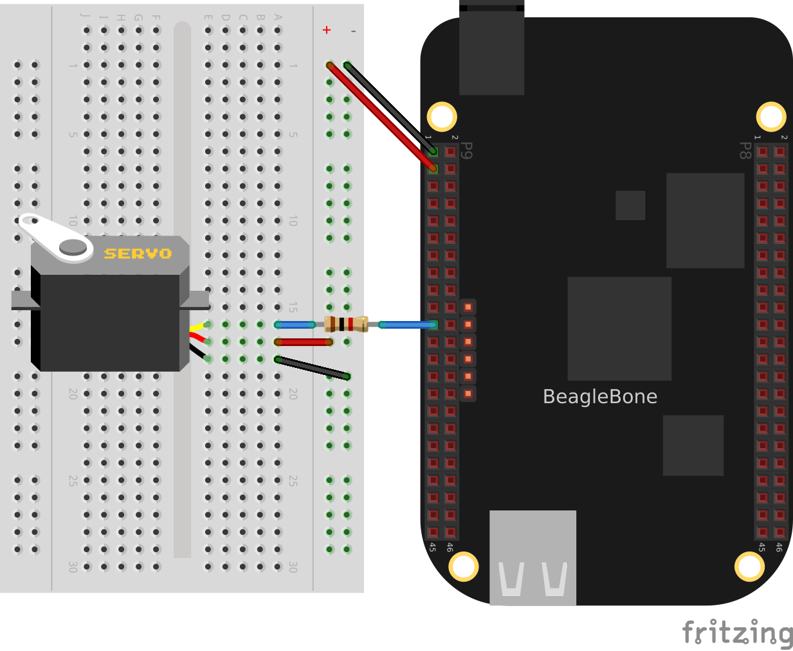
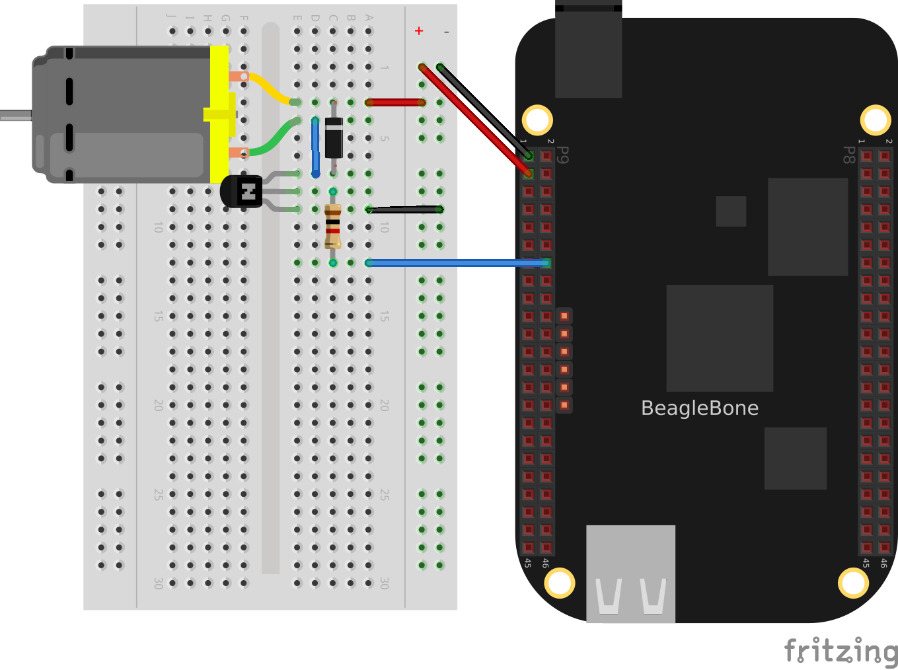

Basics
Introduction
When you buy BeagleBone Black, pretty much everything you need to get going comes with it. You can just plug it into the USB of a host computer, and it works. The goal of this chapter is to show what you can do with your Bone, right out of the box. It has enough information to carry through the next three chapters on sensors (Sensors), displays (Displays and Other Outputs), and motors (Motors).
Picking Your Beagle
Problem
There are five different BeagleBoards. How do you pick which one to use?
Solution
For someone new to the BeagleBoard.org boards, the BeagleBone Black is the obvious choice. It’s the newest and cheapest (~$55 USD) of the inexpensive Bones, and there are nearly a quarter-million units out there. Many of the recipes in this book will work on the other Beagles, too, but the Black is where to begin. If you already have BeagleBone Black, you can move on to the next recipe. If you have another Beagle, your mileage may vary.
Discussion
Getting Started, Out of the Box
Problem
You just got your Bone, and you want to know what to do with it.
Solution
Fortunately, you have all you need to get running: your Bone and a USB cable. Plug the USB cable into your host computer (Mac, Windows, or Linux) and plug the mini-USB connector side into the USB connector near the Ethernet connector on the Bone, as shown in Plugging BeagleBone Black into a USB port.

The four blue USER LEDs will begin to blink, and in 10 or 15 seconds, you’ll see a new USB drive appear on your host computer. The Bone appears as a USB drive shows how it will appear on a Windows host, and Linux and Mac hosts will look similar. The Bone acting like a USB drive and the files you see are located on the Bone.
Open the drive and open START.htm using Google Chrome or Firefox (Open START.htm).
|
Tip
|
Some users have reported problems when using Internet Explorer with the web pages served up by the Bone, so make sure to use Chrome or Firefox. |
Follow the instructions (Install the USB drivers) for installing the USB drivers for your host computer’s operating system (OS).
On your host, browse to http://192.168.7.2 (Open http://192.168.7.2 on your host computer).
You are now ready to explore your Bone. Look around. There’s lots of information on the page.
|
Tip
|
The green banner at the top of the page means the browser is talking to the Bone, and code on the page can be edited and run on the Bone. Try scrolling down to the code in "BoneScript interactive guide" and running it. Then try editing the code and running it again. Take five minutes and try it! Watch out, though, because you can’t save your edits. You need Cloud9 for that, as discussed next. |
Also be sure to browse to http://192.168.7.2:3000 from your host computer (Cloud9).

Here, you’ll find Cloud9, a web-based integrated development environment (IDE) that lets you edit and run code on your Bone! See Editing Code Using the Cloud9 IDE for more details.
|
Note
|
Cloud9 can have different themes. If you see a white background, you can match the cookbook’s figures by clicking on the Main Theme drop-down menu and selecting Cloud9 Classic Dark Theme. |
|
Warning
|
Make sure you turn off your Bone properly. It’s best to run the halt command: bone# halt The system is going down for system halt NOW! (pts/0) This will ensure that the Bone shuts down correctly. If you just pull the power, it’s possible that open files won’t close properly and might become corrupt. |
Discussion
The rest of this book goes into the details behind this quick out-of-the-box demo. Explore your Bone and then start exploring the book.
Verifying You Have the Latest Version of the OS on Your Bone
Problem
You just got BeagleBone Black, and you want to know which version of the operating system it’s running.
Solution
This book uses Debian, the Linux distribution that currently ships on the Bone. However this book is based on a newer version (2014-11-11 image) than what is shipping at the time of this writing. You can see which version your Bone is running by following the instructions in Getting Started, Out of the Box to open the USB drive that comes from the Bone, as shown in Open START.htm. But instead of opening START.html, open ID.txt (shown with the dashed arrow in Open START.htm). You’ll see something like Contents of ID.txt, in which 2014-11-11 is the date of the image.

Discussion
Running the BoneScript API Tutorials
Problem
You’d like to learn JavaScript and the BoneScript API to perform physical computing tasks without first learning Linux.
Solution
Plug your board into the USB of your host computer and browse to http://192.168.7.2/Support/bone101/ using Google Chrome or Firefox (as shown in Getting Started, Out of the Box). In the left column, click the BoneScript title, which will take you to http://192.168.7.2/Support/BoneScript/ (The BoneScript API examples page).

|
Tip
|
Explore the various demonstrations of the BoneScript API. The BoneScript examples page lists several places to learn more about JavaScript and BoneScript (The BoneScript API examples page). |
If the banner is green, the examples are live. Clicking the "run" button will make them run on your Bone.
|
Tip
|
Here’s yet another place to explore. In the left column of The BoneScript API examples page, click the function names. Take five minutes and see what you can find. |
|
Warning
|
You can edit the JavaScript on the BoneScript API examples page, but you can’t save it for later. If you want to edit and save it for later, fire up Cloud9 (Editing Code Using the Cloud9 IDE) and look in the examples folder. |
Discussion
Wiring a Breadboard
Problem
You would like to use a breadboard to wire things to the Bone.
Solution
Many of the projects in this book involve interfacing things to the Bone. Some plug in directly, like the USB port. Others need to be wired. If it’s simple, you might be able to plug the wires directly into the P8 or P9 headers. Nevertheless, many require a breadboard for the fastest and simplest wiring.
To make this recipe, you will need:
-
Breadboard and jumper wires (see Prototyping Equipment)
Breadboard wired to BeagleBone Black shows a breadboard wired to the Bone. All the diagrams in this book assume that the ground pin (P9_1 on the Bone) is wired to the negative rail and 3.3 V (P9_3) is wired to the positive rail.

Discussion
Editing Code Using the Cloud9 IDE
Problem
You want to edit and debug files on the Bone.
Solution
Plug your Bone into a host computer via the USB cable. Open a browser (either Google Chrome or FireFox will work) on your host computer (as shown in Getting Started, Out of the Box). After the Bone has booted up, browse to http://192.168.7.2:3000 on your host. You will see something like Cloud9.
Click the examples folder on the left and then double-click blinkled.js. You can now edit the file. If you would like to edit files in your home directory, on the left of the Cloud9 screen, go to the Preferences wheel in the Workspace browser and select Add Home to Favorites (Making your home folder appear in Cloud9). Now, your home directory will show up in the Workspace file tree.

|
Note
|
If you edit line 13 of the blinkled.js file (setInterval(toggle, 1000);), changing 1000 to 500, you must save the file before running it for the change to take effect. The blue LED next to the Ethernet port on your Bone will flash roughly twice as fast. |
Making your home folder appear in Cloud9 shows /root has been added under FAVORITES.
|
Note
|
The cloud9 folder that appears under FILE SYSTEM is located in /var/lib/cloud9 on your Bone. |
Discussion
Running JavaScript Applications from the Cloud9 IDE
Problem
You have a file edited in Cloud9, and you want to run it.
Solution
Cloud9 has a bash command window built in at the bottom of the window. You can run your code from this window. To do so, add #!/usr/bin/env node at the top of the file that you want to run and save.
|
Tip
|
If you are running Python, replace the word node in the line with python. |
At the bottom of the Cloud9 window are a series of tabs (Cloud9 debugger). Click the bash tab (it should be the leftmost tab). Here, you have a command prompt. In my case, it’s root@yoder-debian-bone:/var/lib/cloud9#. Yours will be slighly different, but it should end with a #.

Change to the directory that contains your file, make it executable, and then run it:
root@bone:/var/lib/cloud9# cd examples root@bone:/var/lib/cloud9/examples# chmod +x blinkled.js root@bone:/var/lib/cloud9/examples# ./blinkled.js
The cd is the change directory command. After you cd, you are in a new directory, and the prompt reflects that change. The chmod command changes the mode of the file. The +x indicates that you want to add execute permission. You need to use the chmod +x command only once. Finally, ./blinkled.js instructs the JavaScript to run. You will need to press ^C (Ctrl-C) to stop your program.
Discussion
Running Applications Automatically
Problem
You have a BoneScript application that you would like to run every time the Bone starts.
Solution
This is an easy one. In Cloud9, notice the folder called autorun (Making applications autorun at boot-up time). Place any BoneScript files you want to run at boot time in this folder. The script will begin execution immediately and will stop execution when you remove the file from this folder.

You can drag and drop the script into the autorun folder using the Cloud9 IDE workspace view, or you can move it using the bash prompt:
bone# mv myApp.js autorun
Discussion
Finding the Latest Version of the OS for Your Bone
Problem
You want to find out the latest version of Debian that is available for your Bone.
Solution
|
Note
|
At the time they were written, these instructions were up-to-date. Go to http://beagleboard.org/latest-images for the latest instructions. |
On your host computer, open a browser and go to http://rcn-ee.net/deb/testing/. This shows you a list of dates of the most recent Debian images (Latest Debian images).

Clicking a date will show you several variations for that particular date. Latest Debian images for a given date shows the results of clicking 2014-11-11.
Clicking lxde-4gb/ shows a list of 4 GB images (Latest 4 GB Debian images for a given date).
These are the images you want to use if you are flashing a Rev C BeagleBone Black onboard flash, or flashing a 4 GB or bigger miscroSD card. The image beginning with bone-debian-7.7-lxde is used for programming the microSD card. The one beginning with BBB-eMMC-flasher-deb is for programming the onboard flash memory.
|
Note
|
The onboard flash is often called the eMMC memory. We just call it onboard flash, but you’ll often see eMMC appearing in filenames of images used to update the onboard flash. |
Discussion
Running the Latest Version of the OS on Your Bone
Problem
You want to run the latest version of the operating system on your Bone without changing the onboard flash.
Solution
This solution is to flash an external microSD card and run the Bone from it. If you boot the Bone with a microSD card inserted with a valid boot image, it will boot from the microSD card. If you boot without the microSD card installed, it will boot from the onboard flash.
|
Tip
|
If you want to reflash the onboard flash memory, see Updating the Onboard Flash. |
|
Note
|
I instruct my students to use the microSD for booting. I suggest they keep an extra microSD flashed with the current OS. If they mess up the one on the Bone, it takes only a moment to swap in the extra microSD, boot up, and continue running. If they are running off the onboard flash, it will take much longer to reflash and boot from it. |
Windows
If you are using a host computer running Windows, go to http://rcn-ee.net/deb/testing/2014-11-11/lxde-4gb/, and download bone-debian-7.7-lxde-4gb-armhf-2014-11-11-4gb.img.xz. It’s more than 500 MB, so be sure to have a fast Internet connection. Then go to http://beagleboard.org/getting-started#update and follow the instructions there to install the image you downloaded.
Linux
If you are running a Linux host, plug a 4 GB byte or bigger microSD card into a reader on your host and run Disks.
Select the microSD Drive and unmount (Unmounting the microSD card via the Disks application) any partitions that have mounted. Note the path to the device (shown with an arrow in Unmounting the microSD card via the Disks application) at the top of the Disks window. In my case, it’s /dev/sdb. We’ll use this path in a moment.

Run the following command to download the 2014-11-11 image (be sure that you have a fast Internet connection; it’s more than 500 MB in size):
host$ wget http://rcn-ee.net/deb/testing/2014-11-11/lxde-4gb/\ bone-debian-7.7-lxde-4gb-armhf-2014-11-11-4gb.img.xz
This will copy the disk image to the current directory the command was run from to your host computer. This will take a couple minutes on a fast connection.
The downloaded file is compressed. Uncompress it by using the following command:
host$ unxz bone-debian-7.7-lxde-4gb-armhf-2014-11-11-4gb.img.xz
After a minute or so, the compressed .imgxz file will be replaced by the uncompressed .img file. Then write it to the microSD card by using the following command, substituting your device path noted earlier (/dev/sdb, in my case) for the device path given in the dd command:
host$ sudo dd if=bone-debian-7.7-lxde-4gb-armhf-2014-11-11-4gb.img \
of=/dev/sdb bs=8M
The dd command takes 5 to 10 minutes.
|
Warning
|
This operation will wipe out everything on the microSD card. It might be worth plugging in your card, noting the path, removing the card, noting it has disappeared, and then plugging it in again and checking the path. You can really mess up your host if you have selected the wrong disk and used the wrong path. Be careful. |
|
Note
|
When formatting SD cards, you often need to be sure to have a bootable partition. Because you are completly rewriting the card, it doesn’t matter how the card is configured before writing. The dd command writes everything the way it needs to be. |
When you have your microSD card flashed, put it in the Bone and power it up. The USB drive and other devices should appear as before. Open Cloud9 (Editing Code Using the Cloud9 IDE) and, in the bash tab, enter:
root@beaglebone:/var/lib/cloud9# df -h Filesystem Size Used Avail Use% Mounted on rootfs 3.2G 2.0G 1.0G 29% / udev 10M 0 10M 0% /dev tmpfs 100M 676K 99M 1% /run /dev/mmcblk0p2 7.2G 2.0G 5.0G 29% / tmpfs 249M 0 249M 0% /dev/shm tmpfs 249M 0 249M 0% /sys/fs/cgroup tmpfs 5.0M 0 5.0M 0% /run/lock tmpfs 100M 0 100M 0% /run/user /dev/mmcblk0p1 96M 62M 35M 65% /media/BEAGLEBONE /dev/mmcblk1p2 1.8G 290M 1.4G 18% /media/rootfs /dev/mmcblk1p1 16M 520K 16M 4% /media/BEAGLEBONE_
This prints out how much of the disk is free. The first line is the one we’re interested in. If the Size is much smaller than the size of your microSD card, you’ll need to resize your partition. Just enter the following:
root@beaglebone:/var/lib/cloud9# cd /opt/scripts/tools/ root@beaglebone:/opt/scripts/tools# ./grow_partition.sh root@beaglebone:/opt/scripts/tools# reboot root@beaglebone:/var/lib/cloud9# df -h Filesystem Size Used Avail Use% Mounted on rootfs 7.2G 2.0G 5.0G 29% / udev 10M 0 10M 0% /dev tmpfs 100M 676K 99M 1% /run /dev/mmcblk0p2 7.2G 2.0G 5.0G 29% / tmpfs 249M 0 249M 0% /dev/shm tmpfs 249M 0 249M 0% /sys/fs/cgroup tmpfs 5.0M 0 5.0M 0% /run/lock tmpfs 100M 0 100M 0% /run/user /dev/mmcblk0p1 96M 62M 35M 65% /media/BEAGLEBONE /dev/mmcblk1p2 1.8G 290M 1.4G 18% /media/rootfs /dev/mmcblk1p1 16M 520K 16M 4% /media/BEAGLEBONE_
This clever script will figure out how big the partition can be and grow it to that size. A reboot is necessary.
Here, I started by putting a 4 GB image on an 8 GB microSD card. Initially, only 3.2 GB were usable. After growing the partition, most of the card (7.2 GB) is available.
Mac
If you are running from a Mac host, the steps are fairly similar to running on a Linux host, except that you won’t be able to view the Linux partition on the created microSD card.
Begin by plugging a 4 GB or bigger microSD card into a reader on your host and then run Disk Utility. Select the disk and click Info. In Examining the microSD card via the Disk Utility application, you can see the Disk Identifier is disk1s1.

The important part of the Disk Identifier is the number immediately following disk (a 1 in Examining the microSD card via the Disk Utility application). We’ll use this identifier to overwrite the microSD contents.
From your Mac’s Terminal, run the following command to download the 2014-11-11 image (again, be sure that you have a fast Internet connection, because it’s more than 500 MB):
mac$ curl -O http://rcn-ee.net/deb/testing/2014-11-11/lxde-4gb/\ bone-debian-7.7-lxde-4gb-armhf-2014-11-11-4gb.img.xz
You’ll need to have the xz utility installed (download from The Tukaani Project [http://tukaani.org/xz/]). Uncompress the image by using the following command (this will take a minute or so):
mac$ unxz bone-debian-7.7-lxde-4gb-armhf-2014-11-11-4gb.img.xz
Then write it to the microSD card, substituting your device path noted earlier (/dev/rdisk1, in my case) for the device path given in the dd command:
mac$ sudo dd if=bone-debian-7.7-lxde-4gb-armhf-2014-11-11-4gb.img of=/dev/rdisk1
You’ll need to type in your password. The dd command takes 5 to 10 minutes.
|
Warning
|
This operation will wipe out everything on the microSD card. It might be worth plugging in your card, noting the path, removing the card, noting it has disappeared, and then plugging it in again and checking the path. You can really mess up your host if you have selected the wrong disk and used the wrong path. Be careful. |
|
Note
|
Note that I used rdisk1 rather than disk1. According to the eLinux wiki, doing so will speed up writing quite a bit. |
Discussion
Updating the OS on Your Bone
Problem
You’ve installed the latest version of Debian on your Bone (Running the Latest Version of the OS on Your Bone), and you want to be sure it’s up-to-date.
Solution
Ensure that your Bone is on the network and then run the following command on the Bone:
bone# apt-get update bone# apt-get upgrade
If there are any new updates, they will be installed.
|
Note
|
If you get the error The following signatures were invalid: KEYEXPIRED 1418840246, see eLinux support page for advice on how to fix it. |
Discussion
After you have a current image running on the Bone, it’s not at all difficult to keep it upgraded.
Backing Up the Onboard Flash
Problem
You’ve modified the state of your Bone in a way that you’d like to preserve or share.
Solution
The eLinux page on BeagleBone Black Extracting eMMC contents provides some simple steps for copying the contents of the onboard flash to a file on a microSD card:
-
Get a 4 GB or larger microSD card that is FAT formatted.
-
If you create a FAT-formatted microSD card, you must edit the partition and ensure that it is a bootable partition.
-
Download beagleboneblack-save-emmc.zip and uncompress and copy the contents onto your microSD card.
-
Eject the microSD card from your computer, insert it into the powered-off BeagleBone Black, and apply power to your board.
-
You’ll notice USER0 (the LED closest to the S1 button in the corner) will (after about 20 seconds) begin to blink steadily, rather than the double-pulse "heartbeat" pattern that is typical when your BeagleBone Black is running the standard Linux kernel configuration.
-
It will run for a bit under 10 minutes and then USER0 will stay on steady. That’s your cue to remove power, remove the microSD card, and put it back into your computer.
-
You will see a file called BeagleBoneBlack-eMMC-image-XXXXX.img, where XXXXX is a set of random numbers. Save this file to use for restoring your image later.
|
Note
|
Because the date won’t be set on your board, you might want to adjust the date on the file to remember when you made it. For storage on your computer, these images will typically compress very well, so use your favorite compression tool. |
|
Tip
|
The eLinux wiki is the definitive place for the BeagleBoard.org community to share information about the Beagles. Spend some time looking around for other helpful information. |
Discussion
Updating the Onboard Flash
Problem
You want to update the onboard flash rather than boot from the microSD card.
Solution
|
Note
|
At the time of this writing, these instructions were up-to-date. Go to http://beagleboard.org/latest-images for the latest instructions. |
If you want to use the onboard flash, you need to repeat the steps in Running the Latest Version of the OS on Your Bone, substituting BBB-eMMC-flasher-debian-7.7-lxde-4gb-armhf-2014-11-11-4gb.img.xz for lxde-4gb/bone-debian-7.7-lxde-4gb-armhf-2014-11-11-4gb.img.xz.
That is, download, uncompress, and copy to a microSD card by using the following commands:
host$ wget http://rcn-ee.net/deb/testing/2014-11-11/\
BBB-eMMC-flasher-debian-7.7-lxde-4gb-armhf-2014-11-11-4gb.img.xz
host$ unxz BBB-eMMC-flasher-debian-7.7-lxde-4gb-armhf-2014-11-11-4gb.img.xz
host$ sudo dd if=BBB-eMMC-flasher-debian-7.7-lxde-4gb-armhf-2014-11-11-4gb.img \
of=/dev/sdb bs=8M
Again, you’ll put the microSD card in the Bone and boot. However, there is one important difference: you must be powered from an external 5 V source. The flashing process requires more current than what typically can be pulled from USB.
|
Warning
|
If you write the onboard flash, be sure to power the Bone from an external 5 V source. The USB might not supply enough current. |
When you boot from the microSD card, it will copy the image to the onboard flash. When all four USER LEDs turn off (in some versions, they all turn on), you can power down the Bone and remove the microSD card. The next time you power up, the Bone will boot from the onboard flash.
Sensors
Introduction
In this chapter, you will learn how to sense the physical world with BeagleBone Black. Various types of electronic sensors, such as cameras and microphones, can be connected to the Bone using one or more interfaces provided by the standard USB 2.0 host port, as shown in The USB 2.0 host port.

The two 46-pin cape headers (called P8 and P9) along the long edges of the board (The P8 and P9 cape headers) provide connections for cape add-on boards, digital and analog sensors, and more.

The simplest kind of sensor provides a single digital status, such as off or on, and can be handled by an input mode of one of the Bone’s 65 general-purpose input/output (GPIO) pins. More complex sensors can be connected by using one of the Bone’s seven analog-to-digital converter (ADC) inputs or several I2C buses.
Displays and Other Outputs discusses some of the output mode usages of the GPIO pins.
All these examples assume that you know how to edit a file (Editing Code Using the Cloud9 IDE) and run it, either within the Cloud9 integrated development environment (IDE) or from the command line (Getting to the Command Shell via SSH).
Choosing a Method to Connect Your Sensor
Problem
You want to acquire and attach a sensor and need to understand your basic options.
Solution
Some of the many sensor connection options on the Bone shows many of the possibilities for connecting a sensor.
Choosing the simplest solution available enables you to move on quickly to addressing other system aspects. By exploring each connection type, you can make more informed decisions as you seek to optimize and troubleshoot your design.
Discussion
Input and Run a JavaScript Application for Talking to Sensors
Problem
You have your sensors all wired up and your Bone booted up, and you need to know how to enter and run your code.
Solution
You are just a few simple steps from running any of the recipes in this book.
-
Plug your Bone into a host computer via the USB cable (Getting Started, Out of the Box).
-
Start Cloud9 (Editing Code Using the Cloud9 IDE).
-
In the bash tab (as shown in Entering commands in the Cloud9 bash tab), run the following commands:
root@beaglebone:/var/lib/cloud9# cd root@beaglebone:~#

Here, we issued the change directory (cd) command without specifying a target directory. By default, it takes you to your home directory. Notice that the prompt has changed to reflect the change. The path changed from /var/lib/cloud9 to ~. The ~ is a shorthand for your home directory.
|
Note
|
If you log in as root, your home directory is /root. That is, anyone can cd /root to get into your home directory (though directories are initially locked). If you log in as debian, your home is /home/debian. If you were to create a new user called newuser, that user’s home would be /home/newuser. By default, all non-root (non-superuser) users have their home directories in /home. |
The following commands create a new directory for the sensor recipes, change to it, and use touch to create an empty file called pushbutton.js:
root@beaglebone:/var/lib/cloud9# cd /root root@beaglebone:~# mkdir boneSensors root@beaglebone:~# cd boneSensors root@beaglebone:~/boneSensors# touch pushbutton.js
Now, add recipe code to the newly created pushbutton.js file to enable it to run:
-
In Cloud9, in the Workspace browser on the left, go to the Preferences wheel and select Add Home to Favorites (Making your home folder appear in Cloud9). Now, your home directory will show up in the Workspace file tree.
-
In the Workspace browser, expand root.
-
You will see your newly created boneSensors directory; expand it. You will see your empty pushbutton.js
-
Double-click the pushbutton.js file to open it.
-
Paste the code for the recipe you want to run. This example uses Monitoring a pushbutton using a callback function (pushbutton.js).
-
Press ^S (Ctrl-S) to save the file. (You can also go to the File menu in Cloud9 and select Save to save the file, but Ctrl-S is easier.)
-
In the bash tab, enter the following commands:
root@beaglebone:~/boneSensors# chmod +x pushbutton.js root@beaglebone:~/boneSensors# ./pushbutton.js Interrupt handler attached x.value = 1 x.err = undefined x.value = 0 x.err = undefined x.value = 1 x.err = undefined ^C
This process will work for any script in this book.
|
Note
|
In this example, I’ve called b.pinMode() asynchronously and performed the b.attachInterrupt() call within the callback function. There are cases where BoneScript version 0.2.4 might not completely finish setting up a pin’s mode when called synchronously. That might result in needing to run a program twice to overcome the error. Using asynchronous calls is the preferred strategy to avoid this issue. |
Discussion
Reading the Status of a Pushbutton or Magnetic Switch (Passive On/Off Sensor)
Problem
You want to read a pushbutton, a magnetic switch, or other sensor that is electrically open or closed.
Solution
Connect the switch to a GPIO pin and use BoneScript pinMode() and attachInterrupt() functions.
To make this recipe, you will need:
-
Breadboard and jumper wires (see Prototyping Equipment)
-
Pushbutton switch (see Miscellaneous)
-
Magnetic reed switch (optional, see Miscellaneous)
You can wire up either a pushbutton, a magnetic reed switch, or both on the Bone, as shown in Diagram for wiring a pushbutton and magnetic reed switch input.
The code in Monitoring a pushbutton using a callback function (pushbutton.js) reads GPIO port P9_42, which is attached to the pushbutton.
Put this code in a file called pushbutton.js following the steps in Input and Run a JavaScript Application for Talking to Sensors. In the Cloud9 bash tab, run it by using the following commands:
bone# chmod +x ./pushbutton.js bone# ./pushbutton.js Interrupt handler attached x.value = 1 x.err = undefined x.value = 0 x.err = undefined
The chmod command makes it executable (you have to do this only once), and the second command runs it. Try pushing the button. The code waits for the value of the input to change; when it changes, the new value is printed out.
You will have to press ^C (Ctrl-C) to stop the code.
If you want to use the magnetic reed switch wired as shown in Diagram for wiring a pushbutton and magnetic reed switch input, change P9_42 to P9_26.
Discussion
Reading a Position, Light, or Force Sensor (Variable Resistance Sensor)
Problem
You have a variable resistor, force-sensitive resistor, flex sensor, or any of a number of other sensors that output their value as a variable resistance, and you want to read their value with the Bone.
Solution
Use the Bone’s analog-to-digital converters (ADCs) and a resistor divider circuit to detect the resistance in the sensor.
The Bone has seven built-in analog inputs that can easily read a resistive value. Seven analog inputs on the P9 header shows them on the lower part of the P9 header.
To make this recipe, you will need:
-
Breadboard and jumper wires (see Prototyping Equipment)
-
10 kΩ trimpot (see Resistors) or
-
Flex resistor (optional, see Resistors)
-
22 kΩ resistor (see Resistors)
A variable resistor with three terminals
Wiring a 10kΩ variable resistor (trimpot) to an ADC port shows a simple variable resistor (trimpot) wired to the Bone. One end terminal is wired to the ADC 1.8 V power supply on pin P9_32, and the other end terminal is attached to the ADC ground (P9_34). The middle terminal is wired to one of the seven analog-in ports (P9_36).

Reading an analog voltage (analogIn.js) shows the BoneScript code used to read the variable resistor. Add the code to a file called analogIn.js and run it; then change the resistor and run it again. The voltage read will change.
#!/usr/bin/env node
var b = require('bonescript');
b.analogRead('P9_36', printStatus);
function printStatus(x) {
console.log('x.value = ' + x.value.toFixed(3));
console.log('x.err = ' + x.err);
}|
Note
|
This code in Reading an analog voltage (analogIn.js) uses .toFixed(3) to print only three digits past the decimal. Otherwise, the output could have many extra digits. Try removing .toFixed(3) and see what happens. |
A variable resistor with two terminals
Some resistive sensors have only two terminals, such as the flex sensor in Reading a two-terminal flex resistor. The resistance between its two terminals changes when it is flexed. In this case, we need to add a fixed resistor in series with the flex sensor. Reading a two-terminal flex resistor shows how to wire in a 22 kΩ resistor to give a voltage to measure across the flex sensor.

The code in Reading an analog voltage (analogIn.js) also works for this setup.
Discussion
Reading a Distance Sensor (Analog or Variable Voltage Sensor)
Problem
You want to measure distance with a LV-MaxSonar-EZ1 Sonar Range Finder, which outputs a voltage in proportion to the distance.
Solution
To make this recipe, you will need:
-
Breadboard and jumper wires (see Prototyping Equipment)
-
LV-MaxSonar-EZ1 Sonar Range Finder (see Miscellaneous)
All you have to do is wire the EZ1 to one of the Bone’s analog-in pins, as shown in Wiring the LV-MaxSonar-EZ1 Sonar Range Finder to the P9_33 analog-in port. The device outputs ~6.4 mV/in when powered from 3.3 V.
|
Warning
|
Make sure not to apply more than 1.8 V to the Bone’s analog-in pins, or you will likely damage them. In practice, this circuit should follow that rule. |

Reading an analog voltage (ultrasonicRange.js) shows the code that reads the sensor at a fixed interval.
#!/usr/bin/env node
var b = require('bonescript');
var ms = 250; // Time in milliseconds
setInterval(readRange, ms);
function readRange() {
b.analogRead('P9_33', printStatus);
}
function printStatus(x) {
console.log('x.value = ' + x.value);
console.log('Distance= ' + x.value * 1.8/0.0064);
}Discussion
Reading a Distance Sensor (Variable Pulse Width Sensor)
Problem
You want to use a HC-SR04 Ultrasonic Range Sensor with BeagleBone Black.
Solution
The HC-SR04 Ultrasonic Range Sensor (shown in HC-SR04 Ultrasonic range sensor) works by sending a trigger pulse to the Trigger input and then measuring the pulse width on the Echo output. The width of the pulse tells you the distance.

To make this recipe, you will need:
-
Breadboard and jumper wires (see Prototyping Equipment)
-
10 kΩ and 20 kΩ resistors (see Resistors)
-
HC-SR04 Ultrsonic Range Sensor (see Miscellaneous)
Wire the sensor as shown in Wiring an HC-SR04 ultrasonic sensor. Note that the HC-SR04 is a 5 V device, so the banded wire (running from P9_7 on the Bone to VCC on the range finder) attaches the HC-SR04 to the Bone’s 5 V power supply.

Driving a HC-SR04 ultrasound sensor (hc-sr04-ultraSonic.js) shows BoneScript code used to drive the HC-SR04.
#!/usr/bin/env node
// This is an example of reading HC-SR04 Ultrasonic Range Finder
// This version measures from the fall of the Trigger pulse
// to the end of the Echo pulse
var b = require('bonescript');
var trigger = 'P9_16', // Pin to trigger the ultrasonic pulse
echo = 'P9_41', // Pin to measure to pulse width related to the distance
ms = 250; // Trigger period in ms
var startTime, pulseTime;
b.pinMode(echo, b.INPUT, 7, 'pulldown', 'fast', doAttach);
function doAttach(x) {
if(x.err) {
console.log('x.err = ' + x.err);
return;
}
// Call pingEnd when the pulse ends
b.attachInterrupt(echo, true, b.FALLING, pingEnd);
}
b.pinMode(trigger, b.OUTPUT);
b.digitalWrite(trigger, 1); // Unit triggers on a falling edge.
// Set trigger to high so we call pull it low later
// Pull the trigger low at a regular interval.
setInterval(ping, ms);
// Pull trigger low and start timing.
function ping() {
// console.log('ping');
b.digitalWrite(trigger, 0);
startTime = process.hrtime();
}
// Compute the total time and get ready to trigger again.
function pingEnd(x) {
if(x.attached) {
console.log("Interrupt handler attached");
return;
}
if(startTime) {
pulseTime = process.hrtime(startTime);
b.digitalWrite(trigger, 1);
console.log('pulseTime = ' + (pulseTime[1]/1000000-0.8).toFixed(3));
}
}This code is more complex than others in this chapter, because we have to tell the device when to start measuring and time the return pulse.
Discussion
Accurately Reading the Position of a Motor or Dial
Problem
You have a motor or dial and want to detect rotation using a rotary encoder.
Solution
Use a rotary encoder (also called a quadrature encoder) connected to one of the Bone’s eQEP ports, as shown in Wiring a rotary encoder using eQEP2.

To make this recipe, you will need:
-
Breadboard and jumper wires (see Prototyping Equipment)
-
Rotary encoder (see Miscellaneous)
We are using a quadrature rotary encoder, which has two switches inside that open and close in such a manner that you can tell which way the shaft is turning. In this particular encoder, the two switches have a common lead, which is wired to ground. It also has a pushbutton switch wired to the other side of the device, which we aren’t using.
Wire the encoder to P8_11 and P8_12, as shown in Wiring a rotary encoder using eQEP2.
BeagleBone Black has built-in hardware for reading up to three encoders. Here, we’ll use the eQEP2 encoder. To enable it, put the code from Configuring a rotary encoder (bone_eqep2b.dts) [1] in a file called bone_eqep2b.dts. You can do this using Cloud9 to edit files (as shown in Editing Code Using the Cloud9 IDE) or use a more traditional editor (as shown in Editing a Text File from the GNU/Linux Command Shell).
/*
* Copyright (C) 2013 Nathaniel R. Lewis - http://nathanielrlewis.com/
*
* This program is free software; you can redistribute it and/or modify
* it under the terms of the GNU General Public License version 2 as
* published by the Free Software Foundation.
*
* Enable eQEP2 on the Beaglebone White and Black
* These pins don't conflict with the HDMI
*/
/dts-v1/;
/plugin/;
/ {
compatible = "ti,beaglebone", "ti,beaglebone-black";
/* identification */
part-number = "bone_eqep2";
version = "00A0";
fragment@0 {
target = <&am33xx_pinmux>;
__overlay__ {
pinctrl_eqep2: pinctrl_eqep2_pins {
pinctrl-single,pins = <
0x038 0x24 /* P8_16 = GPIO2_12 = EQEP2_index, MODE4 */
0x03C 0x24 /* P8_15 = GPIO2_13 = EQEP2_strobe, MODE4 */
0x030 0x34 /* P8_12 = GPIO2_10 = EQEP2A_in, MODE4 */
0x034 0x34 /* P8_11 = GPIO2_11 = EQEP2B_in, MODE4 */
>;
};
};
};
fragment@1 {
target = <&epwmss2>;
__overlay__ {
status = "okay";
};
};
fragment@2 {
target = <&eqep2>;
__overlay__ {
pinctrl-names = "default";
pinctrl-0 = <&pinctrl_eqep2>;
count_mode = < 0 >;
/* 0 - Quadrature mode, normal 90 phase offset cha & chb.
1 - Direction mode. cha input = clock, chb input = direction */
swap_inputs = < 0 >; /* Are chan A & chan B swapped? (0-no,1-yes) */
invert_qa = < 1 >; /* Should we invert the channel A input? */
invert_qb = < 1 >; /* Should we invert the channel B input?
These are inverted because my encoder outputs drive transistors
that pull down the pins */
invert_qi = < 0 >; /* Should we invert the index input? */
invert_qs = < 0 >; /* Should we invert the strobe input? */
status = "okay";
};
};
};Then run the following commands:
bone# dtc -O dtb -o bone_eqep2b-00A0.dtbo -b 0 -@ bone_eqep2b.dts bone# cp bone_eqep2b-00A0.dtbo /lib/firmware bone# echo bone_eqep2b > /sys/devices/bone_capemgr.*/slots
This will enable eQEP2 on pins P8_11 and P8_12.
Finally, add the code in Reading a rotary encoder (rotaryEncoder.js) to a file named rotaryEncoder.js and run it.
#!/usr/bin/env node
// This uses the eQEP hardware to read a rotary encoder
// echo bone_eqep2b > $SLOTS
var b = require('bonescript'),
fs = require('fs');
var eQEP0 = "/sys/devices/ocp.3/48300000.epwmss/48300180.eqep/",
eQEP1 = "/sys/devices/ocp.3/48302000.epwmss/48302180.eqep/",
eQEP2 = "/sys/devices/ocp.3/48304000.epwmss/48304180.eqep/",
eQEP = eQEP2;
var oldData, // pervious data read
period = 100; // in ms
// Set the eEQP period, convert to ns.
fs.writeFile(eQEP+'period', period*1000000, function(err) {
if (err) throw err;
console.log('Period updated to ' + period*1000000);
})
// Enable
fs.writeFile(eQEP+'enabled', 1, function(err) {
if (err) throw err;
console.log('Enabled');
})
setInterval(readEncoder, period); // Check state every 250 ms
function readEncoder(x) {
fs.readFile(eQEP + 'position', {encoding: 'utf8'}, printValue);
}
function printValue(err, data) {
if (err) throw err;
if (oldData !== data) {
console.log('position: '+data+' speed: '+(oldData-data));
oldData = data;
}
}Try rotating the encoder clockwise and counter-clockwise. You’ll see an output like this:
Period updated to 100000000
Enabled
position: 0
speed: NaN
position: 4
speed: -4
position: 6
speed: -2
position: 8
speed: -2
position: 12
speed: -4
position: 16
speed: -4
position: 19
speed: -3
position: 20
speed: -1The values you get for speed and position will depend on which way you are turning the device and how quickly. You will need to press ^C (Ctrl-C) to end the program.
Discussion
See Also
You can also measure rotation by using a variable resistor (see Wiring a 10kΩ variable resistor (trimpot) to an ADC port).
Acquiring Data by Using a Smart Sensor over a Serial Connection
Problem
You want to connect a smart sensor that uses a built-in microcontroller to stream data, such as a global positioning system (GPS), to the Bone and read the data from it.
Solution
The Bone has several serial ports (UARTs) that you can use to read data from an external microcontroller included in smart sensors, such as a GPS. Just wire one up, and you’ll soon be gathering useful data, such as your own location.
Here’s what you’ll need:
-
Breadboard and jumper wires (see Prototyping Equipment)
-
GPS receiver (see Miscellaneous)
Wire your GPS, as shown in Wiring a GPS to UART 4.

The GPS will produce raw National Marine Electronics Association (NMEA) data that’s easy for a computer to read, but not for a human. There are many utilities to help convert such sensor data into a human-readable form. For this GPS, run the following command to load a NMEA parser:
bone# npm install -g nmea
Running the code in Talking to a GPS with UART 4 (GPS.js) will print the current location every time the GPS outputs it.
#!/usr/bin/env node
// Install with: npm install nmea
// Need to add exports.serialParsers = m.module.parsers;
// to the end of /usr/local/lib/node_modules/bonescript/serial.js
var b = require('bonescript');
var nmea = require('nmea');
var port = '/dev/ttyO4';
var options = {
baudrate: 9600,
parser: b.serialParsers.readline("\n")
};
b.serialOpen(port, options, onSerial);
function onSerial(x) {
if (x.err) {
console.log('***ERROR*** ' + JSON.stringify(x));
}
if (x.event == 'open') {
console.log('***OPENED***');
}
if (x.event == 'data') {
console.log(String(x.data));
console.log(nmea.parse(x.data));
}
}If you don’t need the NMEA formatting, you can skip the npm part and remove the lines in the code that refer to it.
|
Note
|
If you get an error like this TypeError: Cannot call method 'readline' of undefined add this line to the end of file /usr/local/lib/node_modules/bonescript/serial.js: exports.serialParsers = m.module.parsers; |
Discussion

Measuring a Temperature
Problem
You want to measure a temperature using a digital temperature sensor.
Solution
The TMP102 sensor is a common digital temperature sensor that uses a standard I2C-based serial protocol.
To make this recipe, you will need:
-
Breadboard and jumper wires (see Prototyping Equipment)
-
Two 4.7 kΩ resistors (see Resistors)
-
TMP102 temperature sensor (see Integrated Circuits)
Wire the TMP102, as shown in Wiring an I2C TMP102 temperature sensor.

There are two I2C buses brought out to the headers. Table of I2C outputs shows that you have wired your device to I2C bus 2, but watch out: the buses aren’t always numbered the same. When you work with BoneScript, they are numbered 1 and 2, but if you work from the Linux command line, they are numbered 0 and 1. Confusing, huh?

Once the I2C device is wired up, you can use a couple handy I2C tools to test the device. Because these are Linux command-line tools, you have to use 1 as the bus number. i2cdetect, shown in I2C tools, shows which I2C devices are on the bus. The -r flag indicates which bus to use. Our TMP102 is appearing at address 0x49. You can use the i2cget command to read the value. It returns the temperature in hexidecimal and degrees C. In this example, 0x18 = 24°C, which is 75.2°F. (Hmmm, the office is a bit warm today.) Try warming up the TMP102 with your finger and running i2cget again.
bone# i2cdetect -y -r 1
0 1 2 3 4 5 6 7 8 9 a b c d e f
00: -- -- -- -- -- -- -- -- -- -- -- -- --
10: -- -- -- -- -- -- -- -- -- -- -- -- -- -- -- --
20: -- -- -- -- -- -- -- -- -- -- -- -- -- -- -- --
30: -- -- -- -- -- -- -- -- -- -- -- -- -- -- -- --
40: -- -- -- -- -- -- -- -- -- 49 -- -- -- -- -- --
50: -- -- -- -- UU UU UU UU -- -- -- -- -- -- -- --
60: -- -- -- -- -- -- -- -- -- -- -- -- -- -- -- --
70: -- -- -- -- -- -- -- --
bone# i2cget -y 1 0x49
0x18
Reading an I2C device (i2cTemp.js) shows how to read the TMP102 from BoneScript.
#!/usr/bin/env node
var b = require('bonescript');
var bus = '/dev/i2c-2' // (1)
var TMP102 = 0x49; // (2)
b.i2cOpen(bus, TMP102); // (3)
b.i2cReadByte(bus, onReadByte); // (4)
function onReadByte(x) { // (5)
if (x.event == 'callback') {
console.log('onReadByte: ' + JSON.stringify(x)); // (6)
console.log(x.res*9/5+32 + 'F'); // (7)
}
}-
This line states which bus to use. The last digit gives the BoneScript bus number.
-
This gives the address of the device on the bus.
-
This line opens the device. All I2C commands that follow will apply to this bus and device.
-
This line reads a byte from the device. The default is to read from address 0 of the selected device. Address 0 for the TMP102 is the current temperature. As soon as the register is read, the onReadByte() function is called.
-
The value, x, passed to onReadByte() is an object. The .event field of the object informs us if we have a callback.
-
If this is a callback, use console.log to display the contents of object x.
-
Finally, print the result field, x.res, after converting it to degrees F.
Run the code by using the following command:
bone# ./i2cTemp.js
onReadByte: {"err":null,"res":24,"event":"callback"}
75.2F
Discussion
Reading Temperature via a Dallas 1-Wire Device
Problem
You want to measure a temperature using a Dallas Semiconductor DS18B20 temperature sensor.
Solution
The DS18B20 is an interesting temperature sensor that uses Dallas Semiconductor’s 1-wire interface. The data communication requires only one wire! (However, you still need wires from ground and 3.3 V.) You can wire it to any GPIO port.
To make this recipe, you will need:
-
Breadboard and jumper wires (see Prototyping Equipment)
-
4.7 kΩ resistor (see Resistors)
-
DS18B20 1-wire temperature sensor (see Integrated Circuits)
Wire up as shown in Wiring a Dallas 1-Wire temperature sensor [2].

Add the code in Reading a temperature with a DS18B20 (BB-W1-00A0.dts) to a file called BB-W1-00A0.dts.
/dts-v1/;
/plugin/;
/ {
compatible = "ti,beaglebone", "ti,beaglebone-black";
part-number = "BB-W1";
version = "00A0";
/* state the resources this cape uses */
exclusive-use =
/* the pin header uses */
"P9.20",
/* the hardware IP uses */
"gpio0_12";
fragment@0 {
target = <&am33xx_pinmux>;
__overlay__ {
dallas_w1_pins: pinmux_dallas_w1_pins {
pinctrl-single,pins = < 0x150 0x37 >;
};
};
};
fragment@1 {
target = <&ocp>;
__overlay__ {
onewire@0 {
compatible = "w1-gpio";
pinctrl-names = "default";
pinctrl-0 = <&dallas_w1_pins>;
status = "okay";
gpios = <&gpio1 2 0>;
};
};
};
};Then run the following commands:
bone# dtc -O dtb -o BB-W1-00A0.dtbo -b 0 -@ BB-W1-00A0.dts bone# cp BB-W1-00A0.dtbo /lib/firmware/ bone# echo BB-W1 > /sys/devices/bone_capemgr.*/slots
Now run the following command to discover the serial number on your device:
bone# ls /sys/bus/w1/devices/ 28-00000114ef1b 28-00000128197d w1_bus_master1
This shows the serial numbers for all the devices.
Finally, add the code in Reading a temperature with a DS18B20 (onewire.js) in to a file named onewire.js, edit the path assigned to w1 so that the path points to your device, and then run it.
#!/usr/bin/env node
var b = require('bonescript');
var w1="/sys/bus/w1/devices/28-00000114ef1b/w1_slave"
setInterval(getTemp, 1000); // read temperatue every 1000ms
function getTemp() {
b.readTextFile(w1, printStatus);
}
function printStatus(x) {
console.log('x.data = ' + x.data);
console.log('x.err = ' + x.err);
}Discussion
Each temperature sensor has a unique serial number, so you can have several all sharing the same data line.
Sensing All Sorts of Things with SensorTag via Bluetooth v4.0
Problem
You have a TI SensorTag, and you want to interface it to BeagleBone Black via Bluetooth Low Energy (BLE).
Solution
TI’s SensorTag (shown in SensorTag) combines six sensors (temperature, humidity, accelerometer, pressure, magnetometer, and gyroscope) in one package that interfaces via Bluetooth Low Energy.
To make this recipe, you will need:
-
BLE USB dongle (see Miscellaneous)
-
SensorTag (see Miscellaneous)
-
5 V adapter for the Bone
Power up your Bone using the 5 V adapter. You need the adapter because the BLE dongle needs extra power for the radios it contains. After it is booted up, log in (Getting to the Command Shell via SSH) and run the following commands:
bone# apt-get install libbluetooth-dev bone# npm install -g sensortag
This installs the Bluetooth tools and the JavaScript library to talk to it.
Add the code in Code for reading the temperature from a SensorTag (sensorTag.js) to a file called sensorTag.js and run it.
#!/usr/bin/env node
// From: https://github.com/sandeepmistry/node-sensortag
// Reads temperature
var util = require('util'); // (1)
var async = require('async');
var SensorTag = require('sensortag');
var fs = require('fs');
console.log("Be sure sensorTag is on");
SensorTag.discover(function(sensorTag) { // (2)
console.log('sensorTag = ' + sensorTag);
sensorTag.on('disconnect', function() { // (3)
console.log('disconnected!');
process.exit(0);
});
async.series([ // (4)
function(callback) {
console.log('connect'); // (5)
sensorTag.connect(callback);
},
function(callback) { // (6)
console.log('discoverServicesAndCharacteristics');
sensorTag.discoverServicesAndCharacteristics(callback);
},
function(callback) {
console.log('enableIrTemperature'); // (7)
sensorTag.enableIrTemperature(callback);
},
function(callback) {
setTimeout(callback, 100); // (8)
},
function(callback) {
console.log('readIrTemperature'); // (9)
sensorTag.readIrTemperature(
function(objectTemperature, ambientTemperature) {
console.log('\tobject temperature = %d °C',
objectTemperature.toFixed(1));
console.log('\tambient temperature = %d °C',
ambientTemperature.toFixed(1));
callback();
});
sensorTag.on('irTemperatureChange', // (10)
function(objectTemperature, ambientTemperature) {
console.log('\tobject temperature = %d °C',
objectTemperature.toFixed(1));
console.log('\tambient temperature = %d °C\n',
ambientTemperature.toFixed(1));
});
sensorTag.notifyIrTemperature(function() {
console.log('notifyIrTemperature');
});
},
// function(callback) {
// console.log('disableIrTemperature'); // (11)
// sensorTag.disableIrTemperature(callback);
// },
function(callback) {
console.log('readSimpleRead'); // <12>
sensorTag.on('simpleKeyChange', function(left, right) {
console.log('left: ' + left + ' right: ' + right);
if (left && right) {
sensorTag.notifySimpleKey(callback); // (13)
}
});
sensorTag.notifySimpleKey(function() { // (14)
});
},
function(callback) {
console.log('disconnect');
sensorTag.disconnect(callback); // (15)
}
]
);
});
// The MIT License (MIT)
// Copyright (c) 2013 Sandeep Mistry
// Permission is hereby granted, free of charge, to any person obtaining a copy of
// this software and associated documentation files (the "Software"), to deal in
// the Software without restriction, including without limitation the rights to
// use, copy, modify, merge, publish, distribute, sublicense, and/or sell copies of
// the Software, and to permit persons to whom the Software is furnished to do so,
// subject to the following conditions:
// The above copyright notice and this permission notice shall be included in all
// copies or substantial portions of the Software.
// THE SOFTWARE IS PROVIDED "AS IS", WITHOUT WARRANTY OF ANY KIND, EXPRESS OR
// IMPLIED, INCLUDING BUT NOT LIMITED TO THE WARRANTIES OF MERCHANTABILITY, FITNESS
// FOR A PARTICULAR PURPOSE AND NONINFRINGEMENT. IN NO EVENT SHALL THE AUTHORS OR
// COPYRIGHT HOLDERS BE LIABLE FOR ANY CLAIM, DAMAGES OR OTHER LIABILITY, WHETHER
// IN AN ACTION OF CONTRACT, TORT OR OTHERWISE, ARISING FROM, OUT OF OR IN
// CONNECTION WITH THE SOFTWARE OR THE USE OR OTHER DEALINGS IN THE SOFTWARE.-
Read in the various packages that are needed.
-
SensorTag.discover checks what SensorTags are out there. When found, it calls the inline function that follows.
-
This function is called when the SensorTag is disconnected.
-
Normally JavaScript does everything synchronously. Here, we want to do the following asynchronously—that is, step-by-step, one after the other. We are passing an array to async.series(), which contains the functions to run in the order in which they appear in the array.
-
Connect to the SensorTag.
-
Discover what the SensorTag can do. This is necessary before we can give it any commands.
-
Enable temperatures. We don’t get a temperature reading yet. Rather, we’re instructing it to begin reading and report back when they are ready.
-
Wait a bit for the first temperatures to be read.
-
This specifies the function to call every time a temperature is ready. The callback is passed objectTemperature (what’s read by the touchless IR sensors) and ambientTemperature (the temperature inside the SensorTag). Try putting your hand in front of the device; the objectTemperature should go up.
-
Define the callback for when the temperature changes.
-
This commented-out code is used when you want to turn off the temperature readings.
-
Assign a callback to respond to the left and right button pushes.
-
If both buttons are pushed, pass the callback function to sensorTag.notifySimpleKey().
-
sensorTag.notifySimpleKey() doesn’t do anything in this case, but it does evaluate callback, allowing it to progress to the next and final state.
-
When we get to here, we disconnect from the SensorTag, which causes the code to exit (see
 ).
).
Here’s some output from the code:
Be sure sensorTag is on
sensorTag = {"uuid":"9059af0b8457"}
connect
discoverServicesAndCharacteristics
enableIrTemperature
readIrTemperature
object temperature = 2.8 °C
ambient temperature = 0 °C
readSimpleRead
notifyIrTemperature
object temperature = 31.8 °C
ambient temperature = 24.8 °C
object temperature = 25.9 °C
ambient temperature = 24.8 °C
object temperature = 27.4 °C
ambient temperature = 24.8 °C
object temperature = 32.2 °C
ambient temperature = 24.8 °C
left: false right: true
left: true right: true
left: false right: false
disconnect
disconnected!Discussion
Here, you see examples of how to read all the sensors. Look in index.js (in the same directory) to see all the methods that are defined.
Playing and Recording Audio
Problem
BeagleBone doesn’t have audio built in, but you want to play and record files.
Solution
One approach is to buy an audio cape (Capes), but another, possibly cheaper approach is to buy a USB audio adapter, such as the one shown in A USB audio dongle. Some adapters that I’ve tested are provided in Miscellaneous.

Drivers for the Advanced Linux Sound Architecture (ALSA) are already installed on the Bone. You can list the recording and playing devices on your Bone by using aplay and arecord, as shown in Listing the ALSA audio output and input devices on the Bone. BeagleBone Black has audio-out on the HDMI interface. It’s listed as card 0 in Listing the ALSA audio output and input devices on the Bone. card 1 is my USB audio adapter’s audio out.
bone# aplay -l **** List of PLAYBACK Hardware Devices **** card 0: Black [TI BeagleBone Black], device 0: HDMI nxp-hdmi-hifi-0 [] Subdevices: 1/1 Subdevice #0: subdevice #0 card 1: Device [C-Media USB Audio Device], device 0: USB Audio [USB Audio] Subdevices: 1/1 Subdevice #0: subdevice #0 bone# arecord -l **** List of CAPTURE Hardware Devices **** card 1: Device [C-Media USB Audio Device], device 0: USB Audio [USB Audio] Subdevices: 1/1 Subdevice #0: subdevice #0
In the aplay output shown in Listing the ALSA audio output and input devices on the Bone, you can see the USB adapter’s audio out. By default, the Bone will send audio to the HDMI. You can change that default by creating a file in your home directory called ~/.asoundrc and adding the code in Change the default audio out by putting this in ~/.asoundrc (audio.asoundrc) to it.
pcm.!default {
type plug
slave {
pcm "hw:1,0"
}
}
ctl.!default {
type hw
card 1
}You can easily play .wav files with aplay:
bone# aplay test.wav
You can play other files in other formats by installing mplayer:
bone# apt-get update bone# apt-get install mplayer bone# mplayer test.mp3
Discussion
Adding the simple USB audio adapter opens up a world of audio I/O on the Bone.
Displays and Other Outputs
Introduction
In this chapter, you will learn how to control physical hardware via BeagleBone Black’s general-purpose input/output (GPIO) pins. The Bone has 65 GPIO pins that are brought out on two 46-pin headers, called P8 and P9, as shown in The P8 and P9 GPIO headers.

The purpose of this chapter is to give simple examples that show how to use various methods of output. Most solutions require a breadboard and some jumper wires.
All these examples assume that you know how to edit a file (Editing Code Using the Cloud9 IDE) and run it, either within Cloud9 integrated development environment (IDE) or from the command line (Getting to the Command Shell via SSH).
Toggling an Onboard LED
Problem
You want to know how to flash the four LEDs that are next to the Ethernet port on the Bone.
Solution
Locate the four onboard LEDs shown in The four USER LEDs. They are labeled USR0 through USR3, but we’ll refer to them as the USER LEDs.

Place the code shown in Using an internal LED (internLED.js) in a file called internLED.js. You can do this using Cloud9 to edit files (as shown in Editing Code Using the Cloud9 IDE) or with a more traditional editor (as shown in Editing a Text File from the GNU/Linux Command Shell).
#!/usr/bin/env node
var b = require('bonescript');
var LED = 'USR0';
var state = b.HIGH; // Initial state
b.pinMode(LED, b.OUTPUT);
setInterval(flash, 250); // Change state every 250 ms
function flash() {
b.digitalWrite(LED, state);
if(state === b.HIGH) {
state = b.LOW;
} else {
state = b.HIGH;
}
}In the bash command window, enter the following commands:
bone# chmod +x internLED.js bone# ./internLED.js
The USER0 LED should now be flashing.
Discussion
Toggling an External LED
Problem
You want to connect your own external LED to the Bone.
Solution
Connect an LED to one of the GPIO pins using a series resistor to limit the current. To make this recipe, you will need:
-
Breadboard and jumper wires (see Prototyping Equipment)
-
220 Ω to 470 Ω resistor (see Resistors)
-
LED (see Opto-Electronics)
|
Warning
|
The value of the current limiting resistor depends on the LED you are using. The Bone can drive only 4 to 6 mA, so you might need a larger resistor to keep from pulling too much current. A 330 Ω or 470 Ω resistor might be better. |
Diagram for using an external LED shows how you can wire the LED to pin 14 of the P9 header (P9_14). Every circuit in this book (Wiring a Breadboard) assumes you have already wired the rightmost bus to ground (P9_1) and the next bus to the left to the 3.3 V (P9_3) pins on the header. Be sure to get the polarity right on the LED. The short lead always goes to ground.

After you’ve wired it, start Cloud9 (see Editing Code Using the Cloud9 IDE) and enter the code shown in Code for using an external LED (externLED.js) in a file called externLED.js.
#!/usr/bin/env node
var b = require('bonescript');
var LED = 'P9_14';
var state = b.HIGH; // Initial state
b.pinMode(LED, b.OUTPUT);
setInterval(flash, 250); // Change state every 250 ms
function flash() {
b.digitalWrite(LED, state);
if(state === b.HIGH) {
state = b.LOW;
} else {
state = b.HIGH;
}
}Save your file and run the code as before (Toggling an Onboard LED).
Discussion
Toggling a High-Voltage External Device
Problem
You want to control a device that runs at 120 V.
Solution
Working with 120 V can be tricky—even dangerous—if you aren’t careful. Here’s a safe way to do it.
To make this recipe, you will need:
-
PowerSwitch Tail II (see Miscellaneous)
Diagram for wiring PowerSwitch Tail II shows how you can wire the PowerSwitch Tail II to pin P9_14.
After you’ve wired it, because this uses the same output pin as Toggling an External LED, you can run the same code (Code for using an external LED (externLED.js)).
Discussion
Fading an External LED
Problem
You want to change the brightness of an LED from the Bone.
Solution
BoneScript has an analogWrite() function that uses the Bone’s pulse width modulation (PWM) hardware to produce an analog out signal. We’ll use the same circuit as before (Diagram for using an external LED) and declare the pin mode to be ANALOG_OUTPUT. Add the code in Code for using an external LED (fadeLED.js) to a file called fadeLED.js and then run it as before.
#!/usr/bin/env node
var b = require('bonescript');
var LED = 'P9_14'; // Pin to use
var step = 0.02, // Step size
min = 0.02, // dimmest value
max = 1, // brightest value
brightness = min; // Current brightness;
b.pinMode(LED, b.ANALOG_OUTPUT, 6, 0, 0, doInterval);
function doInterval(x) {
if(x.err) {
console.log('x.err = ' + x.err);
return;
}
setInterval(fade, 20); // Step every 20 ms
}
function fade() {
b.analogWrite(LED, brightness);
brightness += step;
if(brightness >= max || brightness <= min) {
step = -1 * step;
}
}Discussion
Writing to an LED Matrix
Problem
You have an I2C-based LED matrix to interface.
Solution
There are a number of nice LED matrices that allow you to control several LEDs via one interface. This solution uses an Adafruit Bicolor 8x8 LED Square Pixel Matrix w/I2C Backpack.
To make this recipe, you will need:
-
Breadboard and jumper wires (see Prototyping Equipment)
-
Two 4.7 kΩ resistors (see Resistors)
-
I2C LED matrix (see Opto-Electronics)
The LED matrix is a 5 V device, but you can drive it from 3.3 V. Wire, as shown in Wiring an i2c LED matrix.

Measuring a Temperature shows how to use i2cdetect to discover the address of an I2C device. It also describes the difference between how Linux numbers the I2C buses (0 and 1) versus how BoneScript numbers them (1 and 2). Let’s see how your display shows up.
|
Note
|
The BoneScript library convention is to use the index numbers provided in the hardware documentation. The version of the Linux kernel we use, however, begins index numbers at 0 for the first one registered and increases by 1, so these numbers might not always match. The BoneScript library attempts to hide this complication from you. |
Run the i2cdetect -y -r 1 command to discover the address of the display, as shown in Using I2C command-line tools to discover the address of the display.
bone# i2cdetect -y -r 1
0 1 2 3 4 5 6 7 8 9 a b c d e f
00: -- -- -- -- -- -- -- -- -- -- -- -- --
10: -- -- -- -- -- -- -- -- -- -- -- -- -- -- -- --
20: -- -- -- -- -- -- -- -- -- -- -- -- -- -- -- --
30: -- -- -- -- -- -- -- -- -- -- -- -- -- -- -- --
40: -- -- -- -- -- -- -- -- -- 49 -- -- -- -- -- --
50: -- -- -- -- UU UU UU UU -- -- -- -- -- -- -- --
60: -- -- -- -- -- -- -- -- -- -- -- -- -- -- -- --
70: 70 -- -- -- -- -- -- --
Here, you can see a device at 0x49 and 0x70. I know I have a temperature sensor at 0x49, so the LED matrix must be at 0.70.
Add the code in LED matrix display (matrixLEDi2c.js) to a file called matrixLEDi2c.js and run it by using the following command:
bone# npm install -g sleep bone# ./matrixLEDi2c.js
#!/usr/bin/env node
// npm install -g sleep
var b = require('bonescript');
var sleep = require('sleep');
var port = '/dev/i2c-2' // (1)
var matrix = 0x70; // (2)
var time = 1000000; // Delay between images in us
// The first btye is GREEN, the second is RED. (3)
var smile =
[0x00, 0x3c, 0x00, 0x42, 0x28, 0x89, 0x04, 0x85,
0x04, 0x85, 0x28, 0x89, 0x00, 0x42, 0x00, 0x3c];
var frown =
[0x3c, 0x00, 0x42, 0x00, 0x85, 0x20, 0x89, 0x00,
0x89, 0x00, 0x85, 0x20, 0x42, 0x00, 0x3c, 0x00];
var neutral =
[0x3c, 0x3c, 0x42, 0x42, 0xa9, 0xa9, 0x89, 0x89,
0x89, 0x89, 0xa9, 0xa9, 0x42, 0x42, 0x3c, 0x3c];
var blank = [0, 0, 0, 0, 0, 0, 0, 0, 0, 0, 0, 0, 0, 0, 0, 0, 0];
b.i2cOpen(port, matrix); // (4)
b.i2cWriteByte(port, 0x21); // Start oscillator (p10) (5)
b.i2cWriteByte(port, 0x81); // Disp on, blink off (p11)
b.i2cWriteByte(port, 0xe7); // Full brightness (page 15)
b.i2cWriteBytes(port, 0x00, frown); // (6)
sleep.usleep(time);
b.i2cWriteBytes(port, 0x00, neutral);
sleep.usleep(time);
b.i2cWriteBytes(port, 0x00, smile);
// Fade the display
var fade;
for(fade = 0xef; fade >= 0xe0; fade--) { // (7)
b.i2cWriteByte(port, fade);
sleep.usleep(time/10);
}
for(fade = 0xe1; fade <= 0xef; fade++) {
b.i2cWriteByte(port, fade);
sleep.usleep(time/10);
}
b.i2cWriteBytes(port, 0x04, [0xff]);-
This line states which bus to use. The last digit gives the BoneScript bus number.
-
This specifies the address of the LED matrix, 0x70 in our case.
-
This indicates which LEDs to turn on. The first byte is for the first column of green LEDs. In this case, all are turned off. The next byte is for the first column of red LEDs. The hex 0x3c number is 0b00111100 in binary. This means the first two red LEDs are off, the next four are on, and the last two are off. The next byte (0x00) says the second column of green LEDs are all off, the fourth byte (0x42 = 0b01000010) says just two red LEDs are on, and so on. Declarations define four different patterns to display on the LED matrix, the last being all turned off.
-
Open the I2C port.
-
Send three commands to the matrix to get it ready to display.
-
Now, we are ready to display the various patterns. After each pattern is displayed, we sleep a certain amount of time so that the pattern can be seen.
-
Finally, send commands to the LED matrix to set the brightness. This makes the disply fade out and back in again.
Discussion
Driving a 5 V Device
Problem
You have a 5 V device to drive, and the Bone has 3.3 V outputs.
Solution
If you are lucky, you might be able to drive a 5 V device from the Bone’s 3.3 V output. Try it and see if it works. If not, you need a level translator.
What you will need for this recipe:
-
A PCA9306 level translator (see Integrated Circuits)
-
A 5 V power supply (if the Bone’s 5 V power supply isn’t enough)
The PCA9306 translates signals at 3.3 V to 5 V in both directions. It’s meant to work with I2C devices that have a pull-up resistor, but it can work with anything needing translation.
Wiring a PCA9306 level translator to an LED matrix shows how to wire a PCA9306 to an LED matrix. The left is the 3.3 V side and the right is the 5 V side. Notice that we are using the Bone’s built-in 5 V power supply.

|
Note
|
If your device needs more current than the Bone’s 5 V power supply provides, you can wire in an external power supply. |
Discussion
Writing to a NeoPixel LED String
Problem
You have an Adafruit NeoPixel LED string or Adafruit NeoPixel LED matrix and want to light it up.
Solution
Wire up an Adafruit NeoPixel LED 8-by-8 matrix as shown in Wiring an Adafruit NeoPixel LED matrix to P8_30.
Installing and running LEDscape and OpenPixelControl (neoPixel.sh) shows how to install LEDscape and run the LEDs.
#!/bin/sh
# Here's what you do to install the neoPixel driver
# Disable the HDMI to gain access to the PRU pins
sed -i '/cape_disable=capemgr.disable_partno=BB-BONELT-HDMI,BB-BONELT-HDMIN$/ \
s/^#//' /boot/uEnv.txt
reboot
# Clone and build the code
cd
git clone -b opc-server https://github.com/jadonk/LEDscape.git
cd LEDscape
make
cd
git clone https://github.com/jadonk/openpixelcontrol.git
# Load and configure the kernel module, pins and LEDscape daemon
config-pin overlay BB-OPC-EX
modprobe uio_pruss
./LEDscape/run-ledscape &
# Run an example Python script
./openpixelcontrol/python_clients/example.pyDiscussion
Using a Nokia 5510 LCD Display
Problem
You want to display some text and graphics on a Nokia 5510 black-and-white LCD display.
Solution
What you will need for this recipe:
-
Breadboard and jumper wires (see Prototyping Equipment)
-
Nokia 5110 LCD (see Miscellaneous)
-
220 Ω resistor (see Resistors)
The Nokia 5110 LCD runs off of 3.3 V, so you can wire it directly to the Bone (Wiring a Nokia 5110 LCD display).

The drivers for the 5110 are in the Node Packaged Modules repository. Get and install them by running the following commands:
bone# npm install -g nokia5110 bone# cd /usr/local/lib/node_modules/nokia5110 bone# ln -s LCD_5110.js nokia5110.js bone# cp lcdTest.js /tmp bone# cd - bone# mv /tmp/lcdTest.js nokia5110Test.js
Edit nokia5110Test.js so that the first few lines specify how it’s wired (as shown in Defining the Nokia 5110 pins (nokia5110.js)) and then run the code.
#!/usr/bin/env node
//
// Copyright (C) 2012 - Cabin Programs, Ken Keller
//
var lcd = require('nokia5110');
var b = require('bonescript');
var timeout = 0;
var inverseIndex;
//
// Must define the following outputs
//
lcd.PIN_SDIN = "P9_17";
lcd.PIN_SCLK = "P9_21";
lcd.PIN_SCE = "P9_11";
lcd.PIN_DC = "P9_15";
lcd.PIN_RESET= "P9_13";Discussion
Making Your Bone Speak
Problem
Your Bone wants to talk.
Solution
Just install the flite text-to-speech program:
bone# apt-get install flite
Then add the code from A program that talks (speak.js) in a file called speak.js and run.
#!/usr/bin/env node
var exec = require('child_process').exec;
function speakForSelf(phrase) {
{
exec('flite -t "' + phrase + '"', function (error, stdout, stderr) {
console.log(stdout);
if(error) {
console.log('error: ' + error);
}
if(stderr) {
console.log('stderr: ' + stderr);
}
});
}
speakForSelf("Hello, My name is Borris. " +
"I am a BeagleBone Black, " +
"a true open hardware, " +
"community-supported embedded computer for developers and hobbyists. " +
"I am powered by a 1 Giga Hertz Sitara™ ARM® Cortex-A8 processor. " +
"I boot Linux in under 10 seconds. " +
"You can get started on development in " +
"less than 5 minutes with just a single USB cable." +
"Bark, bark!"
);See Playing and Recording Audio to see how to use a USB audio dongle and set your default audio out.
Discussion
Motors
Introduction
One of the many fun things about embedded computers is that you can move physical things with motors. But there are so many different kinds of motors (servo, stepper, DC), so how do you select the right one?
The type of motor you use depends on the type of motion you want:
- R/C or hobby servo motor
-
Can be quickly positioned at various absolute angles, but some don’t spin. In fact, many can turn only about 180°.
- Stepper motor
-
Spins and can also rotate in precise relative angles, such as turning 45°. Stepper motors come in two types: bipolar (which has four wires) and unipolar (which has five or six wires).
- DC motor
-
Spins either clockwise or counter-clockwise and can have the greatest speed of the three. But a DC motor can’t easily be made to turn to a given angle.
When you know which type of motor to use, interfacing is easy. This chapter shows how to interface with each of these motors.
|
Note
|
Motors come in many sizes and types. This chapter presents some of the more popular types and shows how they can interface easily to the Bone. If you need to turn on and off a 120 V motor, consider using something like the PowerSwitch presented in Toggling a High-Voltage External Device. |
|
Note
|
The Bone has built-in 3.3 V and 5 V supplies, which can supply enough current to drive some small motors. Many motors, however, draw enough current that an external power supply is needed. Therefore, an external 5 V power supply is listed as optional in many of the recipes. |
Controlling a Servo Motor
Problem
You want to use BeagleBone to control the absolute position of a servo motor.
Solution
We’ll use the pulse width modulation (PWM) hardware of the Bone and control a servo motor with the analogWrite() function.
To make the recipe, you will need:
-
Servo motor (see Miscellaneous)
-
Breadboard and jumper wires (see Prototyping Equipment)
-
1 kΩ resistor (optional, see Resistors)
-
5 V power supply (optional, see Miscellaneous)
The 1 kΩ resistor isn’t required, but it provides some protection to the general-purpose input/output (GPIO) pin in case the servo fails and draws a large current.
Wire up your servo, as shown in Driving a servo motor with the 3.3 V power supply.
|
Note
|
There is no standard for how servo motor wires are colored. One of my servos is wired like Driving a servo motor with the 3.3 V power supply: red is 3.3 V, black is ground, and yellow is the control line. I have another servo that has red as 3.3 V and ground is brown, with the control line being orange. Generally, though, the 3.3 V is in the middle. Check the datasheet for your servo before wiring. |

The code for controlling the servo motor is in servoMotor.js, shown in Code for driving a servo motor (servoMotor.js).
#!/usr/bin/env node
// Drive a simple servo motor back and forth
var b = require('bonescript');
var motor = 'P9_21', // Pin to control servo
freq = 50, // Servo frequency (20 ms)
min = 0.8, // Smallest angle (in ms)
max = 2.5, // Largest angle (in ms)
ms = 250, // How often to change position, in ms
pos = 1.5, // Current position, about middle
step = 0.1; // Step size to next position
console.log('Hit ^C to stop');
b.pinMode(motor, b.ANALOG_OUTPUT, 6, 0, 0, doInterval);
function doInterval(x) {
if(x.err) {
console.log('x.err = ' + x.err);
return;
}
timer = setInterval(sweep, ms);
}
move(pos); // Start in the middle
// Sweep from min to max position and back again
function sweep() {
pos += step; // Take a step
if(pos > max || pos < min) {
step *= -1;
}
move(pos);
}
function move(pos) {
var dutyCycle = pos/1000*freq;
b.analogWrite(motor, dutyCycle, freq);
console.log('pos = ' + pos + ' duty cycle = ' + dutyCycle);
}
process.on('SIGINT', function() {
console.log('Got SIGINT, turning motor off');
clearInterval(timer); // Stop the timer
b.analogWrite(motor, 0, freq); // Turn motor off
});Running the code causes the motor to move back and forth, progressing to successive positions between the two extremes. You will need to press ^C (Ctrl-C) to stop the script.
Discussion
Controlling the Speed of a DC Motor
Problem
You have a DC motor (or a solenoid) and want a simple way to control its speed, but not the direction.
Solution
It would be nice if you could just wire the DC motor to BeagleBone Black and have it work, but it won’t. Most motors require more current than the GPIO ports on the Bone can supply. Our solution is to use a transistor to control the current to the bone.
Here’s what you will need:
-
3 V to 5 V DC motor
-
Breadboard and jumper wires (see Prototyping Equipment)
-
1 kΩ resistor (see Resistors)
-
Transistor 2N3904 (see Transistors and Diodes)
-
Diode 1N4001 (see Transistors and Diodes)
-
Power supply for the motor (optional)
If you are using a larger motor (more current), you will need to use a larger transistor.
Wire your breadboard as shown in Wiring a DC motor to spin one direction.

Use the code in Driving a DC motor in one direction (dcMotor.js) (dcMotor.js) to run the motor.
#!/usr/bin/env node
// This is an example of driving a DC motor
var b = require('bonescript');
var motor = 'P9_16',// Pin to drive transistor
min = 0.05, // Slowest speed (duty cycle)
max = 1, // Fastest (always on)
ms = 100, // How often to change speed, in ms
speed = 0.5, // Current speed;
step = 0.05; // Change in speed
b.pinMode(motor, b.ANALOG_OUTPUT, 6, 0, 0, doInterval);
function doInterval(x) {
if(x.err) {
console.log('x.err = ' + x.err);
return;
}
var timer = setInterval(sweep, ms);
}
function sweep() {
speed += step;
if(speed > max || speed < min) {
step *= -1;
}
b.analogWrite(motor, speed);
console.log('speed = ' + speed);
}
process.on('SIGINT', function() {
console.log('Got SIGINT, turning motor off');
clearInterval(timer); // Stop the timer
b.analogWrite(motor, 0); // Turn motor off
});Discussion
See Also
How do you change the direction of the motor? See Controlling the Speed and Direction of a DC Motor.
Controlling the Speed and Direction of a DC Motor
Problem
You would like your DC motor to go forward and backward.
Solution
Use an H-bridge to switch the terminals on the motor so that it will run both backward and forward. We’ll use the L293D: a common, single-chip H-bridge.
Here’s what you will need:
-
3 V to 5 V motor (see Miscellaneous)
-
Breadboard and jumper wires (see Prototyping Equipment)
-
L293D H-Bridge IC (see Integrated Circuits)
-
Power supply for the motor (optional)
Lay out your breadboard as shown in Driving a DC motor with an H-bridge. Ensure that the L293D is positioned correctly. There is a notch on one end that should be pointed up.

The code in Code for driving a DC motor with an H-bridge (h-bridgeMotor.js) (h-bridgeMotor.js) looks much like the code for driving the DC motor with a transistor (Driving a DC motor in one direction (dcMotor.js)). The additional code specifies which direction to spin the motor.
#!/usr/bin/env node
// This example uses an H-bridge to drive a DC motor in two directions
var b = require('bonescript');
var enable = 'P9_21'; // Pin to use for PWM speed control
in1 = 'P9_15',
in2 = 'P9_16',
step = 0.05, // Change in speed
min = 0.05, // Min duty cycle
max = 1.0, // Max duty cycle
ms = 100, // Update time, in ms
speed = min; // Current speed;
b.pinMode(enable, b.ANALOG_OUTPUT, 6, 0, 0, doInterval);
b.pinMode(in1, b.OUTPUT);
b.pinMode(in2, b.OUTPUT);
function doInterval(x) {
if(x.err) {
console.log('x.err = ' + x.err);
return;
}
timer = setInterval(sweep, ms);
}
clockwise(); // Start by going clockwise
function sweep() {
speed += step;
if(speed > max || speed < min) {
step *= -1;
step>0 ? clockwise() : counterClockwise();
}
b.analogWrite(enable, speed);
console.log('speed = ' + speed);
}
function clockwise() {
b.digitalWrite(in1, b.HIGH);
b.digitalWrite(in2, b.LOW);
}
function counterClockwise() {
b.digitalWrite(in1, b.LOW);
b.digitalWrite(in2, b.HIGH);
}
process.on('SIGINT', function() {
console.log('Got SIGINT, turning motor off');
clearInterval(timer); // Stop the timer
b.analogWrite(enable, 0); // Turn motor off
});Discussion
Driving a Bipolar Stepper Motor
Problem
You want to drive a stepper motor that has four wires.
Solution
Use an L293D H-bridge. The bipolar stepper motor requires us to reverse the coils, so we need to use an H-bridge.
Here’s what you will need:
-
Breadboard and jumper wires (see Prototyping Equipment)
-
3 V to 5 V bipolar stepper motor (see Miscellaneous)
-
L293D H-Bridge IC (see Integrated Circuits)
Wire as shown in Bipolar stepper motor wiring.

Use the code in Driving a bipolar stepper motor (bipolarStepperMotor.js) (bipolarStepperMotor.js) to drive the motor.
#!/usr/bin/env node
var b = require('bonescript');
// Motor is attached here
var controller = ["P9_11", "P9_13", "P9_15", "P9_17"];
var states = [[1,0,0,0], [0,1,0,0], [0,0,1,0], [0,0,0,1]];
var statesHiTorque = [[1,1,0,0], [0,1,1,0], [0,0,1,1], [1,0,0,1]];
var statesHalfStep = [[1,0,0,0], [1,1,0,0], [0,1,0,0], [0,1,1,0],
[0,0,1,0], [0,0,1,1], [0,0,0,1], [1,0,0,1]];
var curState = 0; // Current state
var ms = 100, // Time between steps, in ms
max = 22, // Number of steps to turn before turning around
min = 0; // Minimum step to turn back around on
var CW = 1, // Clockwise
CCW = -1,
pos = 0, // current position and direction
direction = CW;
// Initialize motor control pins to be OUTPUTs
var i;
for(i=0; i<controller.length; i++) {
b.pinMode(controller[i], b.OUTPUT);
}
// Put the motor into a known state
updateState(states[0]);
rotate(direction);
var timer = setInterval(move, ms);
// Rotate back and forth once
function move() {
pos += direction;
console.log("pos: " + pos);
// Switch directions if at end.
if (pos >= max || pos <= min) {
direction *= -1;
}
rotate(direction);
}
// This is the general rotate
function rotate(direction) {
// console.log("rotate(%d)", direction);
// Rotate the state acording to the direction of rotation
curState += direction;
if(curState >= states.length) {
curState = 0;
} else if(curState<0) {
curState = states.length-1;
}
updateState(states[curState]);
}
// Write the current input state to the controller
function updateState(state) {
console.log("state: " + state);
for (i=0; i<controller.length; i++) {
b.digitalWrite(controller[i], state[i]);
}
}
process.on('exit', function() {
updateState([0,0,0,0]); // Turn motor off
});When you run the code, the stepper motor will rotate back and forth.
Discussion
Driving a Unipolar Stepper Motor
Problem
You want to drive a stepper motor that has five or six wires.
Solution
If your stepper motor has five or six wires, it’s a unipolar stepper and is wired differently than the bipolar. Here, we’ll use a ULN2003 Darlington Transistor Array IC to drive the motor.
Here’s what you will need:
-
Breadboard and jumper wires (see Prototyping Equipment)
-
3 V to 5 V unipolar stepper motor (see Miscellaneous)
-
ULN2003 Darlington Transistor Array IC (see Integrated Circuits)
Wire, as shown in Unipolar stepper motor wiring.
|
Note
|
The IC in Unipolar stepper motor wiring is illustrated upside down from the way it is usually displayed. That is, the notch for pin 1 is on the bottom. This made drawing the diagram much cleaner. Also, notice the banded wire running the P9_7 (5 V) to the UL2003A. The stepper motor I’m using runs better at 5 V, so I’m using the Bone’s 5 V power supply. The signal coming from the GPIO pins is 3.3 V, but the U2003A will step them up to 5 V to drive the motor. |

The code for driving the motor is in unipolarStepperMotor.js; however, it is almost identical to the bipolar stepper code (Driving a bipolar stepper motor (bipolarStepperMotor.js)), so Changes to bipolar code to drive a unipolar stepper motor (unipolarStepperMotor.diff) shows only the lines that you need to change.
var controller = ["P9_11", "P9_13", "P9_15", "P9_17"];
var states = [[1,1,0,0], [0,1,1,0], [0,0,1,1], [1,0,0,1]];
var curState = 0; // Current state
var ms = 100, // Time between steps, in ms
max = 22, // Number of steps to turn before turning aroundThe code in this example makes the following changes:
-
controller is attached to the even-numbered pins on the P9 header rather than the odd that the bipolar stepper used. (Doing this allows you to run both types of stepper motors at the same time!)
-
The states are different. Here, we have two pins high at a time.
-
The time between steps (ms) is shorter, and the number of steps per direction (max) is bigger. The unipolar stepper I’m using has many more steps per rotation, so I need more steps to make it go around.
Discussion
Beyond the Basics
Introduction
In Basics, you learned how to set up BeagleBone Black, and Sensors, Displays and Other Outputs, and Motors showed how to interface to the physical world. Internet of Things through the remainder of the book moves into some more exciting advanced topics, and this chapter gets you ready for them.
The recipes in this chapter assume that you are running Linux on your host computer (Selecting an OS for Your Development Host Computer) and are comfortable with using Linux. We continue to assume that you are logged in as root on your Bone.
Running Your Bone Standalone
Problem
You want to use BeagleBone Black as a desktop computer with keyboard, mouse, and an HDMI display.
Solution
The Bone comes with USB and a microHDMI output. All you need to do is connect your keyboard, mouse, and HDMI display to it.
To make this recipe, you will need:
-
Standard HDMI cable and female HDMI-to-male microHDMI adapter (see Miscellaneous), or
-
MicroHDMI-to-HDMI adapter cable (see Miscellaneous)
-
HDMI monitor (see Miscellaneous)
-
USB keyboard and mouse
-
Powered USB hub (see Miscellaneous)
|
Note
|
The microHDMI adapter is nice because it allows you to use a regular HDMI cable with the Bone. However, it will block other ports and can damage the Bone if you aren’t careful. The microHDMI-to-HDMI cable won’t have these problems. |
|
Tip
|
You can also use an HDMI-to-DVI cable (Miscellaneous) and use your Bone with a DVI-D display. |
The adapter looks something like Female HDMI-to-male microHDMI adapter.

Plug the small end into the microHDMI input on the Bone and plug your HDMI cable into the other end of the adapter and your monitor. If nothing displays on your Bone, reboot.
If nothing appears after the reboot, edit the /boot/uEnv.txt file. Search for the line containing ##Disable HDMI and add the following lines after it:
##Disable HDMI
#cape_disable=capemgr.disable_partno=BB-BONELT-HDMI,BB-BONELT-HDMIN
cape_disable=capemgr.disable_partno=BB-BONELT-HDMIThen reboot.
|
Tip
|
The /boot/uEnv.txt file contains a number of configuration commands that are executed at boot time. The # character is used to add comments; that is, everything to the right of a # is ignored by the Bone and is assumed to be for humans to read. In the previous example, ##Disable HDMI is a comment that informs us the next line(s) are for disabling the HDMI. Two cape.disable commands follow. The first one is commented-out and won’t be executed by the Bone. Why not just remove the first cape.disable? Later, you might decide you need more general-purpose input/output (GPIO) pins and don’t need the HDMI display. If so, just remove the # from for first cape.disble. If you had completely removed the line earlier, you would have to look up the details somewhere to re-create it. When in doubt, comment-out; don’t delete. |
|
Note
|
If you want to re-enable the HDMI audio, just comment-out the line you added. |
The Bone has only one USB port, so you will need to get either a keyboard with a USB hub (see Miscellaneous) or a powered USB hub. Plug the USB hub into the Bone and then plug your keyboard and mouse in to the hub. You now have a Beagle workstation; no host computer is needed.
|
Tip
|
The powered hub is recommended because USB can supply only 500 mA, and you’ll want to plug many things into the Bone. |
Discussion
This recipe disables the HDMI audio, which allows the Bone to try other resolutions. If this fails, see BeagleBoneBlack HDMI for how to force the Bone’s resolution to match your monitor.
Selecting an OS for Your Development Host Computer
Problem
Your project needs a host computer, and you need to select an operating system (OS) for it.
Solution
For projects that require a host computer, we assume that you are running Linux Ubuntu 14.04 LTS. You can be running either a native installation, via a virtual machine such as VirtualBox, or in the cloud (Microsoft Azure or Amazon Elastic Compute Cloud [EC2], for example).
Discussion
Getting to the Command Shell via SSH
Problem
You want to connect to the command shell of a remote Bone from your host computer.
Solution
Running JavaScript Applications from the Cloud9 IDE shows how to run shell commands in the Cloud9 bash tab. However, the Bone has Secure Shell (SSH) enabled right out of the box, so you can easily connect by using the following command to log in as superuser root, (note the # at the end of the prompt):
host$ ssh root@192.168.7.2 Warning: Permanently added 'bone,192.168.7.2' (ECDSA) to the list of known hosts. Last login: Mon Dec 22 07:53:06 2014 from yoder-linux.local bone#
Or you could log in as a normal user, debian (note the $ at the end of the prompt):
host$ ssh debian@192.168.7.2 Warning: Permanently added 'bone,192.168.7.2' (ECDSA) to the list of known hosts. debian@bone's password: Last login: Fri Dec 5 07:57:06 2014 from 192.168.7.1 bone$
root has no password. It’s best to change both passwords:
bone$ passwd Changing password for debian. (current) UNIX password: Enter new UNIX password: Retype new UNIX password: passwd: password updated successfully
Discussion
Getting to the Command Shell via the Virtual Serial Port
Problem
You want to connect to the command shell of a remote Bone from your host computer without using SSH.
Solution
Sometimes, you can’t connect to the Bone via SSH, but you have a network working over USB to the Bone. There is a way to access the command line to fix things without requiring extra hardware. (Viewing and Debugging the Kernel and u-boot Messages at Boot Time shows a way that works even if you don’t have a network working over USB, but it requires a special serial-to-USB cable.)
First, check to ensure that the serial port is there. On the host computer, run the following command:
host$ ls -ls /dev/ttyACM0 0 crw-rw---- 1 root dialout 166, 0 Jun 19 11:47 /dev/ttyACM0
/dev/ttyACM0 is a serial port on your host computer that the Bone creates when it boots up. The letters crw-rw---- show that you can’t access it as a normal user. However, you can access it if you are part of dialout group. Just add yourself to the group:
host$ sudo adduser $USER dialout
You have to run adduser only once. Your host computer will remember the next time you boot up. Now, install and run the screen command:
host$ sudo apt-get install screen host$ screen /dev/ttyACM0 115200 Debian GNU/Linux 7 beaglebone ttyGS0 default username:password is [debian:temppwd] Support/FAQ: http://elinux.org/Beagleboard:BeagleBoneBlack_Debian The IP Address for usb0 is: 192.168.7.2 beaglebone login:
The /dev/ttyACM0 parameter specifies which serial port to connect to, and 115200 tells the speed of the connection. In this case, it’s 115,200 bits per second.
Discussion
Viewing and Debugging the Kernel and u-boot Messages at Boot Time
Problem
You want to see the messages that are logged by BeagleBone Black come to life.
Solution
There is no network in place when the Bone first boots up, so Getting to the Command Shell via SSH and Getting to the Command Shell via the Virtual Serial Port won’t work. This recipe uses some extra hardware (FTDI cable) to attach to the Bone’s console serial port.
To make this recipe, you will need:
-
3.3 V FTDI cable (see Miscellaneous)
|
Warning
|
Be sure to get a 3.3 V FTDI cable (shown in FTDI cable), because the 5 V cables won’t work. |
|
Tip
|
The Bone’s Serial Debug J1 connector has Pin 1 connected to ground, Pin 4 to receive, and Pin 5 to transmit. The other pins are not attached. |

Look for a small triangle at the end of the FTDI cable (FTDI connector). It’s often connected to the black wire.

Next, look for the FTDI pins of the Bone (labeled J1 on the Bone), shown in FTDI pins for the FTDI connector [3]. They are next to the P9 header and begin near pin 20. There is a white dot near P9_20.

Plug the FTDI connector into the FTDI pins, being sure to connect the triangle pin on the connector to the white dot pin of the FTDI connector.
Now, run the following commands on your host computer:
host$ ls -ls /dev/ttyUSB0 0 crw-rw---- 1 root dialout 188, 0 Jun 19 12:43 /dev/ttyUSB0 host$ sudo adduser $USER dialout host$ screen /dev/ttyUSB0 115200 Debian GNU/Linux 7 beaglebone ttyO0 default username:password is [debian:temppwd] Support/FAQ: http://elinux.org/Beagleboard:BeagleBoneBlack_Debian The IP Address for usb0 is: 192.168.7.2 beaglebone login:
|
Note
|
Your screen might initially be black. Press Enter a couple times to see the login prompt. |
Discussion
Verifying You Have the Latest Version of the OS on Your Bone from the Shell
Problem
You are logged in to your Bone with a command prompt and want to know what version of the OS you are running.
Solution
Log in to your Bone and enter the following command:
bone# cat /etc/dogtag BeagleBoard.org BeagleBone Debian Image 2014-11-11
Discussion
Verifying You Have the Latest Version of the OS on Your Bone shows how to open the ID.txt file to see the OS version. The /etc/dogtag file has the same contents and is easier to find if you already have a command prompt. See Running the Latest Version of the OS on Your Bone if you need to update your OS.
Controlling the Bone Remotely with VNC
Problem
You want to access the BeagleBone’s graphical desktop from your host computer.
Solution
Run the installed Virtual Network Computing (VNC) server:
bone# sudo -u debian tightvncserver You will require a password to access your desktops. Password: Verify: Would you like to enter a view-only password (y/n)? n xauth: (argv):1: bad display name "beaglebone:1" in "add" command New 'X' desktop is beaglebone:1 Creating default startup script /root/.vnc/xstartup Starting applications specified in /root/.vnc/xstartup Log file is /root/.vnc/beaglebone:1.log
|
Note
|
This solution assumes that you are logged in to the Bone as root. If you just started tightvncserver without sudo, the VNC would be running as root, which could cause some problems, because some programs (such as the Chrome web browser) won’t run as root. This example uses sudo to run tightvncserver as debian. |
To connect to the Bone, you will need to run a VNC client. There are many to choose from. Remmina Remote Desktop Client is already installed on Ubuntu. Start and select the new remote desktop file button (Creating a new remote desktop file in Remmina Remote Desktop Client).

Give your connection a name, being sure to select "VNC - Virtual Network Computing." Also, be sure to add :1 after the server address, as shown in Configuring the Remmina Remote Desktop Client. This should match the :1 that was displayed when you started vncserver.

Click Connect to start graphical access to your Bone, as shown in The Remmina Remote Desktop Client showing the BeagleBone desktop.

|
Tip
|
You might need to resize the VNC screen on your host to see the bottom menu bar on your Bone. |
Discussion
Learning Typical GNU/Linux Commands
Problem
There are many powerful commands to use in Linux. How do you learn about them?
Solution
Common Linux commands lists many common Linux commands.
| Command | Action |
|---|---|
pwd |
show current directory |
cd |
change current directory |
ls |
list directory contents |
chmod |
change file permissions |
chown |
change file ownership |
cp |
copy files |
mv |
move files |
rm |
remove files |
mkdir |
make directory |
rmdir |
remove directory |
cat |
dump file contents |
less |
progressively dump file |
vi |
edit file (complex) |
nano |
edit file (simple) |
head |
trim dump to top |
tail |
trim dump to bottom |
echo |
print/dump value |
env |
dump environment variables |
export |
set environment variable |
history |
dump command history |
grep |
search dump for strings |
man |
get help on command |
apropos |
show list of man pages |
find |
search for files |
tar |
create/extract file archives |
gzip |
compress a file |
gunzip |
decompress a file |
du |
show disk usage |
df |
show disk free space |
mount |
mount disks |
tee |
write dump to file in parallel |
hexdump |
readable binary dumps |
whereis |
locates binary and source files |
Discussion
Editing a Text File from the GNU/Linux Command Shell
Problem
You want to run an editor to change a file.
Solution
The Bone comes with a number of editors. The simplest to learn is nano. Just enter the following command:
bone# nano file
You are now in nano (Editing a file with nano). You can’t move around the screen using the mouse, so use the arrow keys. The bottom two lines of the screen list some useful commands. Pressing ˄G (Ctrl-G) will display more useful commands. ˄X (Ctrl-X) exits nano and gives you the option of saving the file.

|
Tip
|
By default, the file you create will be saved in the directory from which you opened nano. |
Discussion
Many other text editors will run on the Bone. vi, vim, emacs, and even eclipse are all supported. See Installing Additional Packages from the Debian Package Feed to learn if your favorite is one of them.
Using a Graphical Editor
Problem
You want to use a graphical (rather than text-based) editor to edit a text file.
Solution
leafpad is a simple graphics-based editor that’s already installed on your Bone. You can use it if your host computer supports X-Windows (Mac and Linux). Just run the following commands to open a new file to begin editing in leafpad (Editing a file with leafpad):
host$ ssh -X root@192.168.7.2 bone# leafpad file.txt
Notice the -X on the ssh command. This instructs SSH to pass the graphics from the Bone to the host computer.
Now, you can use your mouse to move around and copy and paste as usual.
Establishing an Ethernet-Based Internet Connection
Problem
You want to connect your Bone to the Internet using the wired network connection.
Solution
Plug one end of an Ethernet patch cable into the RJ45 connector on the Bone (see The RJ45 port on the Bone) and the other end into your home hub/router. The yellow and green link lights on both ends should begin to flash.

If your router is already configured to run DHCP (Dynamical Host Configuration Protocol), it will automatically assign an IP address to the Bone.
|
Warning
|
It might take a minute or two for your router to detect the Bone and assign the IP address. |
To find the IP address, open a terminal window and run the ifconfig command:
bone# ifconfig
eth0 Link encap:Ethernet HWaddr c8:a0:30:b7:f9:6f
inet addr:137.112.41.36 Bcast:137.112.41.255 Mask:255.255.255.0
inet6 addr: fe80::caa0:30ff:feb7:f96f/64 Scope:Link
UP BROADCAST RUNNING MULTICAST MTU:1500 Metric:1
RX packets:238 errors:0 dropped:53 overruns:0 frame:0
TX packets:20 errors:0 dropped:0 overruns:0 carrier:0
collisions:0 txqueuelen:1000
RX bytes:25341 (24.7 KiB) TX bytes:4339 (4.2 KiB)
Interrupt:40
lo Link encap:Local Loopback
inet addr:127.0.0.1 Mask:255.0.0.0
inet6 addr: ::1/128 Scope:Host
UP LOOPBACK RUNNING MTU:65536 Metric:1
RX packets:1517 errors:0 dropped:0 overruns:0 frame:0
TX packets:1517 errors:0 dropped:0 overruns:0 carrier:0
collisions:0 txqueuelen:0
RX bytes:2542320 (2.4 MiB) TX bytes:2542320 (2.4 MiB)
usb0 Link encap:Ethernet HWaddr aa:26:91:0e:a6:17
inet addr:192.168.7.2 Bcast:192.168.7.3 Mask:255.255.255.252
inet6 addr: fe80::a826:91ff:fe0e:a617/64 Scope:Link
UP BROADCAST RUNNING MULTICAST MTU:1500 Metric:1
RX packets:8672 errors:0 dropped:0 overruns:0 frame:0
TX packets:5069 errors:0 dropped:0 overruns:0 carrier:0
collisions:0 txqueuelen:1000
RX bytes:7474185 (7.1 MiB) TX bytes:3262782 (3.1 MiB)
My Bone is connected to the Internet in two ways: via the RJ45 connection (eth0) and via the USB cable (usb0). The inet addr field shows that my Internet address is 137.112.41.36 for the RJ45 connector.
On my university campus, you must register your MAC address before any device will work on the network. The HWaddr field gives the MAC address. For eth0, it’s c8:a0:30:b7:f9:6f.
The IP address of your Bone can change. If it’s been assigned by DHCP, it can change at any time. The MAC address, however, never changes; it is assigned to your ethernet device when it’s manufactured.
|
Warning
|
When a Bone is connected to some networks (in my case, the campus network), it becomes visible to the world. If you don’t secure your Bone, the world will soon find it. See [tips_passwords] and Setting Up a Firewall. On many home networks, you will be behind a firewall and won’t be as visible. |
Discussion
Establishing a WiFi-Based Internet Connection
Problem
You want BeagleBone Black to talk to the Internet using a USB wireless adapter.
Solution
Several WiFi adapters work with the Bone. Check WiFi Adapters for the latest list.
To make this recipe, you will need:
-
USB Wifi adapter (see Miscellaneous)
-
5 V external power supply (see Miscellaneous)
|
Warning
|
Most adapters need at least 1 A of current to run, and USB supplies only 0.5 A, so be sure to use an external power supply. Otherwise, you will experience erratic behavior and random crashes. |
First, plug in the WiFi adapter and the 5 V external power supply and reboot.
Then run lsusb to ensure that your Bone found the adapter:
bone# lsusb Bus 001 Device 002: ID 0bda:8176 Realtek Semiconductor Corp. RTL8188CUS 802.11n WLAN Adapter Bus 001 Device 001: ID 1d6b:0002 Linux Foundation 2.0 root hub Bus 002 Device 001: ID 1d6b:0002 Linux Foundation 2.0 root hub
|
Note
|
There is a well-known bug in the Bone’s 3.8 kernel series that prevents USB devices from being discovered when hot-plugged, which is why you should reboot. Newer kernels should address this issue. |
Next, run iwconfig to find your adapter’s name. Mine is called wlan0, but you might see other other names, such as ra0.
bone# iwconfig
wlan0 unassociated Nickname:"WIFI@REALTEK"
Mode:Auto Frequency=2.412 GHz Access Point: Not-Associated
Sensitivity:0/0
Retry:off RTS thr:off Fragment thr:off
Encryption key:off
Power Management:off
Link Quality=0/100 Signal level=0 dBm Noise level=0 dBm
Rx invalid nwid:0 Rx invalid crypt:0 Rx invalid frag:0
Tx excessive retries:0 Invalid misc:0 Missed beacon:0
lo no wireless extensions.
eth0 no wireless extensions.
usb0 no wireless extensions.
If no name appears, try ifconfig -a:
bone# ifconfig -a
...
usb0 Link encap:Ethernet HWaddr 92:84:3f:a2:12:0f
inet addr:192.168.7.2 Bcast:192.168.7.3 Mask:255.255.255.252
inet6 addr: fe80::9084:3fff:fea2:120f/64 Scope:Link
UP BROADCAST RUNNING MULTICAST MTU:1500 Metric:1
RX packets:5789 errors:0 dropped:0 overruns:0 frame:0
TX packets:5158 errors:0 dropped:0 overruns:0 carrier:0
collisions:0 txqueuelen:1000
RX bytes:6401357 (6.1 MiB) TX bytes:842982 (823.2 KiB)
wlan0 Link encap:Ethernet HWaddr 00:13:ef:d0:27:04
UP BROADCAST MULTICAST MTU:1500 Metric:1
RX packets:0 errors:0 dropped:0 overruns:0 frame:0
TX packets:0 errors:0 dropped:0 overruns:0 carrier:0
collisions:0 txqueuelen:1000
RX bytes:0 (0.0 B) TX bytes:0 (0.0 B)
When you find the WiFi device name (mine is wlan0), remember it for later.
Run wicd-curses to display the wireless networks your WiFi device is seeing:
bone# wicd-curses
In Using wicd to display available wireless networks, you see one wireless network, my home wireless.
If nothing appears, press P and make sure the Wireless Interface matches the device name you noted from ifconfig. If it doesn’t match, press the down arrow and enter the device name, as shown in Setting preferences in wicd.
After you enter a name, press F10 to save and then press R to refresh the list. You’ll now see the available access points.
Use the down arrow to select which network to use and then press the right arrow to configure it, as shown in Configuring a network in wicd.
Press the down arrow until you are near the bottom of the screen and then press Enter. Use the up/down arrows to select the type of authentication (as shown in Configuring authentication in wicd) and then press Enter. My home system uses WPA 1/2 (Passphrase) (Entering password in wicd).
Press F10 and select the network again; then press C to connect. You’ll be connected in a moment, as shown in Connected to a network via wicd.
Discussion
Sharing the Host’s Internet Connection over USB
Problem
Your host computer is connected to the Bone via the USB cable, and you want to run the network between the two.
Solution
Establishing an Ethernet-Based Internet Connection shows how to connect BeagleBone Black to the Internet via the RJ45 Ethernet connector. This recipe shows a way to connect without using the RJ45 connector.
A network is automatically running between the Bone and the host computer at boot time using the USB. The host’s IP address is 192.168.7.1 and the Bone’s is 192.168.7.2. Although your Bone is talking to your host, it can’t reach the Internet in general, nor can the Internet reach it. On one hand, this is good, because those who are up to no good can’t access your Bone. On the other hand, your Bone can’t reach the rest of the world.
Letting your bone see the world: setting up IP masquerading
You need to set up IP masquerading on your host and configure your Bone to use it. Here is a solution that works with a host computer running Linux. Add the code in Code for IP Masquerading (ipMasquerade.sh) to a file called ipMasquerade.sh on your host computer.
#!/bin/bash
# These are the commands to run on the host to set up IP
# masquerading so the Bone can access the Internet through
# the USB connection.
# This configures the host, run ./setDNS.sh to configure the Bone.
# Inspired by http://thoughtshubham.blogspot.com/2010/03/
# internet-over-usb-otg-on-beagleboard.html
if [ $# -eq 0 ] ; then
echo "Usage: $0 interface (such as eth0 or wlan0)"
exit 1
fi
interface=$1
hostAddr=192.168.7.1
beagleAddr=192.168.7.2
ip_forward=/proc/sys/net/ipv4/ip_forward
if [ `cat $ip_forward` == 0 ]
then
echo "You need to set IP forwarding. Edit /etc/sysctl.conf using:"
echo "$ sudo nano /etc/sysctl.conf"
echo "and uncomment the line \"net.ipv4.ip_forward=1\""
echo "to enable forwarding of packets. Then run the following:"
echo "$ sudo sysctl -p"
exit 1
else
echo "IP forwarding is set on host."
fi
# Set up IP masquerading on the host so the bone can reach the outside world
sudo iptables -t nat -A POSTROUTING -s $beagleAddr -o $interface -j MASQUERADEThen, on your host, run the following commands:
host$ chmod +x ipMasquerade.sh host$ ./ipMasquerade.sh eth0
This will direct your host to take requests from the Bone and send them to eth0. If your host is using a wireless connection, change eth0 to wlan0.
Now let’s set up your host to instruct the Bone what to do. Add the code in Code for setting the DNS on the Bone (setDNS.sh) to setDNS.sh on your host computer.
#!/bin/bash
# These are the commands to run on the host so the Bone
# can access the Internet through the USB connection.
# Run ./ipMasquerade.sh the first time. It will set up the host.
# Run this script if the host is already set up.
hostAddr=192.168.7.1
beagleAddr=192.168.7.2
# Save the /etc/resolv.conf on the Bone in case we mess things up.
ssh root@$beagleAddr "mv -n /etc/resolv.conf /etc/resolv.conf.orig"
# Create our own resolv.conf
cat - << EOF > /tmp/resolv.conf
# This is installed by host.setDNS.sh on the host
EOF
# Look up the nameserver of the host and add it to our resolv.conf
nmcli dev list | grep IP4.DNS | sed 's/IP4.DNS\[.\]:/nameserver/' >> /tmp/resolv.conf
scp /tmp/resolv.conf root@$beagleAddr:/etc
# Tell the beagle to use the host as the gateway.
ssh root@$beagleAddr "/sbin/route add default gw $hostAddr" || trueThen, on your host, run the following commands:
host$ chmod +x setDNS.sh host$ ./setDNS.sh host$ ssh -X root@192.168.7.2 bone# ping -c2 google.com PING google.com (216.58.216.96) 56(84) bytes of data. 64 bytes from ord30s22....net (216.58.216.96): icmp_req=1 ttl=55 time=7.49 ms 64 bytes from ord30s22....net (216.58.216.96): icmp_req=2 ttl=55 time=7.62 ms --- google.com ping statistics --- 2 packets transmitted, 2 received, 0% packet loss, time 1002ms rtt min/avg/max/mdev = 7.496/7.559/7.623/0.107 ms
This will look up what Domain Name System (DNS) servers your host is using and copy them to the right place on the Bone. The ping command is a quick way to verify your connection.
Letting the world see your bone: setting up port forwarding
Now your Bone can access the world via the USB port and your host computer, but what if you have a web server on your Bone that you want to access from the world? The solution is to use port forwarding from your host. Web servers typically listen to port 80. First, look up the IP address of your host:
host$ ifconfig
eth0 Link encap:Ethernet HWaddr 00:e0:4e:00:22:51
inet addr:137.112.41.35 Bcast:137.112.41.255 Mask:255.255.255.0
inet6 addr: fe80::2e0:4eff:fe00:2251/64 Scope:Link
UP BROADCAST RUNNING MULTICAST MTU:1500 Metric:1
RX packets:5371019 errors:0 dropped:0 overruns:0 frame:0
TX packets:4720856 errors:0 dropped:0 overruns:0 carrier:0
collisions:0 txqueuelen:1000
RX bytes:1667916614 (1.6 GB) TX bytes:597909671 (597.9 MB)
eth1 Link encap:Ethernet HWaddr 00:1d:60:40:58:e6
...
It’s the number following inet addr:, which in my case is 137.112.41.35.
|
Tip
|
If you are on a wireless network, find the IP address associated with wlan0. |
Then run the following, using your host’s IP address:
host$ sudo iptables -t nat -A PREROUTING -p tcp -s 0/0 \
-d 137.112.41.35 --dport 1080 -j DNAT --to 192.168.7.2:80
Now browse to your host computer at port 1080. That is, if your host’s IP address is 123.456.789.0, enter 123.456.789.0:1080. The :1080 specifies what port number to use. The request will be forwarded to the server on your Bone listening to port 80. (I used 1080 here, in case your host is running a web server of its own on port 80.)
Discussion
Setting Up a Firewall
Problem
You have put your Bone on the network and want to limit which IP addresses can access it.
Solution
The Bone already has a firewall installed. Just run the following command:
bone# iptables --policy INPUT DROP bone# iptables -A INPUT -s 137.112.0.0/16 -j ACCEPT
In this case, only users from my campus (IP addresses beginning with 137.112) will be able to access (or even see) your Bone.
Discussion
Installing Additional Packages from the Debian Package Feed
Problem
You want to do more cool things with your BeagleBone by installing more programs.
Solution
|
Warning
|
Your Bone needs to be on the network for this to work. See Establishing an Ethernet-Based Internet Connection, Establishing a WiFi-Based Internet Connection, or Sharing the Host’s Internet Connection over USB. |
The easiest way to install more software is to use apt-get:
bone# apt-get update bone# apt-get install "name of software"
A sudo is necessary if you aren’t running as root. The first command downloads package lists from various repositories and updates them to get information on the newest versions of packages and their dependencies. (You need to run it only once a week or so.) The second command fetches the software and installs it and all packages it depends on.
How do you find out what software you can install? Try running this:
bone# apt-cache pkgnames | sort > /tmp/list bone# wc /tmp/list 32121 32121 502707 /tmp/list bone# less /tmp/list
The first command lists all the packages that apt-get knows about and sorts them and stores them in /tmp/list. The second command shows why you want to put the list in a file. The wc command counts the number of lines, words, and characters in a file. In our case, there are over 32,000 packages from which we can choose! The less command displays the sorted list, one page at a time. Press the space bar to go to the next page. Press Q to quit.
Suppose that you would like to install an online dictionary (dict). Just run the following command:
bone# apt-get install dict
Now you can run dict.
Discussion
Removing Packages Installed with apt-get
Problem
You’ve been playing around and installing all sorts of things with apt-get and now you want to clean things up a bit.
Solution
apt-get has a remove option, so you can run the following command:
bone# apt-get remove dict Reading package lists... Done Building dependency tree Reading state information... Done The following packages were automatically installed and are no longer required: libmaa3 librecode0 recode Use 'apt-get autoremove' to remove them. The following packages will be REMOVED: dict 0 upgraded, 0 newly installed, 1 to remove and 27 not upgraded. After this operation, 164 kB disk space will be freed. Do you want to continue [Y/n]? y
Discussion
Copying Files Between the Onboard Flash and the MicroSD Card
Problem
You want to move files between the onboard flash and the microSD card.
Solution
If you booted from the microSD card, run the following command:
bone# df -h Filesystem Size Used Avail Use% Mounted on rootfs 7.2G 2.0G 4.9G 29% / udev 10M 0 10M 0% /dev tmpfs 100M 1.9M 98M 2% /run /dev/mmcblk0p2 7.2G 2.0G 4.9G 29% / tmpfs 249M 0 249M 0% /dev/shm tmpfs 249M 0 249M 0% /sys/fs/cgroup tmpfs 5.0M 0 5.0M 0% /run/lock tmpfs 100M 0 100M 0% /run/user bone# ls /dev/mmcblk* /dev/mmcblk0 /dev/mmcblk0p2 /dev/mmcblk1boot0 /dev/mmcblk1p1 /dev/mmcblk0p1 /dev/mmcblk1 /dev/mmcblk1boot1
The df command shows what partitions are already mounted. The line /dev/mmcblk0p2 7.2G 2.0G 4.9G 29% / shows that mmcblk0 partition p2 is mounted as /, the root file system. The general rule is that the media you’re booted from (either the onboard flash or the microSD card) will appear as mmcblk0. The second partition (p2) is the root of the file system.
The ls command shows what devices are available to mount. Because mmcblk0 is already mounted, /dev/mmcblk1p1 must be the other media that we need to mount. Run the following commands to mount it:
bone# cd /mnt bone# mkdir onboard bone# ls onboard bone# mount /dev/mmcblk1p1 onboard/ bone# ls onboard bin etc lib mnt proc sbin sys var boot home lost+found nfs-uEnv.txt root selinux tmp dev ID.txt media opt run srv usr
The cd command takes us to a place in the file system where files are commonly mounted. The mkdir command creates a new directory (onboard) to be a mount point. The ls command shows there is nothing in onboard. The mount command makes the contents of the onboard flash accessible. The next ls shows there now are files in onboard. These are the contents of the onboard flash, which can be copied to and from like any other file.
Discussion
This same process should also work if you have booted from the onboard flash. When you are done with the onboard flash, you can unmount it by using this command:
bone# umount /mnt/onboard
Freeing Space on the Onboard Flash or MicroSD Card
Problem
You are starting to run out of room on your microSD card (or onboard flash) and have removed several packages you had previously installed (Removing Packages Installed with apt-get), but you still need to free up more space.
Solution
To free up space, you can remove preinstalled packages or discover big files to remove.
Removing preinstalled packages
You might not need a few things that come preinstalled in the Debian image, including such things as OpenCV, the Chromium web browser, and some documentation.
|
Note
|
The Chromium web browser is the open source version of Google’s Chrome web browser. Unless you are using the Bone as a desktop computer, you can probably remove it. OpencCV is an open source computer vision package. If you aren’t doing computer vision, you can remove it. |
Here’s how you can remove these:
bone# apt-get autoremove opencv* (83M) bone# apt-get remove libopencv-* --purge (41M) bone# apt-get autoremove (42M) bone# rm -rf /usr/lib/chromium (95M) bone# rm -f /usr/bin/chromium bone# rm -rf /usr/share/doc (101M) bone# rm -rf /usr/share/man (27M)
|
Note
|
These packages and sizes to remove were found in a BeagleBoard Google Groups thread. |
Discovering big files
The du (disk usage) command offers a quick way to discover big files:
bone# du -shx /* 5.6M /bin 11M /boot 0 /dev 5.4M /etc 232K /home 66M /lib 16K /lost+found 388M /media 4.0K /mnt 63M /opt du: cannot access `/proc/20551/task/20551/fd/3': No such file or directory du: cannot access `/proc/20551/task/20551/fdinfo/3': No such file or directory du: cannot access `/proc/20551/fd/3': No such file or directory du: cannot access `/proc/20551/fdinfo/3': No such file or directory 0 /proc 227M /root 1.1M /run 5.0M /sbin 4.0K /selinux 4.0K /srv 0 /sys 36K /tmp 1.2G /usr 143M /var
If you booted from the microSD card, du lists the usage of the microSD. If you booted from the onboard flash, it lists the onboard flash usage.
The -s option summarizes the results rather than displaying every file. -h prints it in human form—that is, using M and K postfixes rather than showing lots of digits. The /* specifies to run it on everything in the top-level directory. It looks like a couple of things disappeared while the command was running and thus produced some error messages.
|
Tip
|
For more help, try du --help. |
The /usr directory appears to be the biggest user of space at 1.2 GB. You can then run the following command to see what’s taking up the space in /usr:
bone# du -sh /usr/* 46M /usr/bin 4.0K /usr/games 36M /usr/include 424M /usr/lib 16M /usr/local 4.0M /usr/sbin 694M /usr/share 4.0K /usr/src
A more interactive way to explore your disk usage is by installing ncdu (ncurses disk usage):
bone# apt-get install ncdu bone# ncdu /
After a moment, you’ll see the following:
ncdu 1.8 ~ Use the arrow keys to navigate, press ? for help
--- / --------------------------------------------------------------------------
1.2GiB [##########] /usr
387.6MiB [### ] /media
226.0MiB [# ] /root
142.9MiB [# ] /var
65.9MiB [ ] /lib
62.4MiB [ ] /opt
10.8MiB [ ] /boot
5.6MiB [ ] /bin
5.4MiB [ ] /etc
5.0MiB [ ] /sbin
1.0MiB [ ] /run
232.0KiB [ ] /home
36.0KiB [ ] /tmp
e 16.0KiB [ ] /lost+found
e 4.0KiB [ ] /srv
e 4.0KiB [ ] /selinux
e 4.0KiB [ ] /mnt
0.0 B [ ] /sys
0.0 B [ ] /proc
0.0 B [ ] /dev
Total disk usage: 2.1GiB Apparent size: 1.9GiB Items: 156583ncdu is a character-based graphics interface to du. You can now use your arrow keys to navigate the file structure to discover where the big unused files are. Press ? for help.
|
Warning
|
Be careful not to press the D key, because it’s used to delete a file or directory. |
Discussion
Installing Additional Node.js Packages
Problem
You are working with JavaScript and want to build on what others have done.
Solution
Node Package Manager (npm [https://www.npmjs.org/]) is used to install new packages. For example, suppose that you are wiring up a GPS (Acquiring Data by Using a Smart Sensor over a Serial Connection) and want to use the nmea JavaScript package to decode the National Marine Electronics Association (NMEA) data from the GPS. Install the nmea package with the following command:
bone# npm install -g nmea npm http GET https://registry.npmjs.org/nmea npm http 200 https://registry.npmjs.org/nmea npm http GET https://registry.npmjs.org/nmea/-/nmea-0.0.7.tgz npm http 200 https://registry.npmjs.org/nmea/-/nmea-0.0.7.tgz nmea@0.0.7 /usr/local/lib/node_modules/nmea
The -g instructs to install globally. That way, you can use nmea from any directory. If -g is not given, you can use nmea only in the directory in which you installed it.
Discussion
Using Python to Interact with the Physical World
Problem
You want to use Python on the Bone to talk to the world.
Solution
So far, we’ve focused on using JavaScript and the BoneScript API for interfacing BeagleBone Black to the physical world. BoneScript provides an easy way to interface the Bone to the world, but there are other programming languages out there. This recipe provides the steps needed to work with Python, and Using C to Interact with the Physical World does the same for C.
Adafruit has produced an excellent library for the Bone, and it’s already installed. Ensure that the BBIO library is up-to-date:
bone# pip install Adafruit_BBIO
Requirement already satisfied (use --upgrade to upgrade):
Adafruit-BBIO in /usr/local/lib/python2.7/dist-packages
Cleaning up...
Now that you’re ready to go, add the code in Use Python to blink an LED (blinkLED.py) to a file called blinkLED.py.
#!/usr/bin/env python
import Adafruit_BBIO.GPIO as GPIO
import time
pin = "P9_14"
GPIO.setup(pin, GPIO.OUT)
while True:
GPIO.output(pin, GPIO.HIGH)
time.sleep(0.5)
GPIO.output(pin, GPIO.LOW)
time.sleep(0.5)Wire your LED as shown in Toggling an External LED and run it with the following command:
bone# chmod +x blinkLED.py. bone# ./blinkLED.py.
Adafruit’s Setting up IO Python Library on BeagleBone Black does a nice job showing how to use the BBIO library.
Discussion
Using C to Interact with the Physical World
Problem
You want to use C on the Bone to talk to the world.
Solution
The C solution isn’t as simple as the BoneScript or Python solution (Using Python to Interact with the Physical World), but it does work and is much faster. libsoc is a "C library for interfacing with common SoC {system on chip} peripherals through generic kernel interfaces" by Jack Mitchell. Here’s how to get and install it:
bone# git clone https://github.com/jackmitch/libsoc.git bone# cd libsoc bone# ./autogen.sh # Takes about a minute bone# ./configure # Another minute bone# make # 30 seconds bone# make install
This installs the libsoc library in /usr/local/lib. Add the code in Use C to blink an LED (blinkLED.c) to a file called blinkLED.c.
#include <stdio.h>
#include <stdlib.h>
#include <unistd.h>
#include <sys/wait.h>
#include "libsoc_gpio.h"
#include "libsoc_debug.h"
// Blinks an LED attached to P9_14 (gpio1_18, 32+18=50)
#define GPIO_OUTPUT 50
int main(void) {
gpio *gpio_output; // Create gpio pointer
libsoc_set_debug(1); // Enable debug output
// Request gpio
gpio_output = libsoc_gpio_request(GPIO_OUTPUT, LS_SHARED);
// Set direction to OUTPUT
libsoc_gpio_set_direction(gpio_output, OUTPUT);
libsoc_set_debug(0); // Turn off debug printing for fast toggle
int i;
for (i=0; i<1000000; i++) { // Toggle the GPIO 100 times
libsoc_gpio_set_level(gpio_output, HIGH);
// usleep(100000); // sleep 100,000 uS
libsoc_gpio_set_level(gpio_output, LOW);
// usleep(100000);
}
if (gpio_output) {
libsoc_gpio_free(gpio_output); // Free gpio request memory
}
return EXIT_SUCCESS;
}|
Note
|
In BoneScript and Python, we refer to the GPIO pins by the header position (P9_14, for example). In libsoc, we refer to them by an internal GPIO number. Mapping from header pin to internal GPIO number shows how to map from header position to GPIO pin. For example, P9_14 has GPIO_50 next to it. That means libsoc needs to use GPIO 50 to interface with P9_14. |

Compile and run the code:
bone# gcc -o blinkLED blinkLED.c -lsoc bone# ./blinkLED libsoc-debug: debug enabled (libsoc_set_debug) libsoc-gpio-debug: requested gpio (50, libsoc_gpio_request) libsoc-gpio-debug: GPIO already exported (50, libsoc_gpio_request) libsoc-gpio-debug: setting direction to out (50, libsoc_gpio_set_direction) libsoc-debug: debug disabled (libsoc_set_debug)
|
Note
|
If you have an older image, you might need to install the libsoc library. You can do that with apt-get if you have network access and the right feeds on your Bone. Install libsoc2 for the library and libsoc-dev for the header files. |
Discussion
Internet of Things
Introduction
You can easily connect BeagleBone Black to the Internet via a wire (Establishing an Ethernet-Based Internet Connection), wirelessly (Establishing a WiFi-Based Internet Connection), or through the USB to a host and then to the Internet (Sharing the Host’s Internet Connection over USB). Either way, it opens up a world of possibilities for the "Internet of Things" (IoT).
Now that you’re online, this chapter offers various things to do with your connection.
Accessing Your Host Computer’s Files on the Bone
Problem
You want to access a file on a Linux host computer that’s attached to the Bone.
Solution
If you are running Linux on a host computer attached to BeagleBone Black, it’s not hard to mount the Bone’s files on the host or the host’s files on the Bone by using sshfs. Suppose that you want to access files on the host from the Bone. First, install sshfs:
bone# apt-get install sshfs
Now, mount the files to an empty directory (substitute your username on the host computer for username and the IP address of the host for 192.168.7.1):
bone# mkdir host bone# sshfs username@$192.168.7.1:. host bone# cd host bone# ls
The ls command will now list the files in your home directory on your host computer. You can edit them as if they were local to the Bone. You can access all the files by substituting :/ for the :. following the IP address.
You can go the other way, too. Suppose that you are on your Linux host computer and want to access files on your Bone. Install sshfs:
host$ sudo apt-get install sshfs
and then access:
host$ mkdir /mnt/bone host$ sshfs root@$192.168.7.2:/ /mnt/bone host$ cd /mnt/bone host$ ls
Here, we are accessing the files on the Bone as root. We’ve mounted the entire file system, starting with /, so you can access any file. Of course, with great power comes great responsibility, so be careful.
Discussion
The sshfs command gives you easy access from one computer to another. When you are done, you can unmount the files by using the following commands:
host$ umount /mnt/bone bone# umount home
Serving Web Pages from the Bone
Problem
You want to use BeagleBone Black as a web server.
Solution
BeagleBone Black already has a couple of web servers running. This recipe shows how to use the Node.js-based server. Serving Web Pages from the Bone by Using Apache shows how to use Apache.
When you point your browser to 192.168.7.2, you are using the Node.js web server The web pages are served from /var/lib/cloud9. Add the HTML in A sample web page (test.html) to a file called /var/lib/cloud9/test.html, and then point your browser to 192.168.7.2:test.html.
<!DOCTYPE html>
<html>
<body>
<h1>My First Heading</h1>
<p>My first paragraph.</p>
</body>
</html>You will see the web page shown in test.html as served by Node.js.

Discussion
Interacting with the Bone via a Web Browser
Problem
BeagleBone Black is interacting with the physical world nicely via BoneScript, and you want to display that information on a web browser.
Solution
Node.js is a platform built on Chrome’s JavaScript runtime for easily building fast, scalable network applications. Serving Web Pages from the Bone shows how to use the node server that’s already running. This recipe shows how easy it is to build your own server.
First, create a directory for this recipe:
bone# mkdir serverExample bone# cd serverExample
Add the code in Javascript code for a simple Node.js-based web server (server.js) to a file called server.js in the serverExample directory.
#!/usr/bin/env node
// Initial idea from Getting Started With node.js and socket.io
// by Constantine Aaron Cois, Ph.D. (www.codehenge.net)
// http://codehenge.net/blog/2011/12/getting-started-with-node-js-and-socket-io-
// v0-7-part-2/
// This is a simple server for the various web frontends
"use strict";
var port = 9090, // Port on which to listen
http = require('http'),
url = require('url'),
fs = require('fs'),
b = require('bonescript');
var server = http.createServer(servePage); // (1)
server.listen(port); // (2)
console.log("Listening on " + port);
function servePage(req, res) {
var path = url.parse(req.url).pathname; // (3)
console.log("path: " + path);
fs.readFile(__dirname + path, function (err, data) {// (4)
if (err) { // (5)
return send404(res);
}
res.write(data, 'utf8'); // (6)
res.end();
});
}
function send404(res) {
res.writeHead(404);
res.write('404 - page not found');
res.end();
}-
Creates the server. Whenever a browser requests a page from port 9090, the function servepage is called.
-
Instructs the server to begin listening on port 9090.
-
When servepage is called, req contains the path to the page being requested. This code extracts the path to the page.
-
readFile reads the entire page being requested.
-
Be sure the page is there; if not, send the famous 404 error.
-
Write the page to the web browser.
Add the HTML in A sample web page (test.html) to a file called test.html in the serverExample directory, and then run this:
bone# cd serverExample bone# chmod +x server.js bone# ./server.js Listening on 9090
Now, navigate to 192.168.7.2:9090/test.html on your host computer (or the Bone) browser, and you will see something like Test page served by our custom node-based server.

Note that the only difference between Test page served by our custom node-based server and test.html as served by Node.js is that the first uses port 9090.
Discussion
Displaying GPIO Status in a Web Browser
Problem
You want a web page to display the status of a GPIO pin.
Solution
This solution builds on the Node.js-based web server solution in Interacting with the Bone via a Web Browser.
To make this recipe, you will need:
-
Breadboard and jumper wires (see Prototyping Equipment)
-
Pushbutton switch (see Miscellaneous)
Wire your pushbutton as shown in Diagram for wiring a pushbutton and magnetic reed switch input. Add the code in A simple Node.js-based web server to read a GPIO (GPIOserver.js) to a file called GPIOserver.js in the serverExample directory.
#!/usr/bin/env node
// Initial idea from Getting Started With node.js and socket.io
// http://codehenge.net/blog/2011/12/getting-started-with-node-js-and-socket-io-
// v0-7-part-2/
// This is a simple server for the various web frontends
// Display status of P9_42
"use strict";
var port = 9090, // Port on which to listen
http = require('http'),
url = require('url'),
fs = require('fs'),
b = require('bonescript'),
gpio = 'P9_42'; // gpio port to read
// (1)
var htmlStart = "\
<!DOCTYPE html>\
<html>\
<body>\
\
<h1>" + gpio + "</h1>\
data = ";
// (2)
var htmlEnd = "\
</body>\
</html>";
var server = http.createServer(servePage);
b.pinMode(gpio, b.INPUT, 7, 'pulldown');
server.listen(port);
console.log("Listening on " + port);
function servePage(req, res) {
var path = url.parse(req.url).pathname;
console.log("path: " + path);
if (path === '/gpio') { // (3)
var data = b.digitalRead(gpio); // (4)
res.write(htmlStart + data + htmlEnd, 'utf8'); // (5)
res.end();
} else {
fs.readFile(__dirname + path, function (err, data) {
if (err) {
return send404(res);
}
res.write(data, 'utf8');
res.end();
});
}
}
function send404(res) {
res.writeHead(404);
res.write('404 - page not found');
res.end();
}-
This the the HTML to send to the server before the data value.
-
This is the HTML for after the data.
-
Normally, we’d send a file, but if /gpio is requested, we’ll build our own page and include the value of the GPIO pin.
-
Read the value of the GPIO pin.
-
Concatenate the HTML code with the data and send it to the browser.
Now, run the following command:
bone# ./GPIOserver.js Listening on 9090
Point your browser to http://192.168.7.2:9090/gpio, and the page will look like Status of a GPIO pin on a web page.

Currently, the 0 shows that the button isn’t pressed. Try refreshing the page while pushing the button, and you will see 1 displayed.
Discussion
It’s not hard to assemble your own HTML with the GPIO data. It’s an easy extension to write a program to display the status of all the GPIO pins.
Continuously Displaying the GPIO Value via jsfiddle
Problem
The value of your GPIO port keeps changing, and you want your web page to always show the current value.
Solution
We’ll attack this problem in two steps. This recipe will show how to use an external website (jsfiddle [http://jsfiddle.net/]) to read a GPIO pin on the Bone (yup, an external site can read the GPIO pins on the Bone). Continuously Displaying the GPIO Value will show how to move the code to run locally on the Bone.
To make this recipe, you will need:
-
Breadboard and jumper wires (see Prototyping Equipment)
-
Pushbutton switch (see Miscellaneous)
-
10 kΩ trimpot (variable resistor) (see Resistors)
jsfiddle is a website that lets you fiddle with JavaScript. It’s best introduced by an example. Point your browser to jQuery example, and you will see the screen shown in jsfiddle example of GPIO.

The page has four panels. The upper-left panel shows your HTML code. The lower-left panel shows the JavaScript that animates the HTML. The upper-right panel shows the CSS code that formats your HTML (not used here), and the lower-right panel shows what your rendered page looks like.
Wire your pushbutton switch to P8_19 (use Diagram for wiring a pushbutton and magnetic reed switch input as an example, but note that the pushbutton in that figure is wired to P9_42, instead) and the variable resistor to P9_36, as shown in Wiring a 10kΩ variable resistor (trimpot) to an ADC port.
|
Note
|
You can use any GPIO pin and any analog-in pin; just edit the code to match your setup. |
Press the Run button on the jsfiddle page. The values in the lower-right panel will track your button and variable resistor in real time.
Discussion
See Also
jsfiddle is great for experimenting with your code, but what if want everything to be served from your Bone and not use an external site? Check out Continuously Displaying the GPIO Value.
Continuously Displaying the GPIO Value
Problem
The value of your GPIO port keeps changing, and you want your web page to always show the current value, but you don’t want to use an external site.
Solution
Continuously Displaying the GPIO Value via jsfiddle shows how to use BoneScript in a browser to read GPIO pins on the Bone, but it requires the use of an external website. This recipe shows how to move from jsfiddle to the Bone, with a few simple steps.
Go to a working jsfiddle page (such as the one shown in jsfiddle example of GPIO) and do the following:
-
In the lower-left panel, select all the BoneScript code and copy it to a file. In this case, call it jQueryDemo.js. Save it in the serverExample directory.
-
From the upper-left panel, select all the HTML code and copy it to jQueryDemo.html in the serverExample directory.
-
We need to add code to inform the browser where to find the external libraries we are using. Edit jQueryDemo.html and before your HTML, add the following lines:
<html>
<head>
<title>BoneScript jQuery Demo</title>
<script src="static/jquery.js"></script>
<script src="static/bonescript.js"></script>
<script src="jQueryDemo.js"></script>
</head>
<body>-
Add the following lines after your HTML:
</body>
</html>-
Open http://192.168.7.2/serverExample/jQueryDemo.html, and you’ll now see your values in your own web page.
|
Note
|
There are several useful JavaScript libraries already located in /var/lib/cloud9/static, and this recipe makes use of a couple of them here. |
Discussion
Plotting Data
Problem
-
You have live data coming into your Bone, and you want to plot it.
Solution
There are a number of JavaScript-based plotting packages out there. This recipe uses flot because it strikes a nice balance between ease-of-use and power.
To make this recipe, you will need:
-
Breadboard and jumper wires (see Prototyping Equipment)
-
10 kΩ trimpot (variable resistor) (see Resistors)
Wire your variable resistor to P9_36, as shown in Wiring a 10kΩ variable resistor (trimpot) to an ADC port. Go to jsfiddle Flot Demo for a nice quick demo. You will the screen shown in jsfiddle Flot Demo. Try changing the variable resistor, and watch the plot respond in real time.

See Continuously Displaying the GPIO Value via jsfiddle for a description of the jsfiddle panels. In jsfiddle Flot Demo, the lower-right panel displays a live scrolling chart of the values being read from the variable resistor.
Discussion
You can perform plotting externally, via the jsfiddle site, or locally.
Plotting with jsfiddle
The HTML panel in jsfiddle Flot Demo simply creates an area called myplot in which to draw the plot. The JavaScript code in Code for plotting data with Flot (flotDemo.js) then reads the analog in and creates the plot to display.
setTargetAddress('192.168.7.2', { // (1)
initialized: run
});
function run() {
var b = require('bonescript'); // (2)
var POT = 'P9_36'; // (3)
var container = $("#myplot"); // (4)
var totalPoints = container.outerWidth() / 2 || 250; // (5)
var data = [];
var plotOptions = { // (6)
series: {
shadowSize: 0
},
yaxis: {
min: 0,
max: 1
},
xaxis: {
min: 0,
max: totalPoints,
show: false
}
};
var plot = $.plot(container, getData(), plotOptions); // (7)
drawGraph(); // (8)
function drawGraph() { // (9)
plot.setData(getData());
plot.draw();
b.analogRead(POT, onAnalogRead);
}
// Handle data back from potentiometer
function onAnalogRead(x) {
if (!x.err && typeof x.value == 'number') {
pushData(x.value); // (10)
}
setTimeout(drawGraph, 20); // (11)
}
function pushData(y) {
if (data.length && (data.length + 1) > totalPoints) {
data = data.slice(1);
}
if (data.length < totalPoints) {
data.push(y);
}
}
function getData() {
var res = [];
for (var i = 0; i < data.length; ++i) {
res.push([i, data[i]]);
}
var series = [{
data: res,
lines: {
fill: true
}
}];
return series;
}
}-
Direct the browser where to find the Bone. After it is initialized, it calls run to get things going.
-
Read in the BoneScript library.
-
Pick which analog-in to use.
-
Pick where on the web page to draw the plot. In this case, the code defines only one place, myplot.
-
Decide how many points can be plotted.
-
Set various plotting options.
-
Initialize the plot.
-
Draw the graph on the web page.
-
Set the data and draw. Then read the next value and call onAnalogRead when it’s ready.
-
If no error, add newest value to the data array.
-
Do it all over again in 20 ms.
Plotting locally
You can do plotting locally by following the process in Continuously Displaying the GPIO Value:
-
Copy the JavaScript code in the lower-left panel and save it in a file called flotDemo.js.
-
Copy the HTML in the upper-left panel and add the header material. flotDemo.html (flotDemo.html) loads the flot library in addition to jquery and our own code.
<html>
<head>
<title>BoneScript Flot Demo</title>
<script src="/static/flot/jquery.min.js"></script>
<script src="/static/flot/jquery.flot.min.js"></script>
<script src="/static/bonescript.js"></script>
<script src="flotDemo.js"></script>
</head>
<body>
<h1>BoneScript Flot Demo</h1>
<div id="myplot" style="width:500px;height:300px;"></div>
</body>
</html>-
Put both files in the serverExample subdirectory under the Cloud9 IDE (/var/lib/cloud9).
-
Browse to http://192.168.7.2/serverExample/flotDemo.html, and you’ll have a local version of your demo running.
Go explore the Flot site and see what other plots you can do.
Sending an Email
Problem
You want to send an email via Gmail from the Bone.
Solution
First, you need to set up a Gmail account, if you don’t already have one. Next, install nodemailer:
bone# npm install -g nodemailer
Then add the code in Sending email using nodemailer (nodemailer-test.js) to a file named nodemailer-test.js in the serverExample directory. Be sure to substitute your own Gmail username and password for user and pass.
#!/usr/bin/env node
// From: https://github.com/andris9/Nodemailer
var nodemailer = require('nodemailer');
// create reusable transporter object using SMTP transport
var transporter = nodemailer.createTransport({
service: 'gmail',
auth: {
user: 'yourUser@gmail.com',
pass: 'yourPass'
}
});
// NB! No need to re-create the transporter object. You can use
// the same transporter object for all e-mails
// set up e-mail data with unicode symbols
var mailOptions = {
from: 'Your User <yourUser@gmail.edu>', // sender address
to: 'anotherUser@gmail.edu', // list of receivers
subject: 'Test of nodemail', // Subject line
text: 'Hello world from modemailer', // plaintext body
html: '<b>Hello world</b><p>Way to go!</p>' // html body
};
// send mail with defined transport object
transporter.sendMail(mailOptions, function(error, info){
if(error){
console.log(error);
}else{
console.log('Message sent: ' + info.response);
}
});
// Nodemailer is licensed under MIT license
// (https://github.com/andris9/Nodemailer/blob/master/LICENSE).
// Basically you can do whatever you want to with itThen run the script to send the email:
bone# chmod +x nodemailer-test.js bone# .\nodemailer-test.js
|
Warning
|
This solution requires your Gmail password to be in plain text in a file, which is a security problem. Make sure you know who has access to your Bone. Also, if you remove the microSD card, make sure you know who has access to it. Anyone with your microSD card can read your Gmail password. |
Discussion
Be careful about putting this into a loop. Gmail presently limits you to 500 emails per day and 10 MB per message.
Sending an SMS Message
Problem
You want to send a text message from BeagleBone Black.
Solution
There are a number of SMS services out there. This recipe uses Twilio because you can use it for free, but you will need to verify the number to which you are texting. First, go to Twilio’s home page and set up an account. Note your account SID and authorization token. If you are using the free version, be sure to verify your numbers.
Next, install Trilio by using the following command:
bone# npm install -g twilio
Finally, add the code in Sending SMS messages using Twilio (twilio-test.js) to a file named twilio-test.js and run it. Your text will be sent.
#!/usr/bin/env node
// From: http://twilio.github.io/twilio-node/
// Twilio Credentials
var accountSid = '';
var authToken = '';
//require the Twilio module and create a REST client
var client = require('twilio')(accountSid, authToken);
client.messages.create({
to: "812555121",
from: "+2605551212",
body: "This is a test",
}, function(err, message) {
console.log(message.sid);
});
// https://github.com/twilio/twilio-node/blob/master/LICENSE
// The MIT License (MIT)
// Copyright (c) 2010 Stephen Walters
// Copyright (c) 2012 Twilio Inc.
// Permission is hereby granted, free of charge, to any person obtaining a copy of
// this software and associated documentation files (the "Software"), to deal in
// the Software without restriction, including without limitation the rights to
// use, copy, modify, merge, publish, distribute, sublicense, and/or sell copies
// of the Software, and to permit persons to whom the Software is furnished to do
// so, subject to the following conditions:
// The above copyright notice and this permission notice shall be included in
// all copies or substantial portions of the Software.
// THE SOFTWARE IS PROVIDED "AS IS", WITHOUT WARRANTY OF ANY KIND, EXPRESS OR
// IMPLIED, INCLUDING BUT NOT LIMITED TO THE WARRANTIES OF MERCHANTABILITY,
// FITNESS FOR A PARTICULAR PURPOSE AND NONINFRINGEMENT. IN NO EVENT SHALL
// THE AUTHORS OR COPYRIGHT HOLDERS BE LIABLE FOR ANY CLAIM, DAMAGES OR OTHER
// LIABILITY, WHETHER IN AN ACTION OF CONTRACT, TORT OR OTHERWISE, ARISING
// FROM, OUT OF OR IN CONNECTION WITH THE SOFTWARE OR THE USE OR OTHER
// DEALINGS IN THE SOFTWARE.Discussion
Twilio allows a small number of free text messages, enough to test your code and to play around some.
Displaying the Current Weather Conditions
Problem
You want to display the current weather conditions.
Solution
Because your Bone is on the network, it’s not hard to access the current weather conditions from a weather API. First, install a JavaScript module:
bone# npm install -g weather-js (Took about 4 minutes on a slow connection)
Then add the code in Code for getting current weather conditions (weather.js) to a file named weather.js.
#!/usr/bin/env node
// Install with npm install weather-js
var weather = require('weather-js');
// Options:
// search: location name or zipcode
// degreeType: F or C
weather.find({search: 'Terre Haute, IN', degreeType: 'F'},
function(err, result) {
if (err) {
console.log(err);
}
console.log(JSON.stringify(result, null, 2)); // (1)
console.log(JSON.stringify(result[0].current, null, 2)); // (2)
console.log(JSON.stringify(result[0].forecast[0], null, 2)); // (3)
});-
Prints everything returned by the weather site.
-
Prints only the current weather conditions.
-
Prints the forecast for the next day.
Run this by using the following commands:
bone# chmod +x weather.js
bone# ./weather.js
...
{
"temperature": "74",
"skycode": "28",
"skytext": "Mostly Cloudy",
"date": "2014-07-28",
"observationtime": "14:53:00",
"observationpoint": "Terre Haute, Terre Haute International Airport -
Hulman Field",
"feelslike": "74",
"humidity": "53",
"winddisplay": "15 mph NW",
"day": "Monday",
"shortday": "Mon",
"windspeed": "15",
"imageUrl": "http://wst.s-msn.com/i/en-us/law/28.gif"
}
Discussion
The weather API returns lots of information. Use JavaScript to extract the information you want.
Sending and Receiving Tweets
Problem
You want to send and receive tweets (Twitter posts) with your Bone.
Solution
First, install the Twitter node package:
bone# npm install node-twitter
Before creating a Twitter app, you need to authenticate with Twitter:
-
Go to the Twitter Application Management page and click Create New App.
-
Fill in the requested information and click "Create your Twitter application." You can leave the Callback URL blank.
-
Click the API Keys tab. If you plan to have the Bone send tweets, click "modify app permissions" to the right of "Access level."
-
Select "Read and Write" and click "Update settings."
-
Click the API Keys tab.
-
Near the bottom of the page, click "Create my access token."
-
Create a file called twitterKeys.js and add the following code to it, substituting your keys for xxx:
exports.API_KEY = 'xxx';
exports.API_SECRET = 'xxx';
exports.TOKEN = 'xxx';
exports.TOKEN_SECRET = 'xxx';Add the code in Code to display your Twitter timeline (twitterTimeLine.js) to a file called twitterTimeLine.js and run it to see your timeline.
#!/usr/bin/env node
// From: https://www.npmjs.org/package/node-twitter
// The Twitter REST API can be accessed using Twitter.RestClient. The following
// code example shows how to retrieve tweets from the authenticated user's timeline.
var Twitter = require('node-twitter');
var key = require('./twitterKeys');
var twitterRestClient = new Twitter.RestClient(
key.API_KEY, key.API_SECRET,
key.TOKEN, key.TOKEN_SECRET
);
twitterRestClient.statusesHomeTimeline({}, function(error, result) {
if (error) {
console.log('Error: ' +
(error.code ? error.code + ' ' + error.message : error.message));
}
if (result) {
console.log(result);
}
});
// node-twitter is made available under terms of the BSD 3-Clause License.
// http://www.opensource.org/licenses/BSD-3-ClauseUse the code in Code to send a tweet with a picture (twitterUpload.js) to send a tweet with a picture.
#!/usr/bin/env node
// From: https://www.npmjs.org/package/node-twitter
// Tweets with attached image media (JPG, PNG or GIF) can be posted
// using the upload API endpoint.
var Twitter = require('node-twitter');
var b = require('bonescript');
var key = require('./twitterKeys');
var twitterRestClient = new Twitter.RestClient(
key.API_KEY, key.API_SECRET,
key.TOKEN, key.TOKEN_SECRET
);
twitterRestClient.statusesUpdateWithMedia(
{
'status': 'Posting a tweet w/ attached media.',
'media[]': '/root/cookbook-atlas/images/cover.png'
},
function(error, result) {
if (error) {
console.log('Error: ' +
(error.code ? error.code + ' ' + error.message : error.message));
}
if (result) {
console.log(result);
}
}
);
// node-twitter is made available under terms of the BSD 3-Clause License.
// http://www.opensource.org/licenses/BSD-3-ClauseThe code in Tweet when a button is pushed (twitterPushbutton.js) sends a tweet whenever a button is pushed.
To see many other examples, go to iStrategyLabs' node-twitter GitHub page.
Discussion
This opens up many new possibilities. You can read a temperature sensor and tweet its value whenever it changes, or you can turn on an LED whenever a certain hashtag is used. What are you going to tweet?
Wiring the IoT with Node-RED
Problem
You want BeagleBone to interact with the Internet, but you want to program it graphically.
Solution
Node-RED is a visual tool for wiring the IoT. It makes it easy to turn on a light when a certain hashtag is tweeted, or spin a motor if the forecast is for hot weather.
Installing Node-RED
To install Node-RED, run the following commands:
bone# cd # Change to home directory bone# git clone https://github.com/node-red/node-red.git bone# cd node-red/ bone# npm install --production # almost 6 minutes bone# cd nodes bone# git clone https://github.com/node-red/node-red-nodes.git # 2 seconds bone# cd ~/node-red
To run Node-RED, use the following commands:
bone# cd ~/node-red
bone# node red.js
Welcome to Node-RED
===================
18 Aug 16:31:43 - [red] Version: 0.8.1.git
18 Aug 16:31:43 - [red] Loading palette nodes
18 Aug 16:31:49 - [26-rawserial.js] Info : only really needed for
Windows boxes without serialport npm module installed.
18 Aug 16:31:56 - ------------------------------------------
18 Aug 16:31:56 - [red] Failed to register 44 node types
18 Aug 16:31:56 - [red] Run with -v for details
18 Aug 16:31:56 - ------------------------------------------
18 Aug 16:31:56 - [red] Server now running at http://127.0.0.1:1880/
18 Aug 16:31:56 - [red] Loading flows : flows_yoder-debian-bone.json
The second-to-last line informs you that Node-RED is listening on part 1880. Point your browser to http://192.168.7.2:1880, and you will see the screen shown in The Node-RED web page.

Building a Node-RED Flow
The example in this recipe builds a Node-RED flow that will toggle an LED whenever a certain hashtag is tweeted. But first, you need to set up the Node-RED flow with the twitter node:
-
On the Node-RED web page, scroll down until you see the social nodes on the left side of the page.
-
Drag the twitter node to the canvas, as shown in Node-RED twitter node.

-
Authorize Twitter by double-clicking the twitter node. You’ll see the screen shown in Node-RED Twitter authorization, step 1.

-
Click the pencil button to bring up the dialog box shown in Node-RED twitter authorization, step 2.

-
Click the "here" link, as shown in Node-RED twitter authorization, step 2, and you’ll be taken to Twitter to authorize Node-RED.
-
Log in to Twitter and click the "Authorize app" button (Node-RED Twitter site authorization).

-
When you’re back to Node-RED, click the Add button, add your Twitter credentials, enter the hashtags to respond to (Node-RED adding the #BeagleBone hashtag), and then click the Ok button.

-
Go back to the left panel, scroll up to the top, and then drag the debug node to the canvas. (debug is in the output section.)
-
Connect the two nodes by clicking and dragging (Node-RED Twitter adding debug node and connecting).

-
In the right panel, in the upper-right corner, click the "debug" tab.
-
Finally, click the Deploy button above the "debug" tab.
Your Node-RED flow is now running on the Bone. Test it by going to Twitter and tweeting something with the hashtag #BeagleBone. Your Bone is now responding to events happening out in the world.
Adding an LED Toggle
Now, we’re ready to add the LED toggle:
-
Wire up an LED as shown in Toggling an External LED. Mine is wired to P9_14.
-
Scroll to the bottom of the left panel and drag the bbb-discrete-out node (second from the bottom of the bbb nodes) to the canvas and wire it (Node-RED adding bbb-discrete-out node).

-
Double-click the node, select your GPIO pin and "Toggle state," and then set "Startup as" to 1 (Node-RED adding bbb-discrete-out configuration).

-
Click Ok and then Deploy.
Test again. The LED will toggle every time the hashtag #BeagleBone is tweeted. With a little more exploring, you should be able to have your Bone ringing a bell or spinning a motor in response to tweets.
Discussion
Serving Web Pages from the Bone by Using Apache
Problem
You want to use BeagleBone Black as an Apache web server.
Solution
Apache (the most popular web server on the Internet since 1996) is already running on the Bone. Point your browser to http://192.168.7.2:8080/, and you’ll see a screen that looks like Apache running on the Bone with no files to view.

What you are seeing is a listing of the files in Apache’s root directory (/var/www/). In this case, there are no files to show. Add the HTML in A sample web page (test.html) to a file called /var/www/test.html and refresh your browser. You will see the screen shown in The test.html file appears.

Click the test.html link to display the screen in Apache running on the Bone showing test.html.
You can place any number of files in /var/www/ and access them with Apache.
Discussion
Communicating over a Serial Connection to an Arduino or LaunchPad
Problem
You would like your Bone to talk to an Arduino or LaunchPad.
Solution
The common serial port (also know as a UART) is the simplest way to talk between the two. Wire it up as shown in Wiring a LaunchPad to a Bone via the common serial port.
|
Warning
|
BeagleBone Black runs at 3.3 V. When wiring other devices to it, ensure that they are also 3.3 V. The LaunchPad I’m using is 3.3 V, but many Arduinos are 5.0 V and thus won’t work. Or worse, they might damage your Bone. |

Add the code (or sketch, as it’s called in Arduino-speak) in LaunchPad code for communicating via the UART (launchPad.ino) to a file called launchPad.ino and run it on your LaunchPad.
/*
Tests connection to a BeagleBone
Mark A. Yoder
Waits for input on Serial Port
g - Green toggle
r - Red toggle
*/
char inChar = 0; // incoming serial byte
int red = 0;
int green = 0;
void setup()
{
// initialize the digital pin as an output.
pinMode(RED_LED, OUTPUT); // (1)
pinMode(GREEN_LED, OUTPUT);
// start serial port at 9600 bps:
Serial.begin(9600); // (2)
Serial.print("Command (r, g): "); // (3)
digitalWrite(GREEN_LED, green); // (4)
digitalWrite( RED_LED, red);
}
void loop()
{
if(Serial.available() > 0 ) { // (5)
inChar = Serial.read();
switch(inChar) { // (6)
case 'g':
green = ~green;
digitalWrite(GREEN_LED, green);
Serial.println("Green");
break;
case 'r':
red = ~red;
digitalWrite(RED_LED, red);
Serial.println("Red");
break;
}
Serial.print("Command (r, g): ");
}
}-
Set the mode for the built-in red and green LEDs.
-
Start the serial port at 9600 baud.
-
Prompt the user, which in this case is the Bone.
-
Set the LEDs to the current values of the red and green variables.
-
Wait for characters to arrive on the serial port.
-
After the characters are received, read it and respond to it.
On the Bone, add the script in Code for communicating via the UART (launchPad.js) to a file called launchPad.js and run it.
#!/usr/bin/env node
// Need to add exports.serialParsers = m.module.parsers;
// to /usr/local/lib/node_modules/bonescript/serial.js
var b = require('bonescript');
var port = '/dev/ttyO1'; // (1)
var options = {
baudrate: 9600, // (2)
parser: b.serialParsers.readline("\n") // (3)
};
b.serialOpen(port, options, onSerial); // (4)
function onSerial(x) { // (5)
console.log(x.event);
if (x.err) {
console.log('***ERROR*** ' + JSON.stringify(x));
}
if (x.event == 'open') {
console.log('***OPENED***');
setInterval(sendCommand, 1000); // (6)
}
if (x.event == 'data') {
console.log(String(x.data));
}
}
var command = ['r', 'g']; // (7)
var commIdx = 1;
function sendCommand() {
// console.log('Command: ' + command[commIdx]);
b.serialWrite(port, command[commIdx++]); // (8)
if(commIdx >= command.length) { // (9)
commIdx = 0;
}
}-
Select which serial port to use. Table of UART outputs shows what’s available. We’ve wired P9_24 and P9_26, so we are using serial port /dev/ttyO1. (Note that’s the letter O and not the number zero.)
-
Set the baudrate to 9600, which matches the setting on the LaunchPad.
-
Read one line at a time up to the newline character (\n).
-
Open the serial port and call onSerial() whenever there is data available.
-
Determine what event has happened on the serial port and respond to it.
-
If the serial port has been opened, start calling sendCommand() every 1000 ms.
-
These are the two commands to send.
-
Write the character out to the serial port and to the LaunchPad.
-
Move to the next command.

Discussion
When you run the script in Code for communicating via the UART (launchPad.js), the Bone opens up the serial port and every second sends a new command, either r or g. The LaunchPad waits for the command and, when it arrives, responds by toggling the corresponding LED.
The Kernel
Introduction
The kernel is the heart of the Linux operating system. It’s the software that takes the low-level requests, such as reading or writing files, or reading and writing general-purpose input/output (GPIO) pins, and maps them to the hardware. When you install a new version of the OS (Verifying You Have the Latest Version of the OS on Your Bone), you get a certain version of the kernel.
You usually won’t need to mess with the kernel, but sometimes you might want to try something new that requires a different kernel. This chapter shows how to switch kernels. The nice thing is you can have multiple kernels on your system at the same time and select from among them which to boot up.
|
Note
|
We assume here that you are logged on to your Bone as root and superuser privileges. You also need to be logged in to your Linux host computer as a nonsuperuser. |
Updating the Kernel
Problem
You have an out-of-date kernel and want to want to make it current.
Solution
Use the following command to determine which kernel you are running:
bone# uname -a Linux beaglebone 3.8.13-bone67 #1 SMP Wed Sep 24 21:30:03 UTC 2014 armv7l GNU/Linux
The 3.8.13-bone67 string is the kernel version.
To update to the current kernel, ensure that your Bone is on the Internet (Sharing the Host’s Internet Connection over USB or Establishing an Ethernet-Based Internet Connection) and then run the following commands:
bone# apt-cache pkgnames | grep linux-image | sort | less ... linux-image-3.15.8-armv7-x5 linux-image-3.15.8-bone5 linux-image-3.15.8-bone6 ... linux-image-3.16.0-rc7-bone1 ... linux-image-3.8.13-bone60 linux-image-3.8.13-bone61 linux-image-3.8.13-bone62 bone# apt-get install linux-image-3.14.23-ti-r35 bone# reboot bone# uname -a Linux beaglebone 3.14.23-ti-r35 #1 SMP PREEMPT Wed Nov 19 21:11:08 UTC 2014 armv7l GNU/Linux
The first command lists the versions of the kernel that are available. The second command installs one. After you have rebooted, the new kernel will be running.
If the current kernel is doing its job adequately, you probably don’t need to update, but sometimes a new software package requires a more up-to-date kernel. Fortunately, precompiled kernels are available and ready to download.
Discussion
Building and Installing Kernel Modules
Problem
You need to use a peripheral for which there currently is no driver, or you need to improve the performance of an interface previously handled in user space.
Solution
The solution is to run in kernel space by building a kernel module. There are entire books on writing Linux Device Drivers. This recipe assumes that the driver has already been written and shows how to compile and install it. After you’ve followed the steps for this simple module, you will be able to apply them to any other module.
For our example module, add the code in Simple Kernel Module (hello.c) to a file called hello.c.
#include <linux/module.h> /* Needed by all modules */
#include <linux/kernel.h> /* Needed for KERN_INFO */
#include <linux/init.h> /* Needed for the macros */
static int __init hello_start(void)
{
printk(KERN_INFO "Loading hello module...\n");
printk(KERN_INFO "Hello, World!\n");
return 0;
}
static void __exit hello_end(void)
{
printk(KERN_INFO "Goodbye Boris\n");
}
module_init(hello_start);
module_exit(hello_end);
MODULE_AUTHOR("Boris Houndleroy");
MODULE_DESCRIPTION("Hello World Example");
MODULE_LICENSE("GPL");When compiling on the Bone, all you need to do is load the Kernel Headers for the version of the kernel you’re running:
bone# apt-get install linux-headers-`uname -r`
|
Note
|
The quotes around `uname -r` are backtick characters. On a United States keyboard, the backtick key is to the left of the 1 key. |
This took a little more than three minutes on my Bone. The `uname -r` part of the command looks up what version of the kernel you are running and loads the headers for it.
Next, add the code in Simple Kernel Module (Makefile) to a file called Makefile.
obj-m := hello.o
KDIR := /lib/modules/$(shell uname -r)/build
all:
<TAB>make -C $(KDIR) M=$$PWD
clean:
<TAB>rm hello.mod.c hello.o modules.order hello.mod.o Module.symvers|
Note
|
Replace the two instances of <TAB> with a tab character (the key left of the Q key on a United States keyboard). The tab characters are very important to makefiles and must appear as shown. |
Now, compile the kernel module by using the make command:
bone# make
make -C /lib/modules/3.8.13-bone67/build \
SUBDIRS=/root/cookbook-atlas/code/hello modules
make[1]: Entering directory `/usr/src/linux-headers-3.8.13-bone67'
CC [M] /root/cookbook-atlas/code/hello/hello.o
Building modules, stage 2.
MODPOST 1 modules
CC /root/cookbook-atlas/code/hello/hello.mod.o
LD [M] /root/cookbook-atlas/code/hello/hello.ko
make[1]: Leaving directory `/usr/src/linux-headers-3.8.13-bone67'
bone# ls
Makefile hello.c hello.mod.c hello.o
Module.symvers hello.ko hello.mod.o modules.order
Notice that several files have been created. hello.ko is the one you want. Try a couple of commands with it:
bone# modinfo hello.ko filename: /root/hello/hello.ko srcversion: 87C6AEED7791B4B90C3B50C depends: vermagic: 3.8.13-bone67 SMP mod_unload modversions ARMv7 thumb2 p2v8 bone# insmod hello.ko bone# dmesg | tail -4 [419313.320052] bone-iio-helper helper.15: ready [419313.322776] bone-capemgr bone_capemgr.9: slot #8: Applied #1 overlays. [491540.999431] Loading hello module... [491540.999476] Hello world
The first command displays information about the module. The insmod command inserts the module into the running kernel. If all goes well, nothing is displayed, but the module does print something in the kernel log. The dmesg command displays the messages in the log, and the tail -4 command shows the last four messages. The last two messages are from the module. It worked!
Discussion
Controlling LEDs by Using SYSFS Entries
Problem
You want to control the onboard LEDs from the command line.
Solution
On Linux, everything is a file; that is, you can access all the inputs and outputs, the LEDs, and so on by opening the right file and reading or writing to it. For example, try the following:
bone# cd /sys/class/leds/ bone# ls beaglebone:green:usr0 beaglebone:green:usr2 beaglebone:green:usr1 beaglebone:green:usr3
What you are seeing are four directories, one for each onboard LED. Now try this:
bone# cd beaglebone\:green\:usr0
bone# ls
brightness device max_brightness power subsystem trigger uevent
bone# cat trigger
none nand-disk mmc0 mmc1 timer oneshot [heartbeat]
backlight gpio cpu0 default-on transient
The first command changes into the directory for LED usr0, which is the LED closest to the edge of the board. The [heartbeat] indicates that the default trigger (behavior) for the LED is to blink in the heartbeat pattern. Look at your LED. Is it blinking in a heartbeat pattern?
Then try the following:
bone# echo none > trigger
bone# cat trigger
[none] nand-disk mmc0 mmc1 timer oneshot heartbeat
backlight gpio cpu0 default-on transient
This instructs the LED to use none for a trigger. Look again. It should be no longer blinking.
Now, try turning it on and off:
bone# echo 1 > brightness bone# echo 0 > brightness
The LED should be turning on and off with the commands.
Discussion
Controlling GPIOs by Using SYSFS Entries
Problem
You want to control a GPIO pin from the command line.
Solution
Controlling LEDs by Using SYSFS Entries introduces the sysfs. This recipe shows how to read and write a GPIO pin.
Reading a GPIO Pin via sysfs
Suppose that you want to read the state of the P9_42 GPIO pin. (Reading the Status of a Pushbutton or Magnetic Switch (Passive On/Off Sensor) shows how to wire a switch to P9_42.) First, you need to map the P9 header location to GPIO number using Mapping P9_42 header position to GPIO 7, which shows that P9_42 maps to GPIO 7.

Next, change to the GPIO sysfs directory:
bone# cd /sys/class/gpio/ bone# ls export gpiochip0 gpiochip32 gpiochip64 gpiochip96 unexport
The ls command shows all the GPIO pins that have be exported. In this case, none have, so you see only the four GPIO controllers. Export using the export command:
bone# echo 7 > export bone# ls export gpio7 gpiochip0 gpiochip32 gpiochip64 gpiochip96 unexport
Now you can see the gpio7 directory. Change into the gpio7 directory and look around:
bone# cd gpio7 bone# ls active_low direction edge power subsystem uevent value bone# cat direction in bone# cat value 0
Notice that the pin is already configured to be an input pin. (If it wasn’t already configured that way, use echo in > direction to configure it.) You can also see that its current value is 0—that is, it isn’t pressed. Try pressing and holding it and running again:
bone# cat value 1
The 1 informs you that the switch is pressed. When you are done with GPIO 7, you can always unexport it:
bone# cd .. bone# echo 7 > unexport bone# ls export gpiochip0 gpiochip32 gpiochip64 gpiochip96 unexport
Writing a GPIO Pin via sysfs
Now, suppose that you want to control an external LED. Toggling an External LED shows how to wire an LED to P9_14. Mapping P9_42 header position to GPIO 7 shows P9_14 is GPIO 50. Following the approach in Controlling GPIOs by Using SYSFS Entries, enable GPIO 50 and make it an output:
bone# cd /sys/class/gpio/ bone# echo 50 > export bone# ls gpio50 gpiochip0 gpiochip32 gpiochip64 gpiochip96 bone# cd gpio50 bone# ls active_low direction edge power subsystem uevent value bone# cat direction in
By default, P9_14 is set as an input. Switch it to an output and turn it on:
bone# echo out > direction bone# echo 1 > value bone# echo 0 > value
The LED turns on when a 1 is written to value and turns off when a 0 is written.
Discussion
Compiling the Kernel
Problem
You need to download, patch, and compile the kernel from its source code.
Solution
This is easier than it sounds, thanks to some very powerful scripts.
|
Warning
|
Be sure to run this recipe on your host computer. The Bone has enough computational power to compile a module or two, but compiling the entire kernel takes lots of time and resourses. |
Downloading and Compiling the Kernel
To download and compile the kernel, follow these steps:
host$ git clone https://github.com/RobertCNelson/bb-kernel.git # (1)
host$ cd bb-kernel
host$ git tag # (2)
host$ git checkout 3.8.13-bone60 -b v3.8.13-bone60 # (3)
host$ ./build_kernel.sh # (4)-
The first command clones a repository with the tools to build the kernel for the Bone.
-
This command lists all the different versions of the kernel that you can build. You’ll need to pick one of these. How do you know which one to pick? A good first step is to choose the one you are currently running. uname -a will reveal which one that is. When you are able to reproduce the current kernel, go to Linux Kernel Newbies to see what features are available in other kernels. LinuxChanges shows the features in the newest kernel and LinuxVersions links to features of pervious kernels.
-
When you know which kernel to try, use git checkout to check it out. This command checks out at tag 3.8.13-bone60 and creates a new branch, v3.8.13-bone60.
-
build_kernel is the master builder. If needed, it will download the cross compilers needed to compile the kernel (linaro [http://www.linaro.org/] is the current cross compiler). If there is a kernel at ~/linux-dev, it will use it; otherwise, it will download a copy to bb-kernel/ignore/linux-src. It will then patch the kernel so that it will run on the Bone.
After the kernel is patched, you’ll see a screen similar to Kernel configuration menu, on which you can configure the kernel.
You can use the arrow keys to navigate. No changes need to be made, so you can just press the right arrow and Enter to start the kernel compiling. The entire process took about 25 minutes on my 8-core host.
The bb-kernel/KERNEL directory contains the source code for the kernel. The bb-kernel/deploy directory contains the compiled kernel and the files needed to run it.
Installing the Kernel on the Bone
To copy the new kernel and all its files to the microSD card, you need to halt the Bone, and then pull the microSD card out and put it in an microSD card reader on your host computer. Run Disk (see Verifying You Have the Latest Version of the OS on Your Bone) to learn where the microSD card appears on your host (mine appears in /dev/sdb). Then open the bb-kernel/system.sh file and find this line near the end:
#MMC=/dev/sdeChange that line to look like this (where /dev/sdb is the path to your device):
MMC=/dev/sdbNow, while in the bb-kernel directory, run the following command:
host$ tools/install_kernel.sh [sudo] password for yoder: I see... fdisk -l: Disk /dev/sda: 160.0 GB, 160041885696 bytes Disk /dev/sdb: 3951 MB, 3951034368 bytes Disk /dev/sdc: 100 MB, 100663296 bytes lsblk: NAME MAJ:MIN RM SIZE RO TYPE MOUNTPOINT sda 8:0 0 149.1G 0 disk ├─sda1 8:1 0 141.1G 0 part / ├─sda2 8:2 0 1K 0 part └─sda5 8:5 0 8G 0 part [SWAP] sdb 8:16 1 3.7G 0 disk ├─sdb1 8:17 1 16M 0 part └─sdb2 8:18 1 3.7G 0 part sdc 8:32 1 96M 0 disk ----------------------------- Are you 100% sure, on selecting [/dev/sdb] (y/n)? y
The script lists the partitions it sees and asks if you have the correct one. If you are sure, press Y, and the script will uncompress and copy the files to the correct locations on your card. When this is finished, eject your card, plug it into the Bone, and boot it up. Run uname -a, and you will see that you are running your compiled kernel.
Discussion
Using the Installed Cross Compiler
Problem
You have followed the instructions in Compiling the Kernel and want to use the cross compiler it has downloaded.
|
Tip
|
You can cross-compile without installing the entire kernel source by running the following: host$ sudo apt-get install gcc-arm-linux-gnueabihf Then skip down to Setting Up Variables. |
Solution
Compiling the Kernel installs a cross compiler, but you need to set up a couple of things so that it can be found. Compiling the Kernel installed the kernel and other tools in a directory called bb-kernel. Run the following commands to find the path to the cross compiler:
host$ cd bb-kernel/dl host$ ls gcc-linaro-arm-linux-gnueabihf-4.7-2013.04-20130415_linux gcc-linaro-arm-linux-gnueabihf-4.7-2013.04-20130415_linux.tar.xz
Here, the path to the cross compiler contains the version number of the compiler. Yours might be different from mine. cd into it:
host$ cd gcc-linaro-arm-linux-gnueabihf-4.7-2013.04-20130415_linux host$ ls 20130415-gcc-linaro-arm-linux-gnueabihf bin libexec arm-linux-gnueabihf lib share
At this point, we are interested in what’s in bin:
host$ cd bin host$ ls arm-linux-gnueabihf-addr2line arm-linux-gnueabihf-gfortran arm-linux-gnueabihf-ar arm-linux-gnueabihf-gprof arm-linux-gnueabihf-as arm-linux-gnueabihf-ld arm-linux-gnueabihf-c++ arm-linux-gnueabihf-ld.bfd arm-linux-gnueabihf-c++filt arm-linux-gnueabihf-ldd arm-linux-gnueabihf-cpp arm-linux-gnueabihf-ld.gold arm-linux-gnueabihf-ct-ng.config arm-linux-gnueabihf-nm arm-linux-gnueabihf-elfedit arm-linux-gnueabihf-objcopy arm-linux-gnueabihf-g++ arm-linux-gnueabihf-objdump arm-linux-gnueabihf-gcc arm-linux-gnueabihf-pkg-config arm-linux-gnueabihf-gcc-4.7.3 arm-linux-gnueabihf-pkg-config-real arm-linux-gnueabihf-gcc-ar arm-linux-gnueabihf-ranlib arm-linux-gnueabihf-gcc-nm arm-linux-gnueabihf-readelf arm-linux-gnueabihf-gcc-ranlib arm-linux-gnueabihf-size arm-linux-gnueabihf-gcov arm-linux-gnueabihf-strings arm-linux-gnueabihf-gdb arm-linux-gnueabihf-strip
What you see are all the cross-development tools. You need to add this directory to the $PATH the shell uses to find the commands it runs:
host$ pwd
/home/yoder/BeagleBoard/bb-kernel/dl/\
gcc-linaro-arm-linux-gnueabihf-4.7-2013.04-20130415_linux/bin
host$ echo $PATH
/usr/local/sbin:/usr/local/bin:/usr/sbin:/usr/bin:/sbin:/bin:\
/usr/games:/usr/local/games
The first command displays the path to the directory where the cross-development tools are located. The second shows which directories are searched to find commands to be run. Currently, the cross-development tools are not in the $PATH. Let’s add it:
host$ export PATH=`pwd`:$PATH
host$ echo $PATH
/home/yoder/BeagleBoard/bb-kernel/dl/\
gcc-linaro-arm-linux-gnueabihf-4.7-2013.04-20130415_linux/bin:\
/usr/local/sbin:/usr/local/bin:/usr/sbin:/usr/bin:/sbin:/bin:\
/usr/games:/usr/local/games
|
Note
|
Those are backtick characters (left of the "1" key on your keyboard) around pwd. |
The second line shows the $PATH now contains the directory with the cross-development tools.
Setting Up Variables
Now, set up a couple of variables to know which compiler you are using:
host$ export ARCH=arm host$ export CROSS_COMPILE=arm-linux-gnueabihf-
These lines set up the standard environmental variables so that you can determine which cross-development tools to use. Test the cross compiler by adding Simple helloWorld.c to test cross compiling (helloWorld.c) to a file named helloWorld.c.
#include <stdio.h>
int main(int argc, char **argv) {
printf("Hello, World! \n");
}You can then cross-compile by using the following commands:
host$ ${CROSS_COMPILE}gcc helloWorld.c
host$ file a.out
a.out: ELF 32-bit LSB executable, ARM, version 1 (SYSV),
dynamically linked (uses shared libs), for GNU/Linux 2.6.31,
BuildID[sha1]=0x10182364352b9f3cb15d1aa61395aeede11a52ad, not stripped
The file command shows that a.out was compiled for an ARM processor.
Discussion
Applying Patches
Problem
You have a patch file that you need to apply to the kernel.
Solution
Simple kernel patch file (hello.patch) shows a patch file that you can use on the kernel.
From eaf4f7ea7d540bc8bb57283a8f68321ddb4401f4 Mon Sep 17 00:00:00 2001
From: Jason Kridner <jdk@ti.com>
Date: Tue, 12 Feb 2013 02:18:03 +0000
Subject: [PATCH] hello: example kernel modules
---
hello/Makefile | 7 +++++++
hello/hello.c | 18 ++++++++++++++++++
2 files changed, 25 insertions(+), 0 deletions(-)
create mode 100644 hello/Makefile
create mode 100644 hello/hello.c
diff --git a/hello/Makefile b/hello/Makefile
new file mode 100644
index 0000000..4b23da7
--- /dev/null
+++ b/hello/Makefile
@@ -0,0 +1,7 @@
+obj-m := hello.o
+
+PWD := $(shell pwd)
+KDIR := ${PWD}/..
+
+default:
+ make -C $(KDIR) SUBDIRS=$(PWD) modules
diff --git a/hello/hello.c b/hello/hello.c
new file mode 100644
index 0000000..157d490
--- /dev/null
+++ b/hello/hello.c
@@ -0,0 +1,22 @@
+#include <linux/module.h> /* Needed by all modules */
+#include <linux/kernel.h> /* Needed for KERN_INFO */
+#include <linux/init.h> /* Needed for the macros */
+
+static int __init hello_start(void)
+{
+ printk(KERN_INFO "Loading hello module...\n");
+ printk(KERN_INFO "Hello, World!\n");
+ return 0;
+}
+
+static void __exit hello_end(void)
+{
+ printk(KERN_INFO "Goodbye Boris\n");
+}
+
+module_init(hello_start);
+module_exit(hello_end);
+
+MODULE_AUTHOR("Boris Houndleroy");
+MODULE_DESCRIPTION("Hello World Example");
+MODULE_LICENSE("GPL");Here’s how to use it:
-
Install the kernel sources (Compiling the Kernel).
-
Change to the kernel directory (cd bb-kernel/KERNEL).
-
Add Simple kernel patch file (hello.patch) to a file named hello.patch in the bb-kernel/KERNEL directory.
-
Run the following commands:
host$ cd bb-kernel/KERNEL host$ patch -p1 < hello.patch patching file hello/Makefile patching file hello/hello.c
The output of the patch command apprises you of what it’s doing. Look in the hello directory to see what was created:
host$ cd hello host$ ls hello.c Makefile
Discussion
Building and Installing Kernel Modules shows how to build and install a module, and Creating Your Own Patch File shows how to create your own patch file.
Creating Your Own Patch File
Problem
You made a few changes to the kernel, and you want to share them with your friends.
Solution
Create a patch file that contains just the changes you have made. Before making your changes, check out a new branch:
host$ cd bb-kernel/KERNEL host$ git status # On branch master nothing to commit (working directory clean)
Good, so far no changes have been made. Now, create a new branch:
host$ git checkout -b hello1 host$ git status # On branch hello1 nothing to commit (working directory clean)
You’ve created a new branch called hello1 and checked it out. Now, make whatever changes to the kernel you want. I did some work with a simple character driver that we can use as an example:
host$ cd bb-kernel/KERNEL/drivers/char/ host$ git status # On branch hello1 # Changes not staged for commit: # (use "git add file..." to update what will be committed) # (use "git checkout -- file..." to discard changes in working directory) # # modified: Kconfig # modified: Makefile # # Untracked files: # (use "git add file..." to include in what will be committed) # # examples/ no changes added to commit (use "git add" and/or "git commit -a")
Add the files that were created and commit them:
host$ git add Kconfig Makefile examples host$ git status # On branch hello1 # Changes to be committed: # (use "git reset HEAD file..." to unstage) # # modified: Kconfig # modified: Makefile # new file: examples/Makefile # new file: examples/hello1.c # host$ git commit -m "Files for hello1 kernel module" [hello1 99346d5] Files for hello1 kernel module 4 files changed, 33 insertions(+) create mode 100644 drivers/char/examples/Makefile create mode 100644 drivers/char/examples/hello1.c
Finally, create the patch file:
host$ git format-patch master --stdout > hello1.patch
Discussion
Real-Time I/O
Introduction
Sometimes, when BeagleBone Black interacts with the physical world, it needs to respond in a timely manner. For example, your robot has just detected that one of the driving motors needs to turn a bit faster. Systems that can respond quickly to a real event are known as real-time systems. There are two broad categories of real-time systems: soft and hard.
In a soft real-time system, the real-time requirements should be met most of the time, where most depends on the system. A video playback system is a good example. The goal might be to display 60 frames per second, but it doesn’t matter much if you miss a frame now and then. In a 100 percent hard real-time system, you can never fail to respond in time. Think of an airbag deployment system on a car. You can’t even be 50 ms late.
Systems running Linux generally can’t do 100 percent hard real-time processing, because Linux gets in the way. However, the Bone has an ARM processor running Linux and two additional 32-bit programmable real-time units (PRUs [http://bit.ly/1EzTPZv]) available to do real-time processing. Although the PRUs can achieve 100 percent hard real-time, they take some effort to use.
This chapter shows several ways to do real-time input/output (I/O), starting with the effortless, yet slower BoneScript and moving up with increasing speed (and effort) to using the PRUs.
|
Note
|
In this chapter, as in the others, we assume that you are logged in as root (as indicated by the bone# prompt). This gives you quick access to the general-purpose input/output (GPIO) ports without having to use sudo each time. |
I/O with BoneScript
Problem
You want to read an input pin and write it to the output as quickly as possible with BoneScript.
Solution
Reading the Status of a Pushbutton or Magnetic Switch (Passive On/Off Sensor) shows how to read a pushbutton switch and Toggling an External LED controls an external LED. This recipe combines the two to read the switch and turn on the LED in response to it. To make this recipe, you will need:
-
Breadboard and jumper wires (see Prototyping Equipment)
-
Pushbutton switch (see Miscellaneous)
-
220 Ω resistor (see Resistors)
-
LED (see Opto-Electronics)
Wire up the pushbutton and LED as shown in Diagram for wiring a pushbutton and LED with the LED attached to P9_12.
The code in Monitoring a pushbutton using a callback function (pushLED.js) reads GPIO port P9_42, which is attached to the pushbutton, and turns on the LED attached to P9_12 when the button is pushed.
#!/usr/bin/env node
var b = require('bonescript');
var button = 'P9_42';
var LED = 'P9_14';
b.pinMode(button, b.INPUT, 7, 'pulldown', 'fast', doAttach);
function doAttach(x) {
if(x.err) {
console.log('x.err = ' + x.err);
return;
}
b.attachInterrupt(button, true, b.CHANGE, flashLED);
}
b.pinMode(LED, b.OUTPUT);
function flashLED(x) {
if(x.attached) {
console.log("Interrupt handler attached");
return;
}
console.log('x.value = ' + x.value);
console.log('x.err = ' + x.err);
b.digitalWrite(LED, x.value);
}Add the code to a file named pushLED.js and run it by using the following commands:
bone# chmod +x pushLED.js bone# ./pushLED.js
Press ^C (Ctrl-C) to stop the code.
Discussion
I/O with C and libsoc
Problem
You want to use the C language to process inputs in real time, or BoneScript isn’t fast enough.
Solution
I/O with BoneScript shows how to control an LED with a pushbutton using BoneScript. This recipe accomplishes the same thing using C and libsoc. Using C to Interact with the Physical World shows how to use C and libsoc to access the GPIO pins.
Wire up the pushbutton and LED as shown in Diagram for wiring a pushbutton and LED with the LED attached to P9_12. Follow the instructions in Using C to Interact with the Physical World to install libsoc. Then add the code in Code for reading a switch and blinking an LED using libsoc (pushLED.c) to a file named pushLED.c.
#include <stdio.h>
#include <stdlib.h>
#include <unistd.h>
#include <sys/wait.h>
#include "libsoc_gpio.h"
#include "libsoc_debug.h"
/**
*
* This gpio_test is intended to be run on BeagleBone
* and reads pin P9_42 (gpio7) and write the value to P9_12 (gpio60).
*
* The GPIO_OUTPUT and INPUT defines can be changed to support any two pins.
*
*/
#define GPIO_OUTPUT 60
#define GPIO_INPUT 7
// Create both gpio pointers
gpio *gpio_output, *gpio_input;
static int interrupt_count = 0;
int callback_test(void* arg) {
int* tmp_count = (int*) arg;
int value;
*tmp_count = *tmp_count + 1;
value = libsoc_gpio_get_level (gpio_input);
libsoc_gpio_set_level(gpio_output, value);
// Comment out the following line to make the code respond faster
printf("Got it (%d), button = %d\n", *tmp_count, value);
return EXIT_SUCCESS;
}
int main(void) {
// Enable debug output
libsoc_set_debug(1);
// Request gpios
gpio_output = libsoc_gpio_request(GPIO_OUTPUT, LS_SHARED);
gpio_input = libsoc_gpio_request(GPIO_INPUT, LS_SHARED);
// Set direction to OUTPUT
libsoc_gpio_set_direction(gpio_output, OUTPUT);
// Set direction to INPUT
libsoc_gpio_set_direction(gpio_input, INPUT);
// Set edge to BOTH
libsoc_gpio_set_edge(gpio_input, BOTH);
// Set up callback
libsoc_gpio_callback_interrupt(gpio_input, &callback_test,
(void*) &interrupt_count);
printf("Push the button...\n");
// Disaple debug output so the code will respond faster
libsoc_set_debug(0);
sleep(10);
libsoc_set_debug(1);
// Cancel the callback on interrupt
libsoc_gpio_callback_interrupt_cancel(gpio_input);
//If gpio_request was successful
if (gpio_input) { // Free gpio request memory
libsoc_gpio_free(gpio_input);
}
if (gpio_output) { // Free gpio request memory
libsoc_gpio_free(gpio_output);
}
return EXIT_SUCCESS;
}Compile and run the code:
bone# gcc -o pushLED pushLED.c /usr/local/lib/libsoc.so
bone# ./pushLED
libsoc-debug: debug enabled (libsoc_set_debug)
libsoc-gpio-debug: requested gpio (60, libsoc_gpio_request)
libsoc-gpio-debug: GPIO already exported (60, libsoc_gpio_request)
libsoc-gpio-debug: requested gpio (7, libsoc_gpio_request)
libsoc-gpio-debug: GPIO already exported (7, libsoc_gpio_request)
libsoc-gpio-debug: setting direction to out (60, libsoc_gpio_set_direction)
libsoc-gpio-debug: setting direction to in (7, libsoc_gpio_set_direction)
BOTH: 3
libsoc-gpio-debug: setting edge to both (7, libsoc_gpio_set_edge)
BOTH: 3
libsoc-gpio-debug: creating new callback (7, libsoc_gpio_callback_interrupt)
Push the button...
libsoc-debug: debug disabled (libsoc_set_debug)
Got it (1), button = 1
Got it (2), button = 0
Got it (3), button = 1
Got it (4), button = 1
Got it (5), button = 0
libsoc-debug: debug enabled (libsoc_set_debug)
libsoc-gpio-debug: callback thread was stopped
(7, libsoc_gpio_callback_interrupt_cancel)
libsoc-gpio-debug: freeing gpio (7, libsoc_gpio_free)
libsoc-gpio-debug: freeing gpio (60, libsoc_gpio_free)
The code responds quickly to the pushbutton. If you need more speed, comment-out the printf command in the interrupt service routine.
Discussion
I/O with devmem2
Problem
Your C code using libsoc isn’t responding fast enough to the input signal. You want to read the GPIO registers directly.
Solution
The solution is to use a simple utility called devmem2, with which you can read and write registers from the command line.
|
Warning
|
This solution is much more involved than the previous ones. You need to understand binary and hex numbers and be able to read the AM335x Technical Reference Manual. |
First, download and install devmem2:
bone# wget http://free-electrons.com/pub/mirror/devmem2.c bone# gcc -o devmem2 devmem2.c bone# mv devmem2 /usr/bin
This solution will read a pushbutton attached to P9_42 and flash an LED attached to P9_13. Note that this is a change from the previous solutions that makes the code used here much simpler. Wire up your Bone as shown in Diagram for wiring a pushbutton and LED with the LED attached to P9_13.
Now, flash the LED attached to P9_13 using the Linux sysfs interface (Controlling GPIOs by Using SYSFS Entries). To do this, first look up which GPIO number P9_13 is attached to by referring to Mapping from header pin to internal GPIO number. Finding P9_13 at GPIO 31, export GPIO 31 and make it an output:
bone# cd cd /sys/class/gpio/ bone# echo 31 > export bone# cd gpio31 bone# echo out > direction bone# echo 1 > value bone# echo 0 > value
The LED will turn on when 1 is echoed into value and off when 0 is echoed.
Now that you know the LED is working, look up its memory address. This is where things get very detailed. First, download the AM335x Technical Reference Manual. Look up GPIO0 in the Memory Map chapter (sensors). Table 2-2 indicates that GPIO0 starts at address 0x44E0_7000. Then go to Section 25.4.1, "GPIO Registers." This shows that GPIO_DATAIN has an offset of 0x138, GPIO_CLEARDATAOUT has an offset of 0x190, and GPIO_SETDATAOUT has an offset of 0x194.
This means you read from address 0x44E0_7000 + 0x138 = 0x44E0_7138 to see the status of the LED:
bone# devmem2 0x44E07138 /dev/mem opened. Memory mapped at address 0xb6f8e000. Value at address 0x44E07138 (0xb6f8e138): 0xC000C404
The returned value 0xC000C404 (1100 0000 0000 0000 1100 0100 0000 0100 in binary) has bit 31 set to 1, which means the LED is on. Turn the LED off by writing 0x80000000 (1000 0000 0000 0000 0000 0000 0000 0000 binary) to the GPIO_CLEARDATA register at 0x44E0_7000 + 0x190 = 0x44E0_7190:
bone# devmem2 0x44E07190 w 0x80000000 /dev/mem opened. Memory mapped at address 0xb6fd7000. Value at address 0x44E07190 (0xb6fd7190): 0x80000000 Written 0x80000000; readback 0x0
The LED is now off.
You read the pushbutton switch in a similar way. Mapping from header pin to internal GPIO number says P9_42 is GPIO 7, which means bit 7 is the state of P9_42. The devmem2 in this example reads 0x0, which means all bits are 0, including GPIO 7. Section 25.4.1 of the Technical Reference Manual instructs you to use offset 0x13C to read GPIO_DATAOUT. Push the pushbutton and run devmem2:
bone# devmem2 0x44e07138 /dev/mem opened. Memory mapped at address 0xb6fe2000. Value at address 0x44E07138 (0xb6fe2138): 0x4000C484
Here, bit 7 is set in 0x4000C484, showing the button is pushed.
Discussion
This is much more tedious than the previous methods, but it’s what’s necessary if you need to minimize the time to read an input. I/O with C and mmap() shows how to read and write these addresses from C.
I/O with C and mmap()
Problem
Your C code using libsoc isn’t responding fast enough to the input signal.
Solution
In smaller processors that aren’t running an operating system, you can read and write a given memory address directly from C. With Linux running on Bone, many of the memory locations are hardware protected, so you can’t accidentally access them directly.
This recipe shows how to use mmap() (memory map) to map the GPIO registers to an array in C. Then all you need to do is access the array to read and write the registers.
|
Warning
|
This solution is much more involved than the previous ones. You need to understand binary and hex numbers and be able to read the AM335x Technical Reference Manual. |
This solution will read a pushbutton attached to P9_42 and flash an LED attached to P9_13. Note that this is a change from the previous solutions that makes the code used here much simpler.
|
Tip
|
See I/O with devmem2 for details on mapping the GPIO numbers to memory addresses. |
Add the code in Memory address definitions (pushLEDmmap.h) to a file named pushLEDmmap.h.
// From: http://stackoverflow.com/questions/13124271/driving-beaglebone-gpio
// -through-dev-mem
// user contributions licensed under cc by-sa 3.0 with attribution required
// http://creativecommons.org/licenses/by-sa/3.0/
// http://blog.stackoverflow.com/2009/06/attribution-required/
// Author: madscientist159 (http://stackoverflow.com/users/3000377/madscientist159)
#ifndef _BEAGLEBONE_GPIO_H_
#define _BEAGLEBONE_GPIO_H_
#define GPIO0_START_ADDR 0x44e07000
#define GPIO0_END_ADDR 0x44e08000
#define GPIO0_SIZE (GPIO0_END_ADDR - GPIO0_START_ADDR)
#define GPIO1_START_ADDR 0x4804C000
#define GPIO1_END_ADDR 0x4804D000
#define GPIO1_SIZE (GPIO1_END_ADDR - GPIO1_START_ADDR)
#define GPIO2_START_ADDR 0x41A4C000
#define GPIO2_END_ADDR 0x41A4D000
#define GPIO2_SIZE (GPIO2_END_ADDR - GPIO2_START_ADDR)
#define GPIO3_START_ADDR 0x41A4E000
#define GPIO3_END_ADDR 0x41A4F000
#define GPIO3_SIZE (GPIO3_END_ADDR - GPIO3_START_ADDR)
#define GPIO_DATAIN 0x138
#define GPIO_SETDATAOUT 0x194
#define GPIO_CLEARDATAOUT 0x190
#define GPIO_03 (1<<3)
#define GPIO_07 (1<<7)
#define GPIO_31 (1<<31)
#define GPIO_60 (1<<28)
#endifAdd the code in Code for directly reading memory addresses (pushLEDmmap.c) to a file named pushLEDmmap.c.
// From: http://stackoverflow.com/questions/13124271/driving-beaglebone-gpio
// -through-dev-mem
// user contributions licensed under cc by-sa 3.0 with attribution required
// http://creativecommons.org/licenses/by-sa/3.0/
// http://blog.stackoverflow.com/2009/06/attribution-required/
// Author: madscientist159 (http://stackoverflow.com/users/3000377/madscientist159)
//
// Read one gpio pin and write it out to another using mmap.
// Be sure to set -O3 when compiling.
#include <stdio.h>
#include <stdlib.h>
#include <sys/mman.h>
#include <fcntl.h>
#include <signal.h> // Defines signal-handling functions (i.e. trap Ctrl-C)
#include "pushLEDmmap.h"
// Global variables
int keepgoing = 1; // Set to 0 when Ctrl-c is pressed
// Callback called when SIGINT is sent to the process (Ctrl-C)
void signal_handler(int sig) {
printf( "\nCtrl-C pressed, cleaning up and exiting...\n" );
keepgoing = 0;
}
int main(int argc, char *argv[]) {
volatile void *gpio_addr;
volatile unsigned int *gpio_datain;
volatile unsigned int *gpio_setdataout_addr;
volatile unsigned int *gpio_cleardataout_addr;
// Set the signal callback for Ctrl-C
signal(SIGINT, signal_handler);
int fd = open("/dev/mem", O_RDWR);
printf("Mapping %X - %X (size: %X)\n", GPIO0_START_ADDR, GPIO0_END_ADDR,
GPIO0_SIZE);
gpio_addr = mmap(0, GPIO0_SIZE, PROT_READ | PROT_WRITE, MAP_SHARED, fd,
GPIO0_START_ADDR);
gpio_datain = gpio_addr + GPIO_DATAIN;
gpio_setdataout_addr = gpio_addr + GPIO_SETDATAOUT;
gpio_cleardataout_addr = gpio_addr + GPIO_CLEARDATAOUT;
if(gpio_addr == MAP_FAILED) {
printf("Unable to map GPIO\n");
exit(1);
}
printf("GPIO mapped to %p\n", gpio_addr);
printf("GPIO SETDATAOUTADDR mapped to %p\n", gpio_setdataout_addr);
printf("GPIO CLEARDATAOUT mapped to %p\n", gpio_cleardataout_addr);
printf("Start copying GPIO_07 to GPIO_31\n");
while(keepgoing) {
if(*gpio_datain & GPIO_07) {
*gpio_setdataout_addr= GPIO_31;
} else {
*gpio_cleardataout_addr = GPIO_31;
}
//usleep(1);
}
munmap((void *)gpio_addr, GPIO0_SIZE);
close(fd);
return 0;
}Now, compile and run the code:
bone# gcc -O3 pushLEDmmap.c -o pushLEDmmap bone# ./pushLEDmmap Mapping 44E07000 - 44E08000 (size: 1000) GPIO mapped to 0xb6fac000 GPIO SETDATAOUTADDR mapped to 0xb6fac194 GPIO CLEARDATAOUT mapped to 0xb6fac190 Start copying GPIO_07 to GPIO_31 ^C Ctrl-C pressed, cleaning up and exiting...
The code is in a tight while loop that checks the status of GPIO 7 and copies it to GPIO 31.
Discussion
Modifying the Linux Kernel to Use Xenomai
Problem
Your program can’t get control of the processor quickly enough to do your real-time processing.
Solution
Xenomai is a set of kernel patches that allow the Bone to respond to real-time events in a predicable way. These instructions are based on Bruno Martins' Xenomai on the BeagleBone Black in 14 easy steps.
|
Tip
|
The Xenomai kernel is used to provide real-time motion control within the Machinekit distribution for the Bone. You might get a quick start by checking out the images provided on the Machinekit blog. |
|
Note
|
The Xenomai kernel is now available in the BeagleBoard.org Debian package feeds, and you can install it by using apt-get install xenomai-runtime. Nevertheless, we find it useful to include the details of building the Xenomai kernel. |
|
Warning
|
This recipe requires downloading and patching the kernel. This is advanced work. |
First, download, compile, and install the kernel, following the instructions in Compiling the Kernel. This will ensure that everything is in place and working before you start changing things.
Next, visit Xenomai’s download page to find the latest version of Xenomai (at the time of this writing, it’s 2.6.4). Download it with the following command (substituting the URL for the latest version you find on Xenomai’s download page):
host$ wget http://download.gna.org/xenomai/stable/latest/xenomai-2.6.4.tar.bz2
Check out the latest kernel:
host$ cd bb-kernel/KERNEL host$ uname -a host$ git tags | sort | less
Pick the tag that is close to your current version of the kernel. This command checks out the 3.8.13-bone67 version of the kernel and creates a branch named xenomai:
host$ git checkout 3.8.13-bone67 -b xenomai
Patching the kernel
Patch the kernel by using the following commands:
host$ cd bb-kernel/KERNEL
host$ patch -p1 < ../../xenomai-2.6.4/ksrc/arch/arm/patches/\
beaglebone/ipipe-core-3.8.13-beaglebone-pre.patch
host$ patch -p1 < ../../xenomai-2.6.4/ksrc/arch/arm/patches/\
ipipe-core-3.8.13-arm-4.patch
host$ patch -p1 < ../../xenomai-2.6.4/ksrc/arch/arm/patches/\
beaglebone/ipipe-core-3.8.13-beaglebone-post.patch
|
Note
|
These commands assume bb-kernel and xenomai-2.6.4 are at the same directory level. |
Then get one more patch from Xenomai’s website. Add the code in One last patch (thumb.patch) to a file named thumb.patch.
diff --git a/arch/arm/kernel/entry-armv.S b/arch/arm/kernel/entry-armv.S
index e2bc263..6f4d9f0 100644
--- a/arch/arm/kernel/entry-armv.S
+++ b/arch/arm/kernel/entry-armv.S
@@ -469,6 +469,7 @@ __irq_usr:
kuser_cmpxchg_check
irq_handler
#ifdef CONFIG_IPIPE
+THUMB( it ne )
bne __ipipe_ret_to_user_irqs_disabled
#endif /* CONFIG_IPIPE */
get_thread_info tsk
@@ -767,6 +768,7 @@ ENTRY(ret_from_exception)
disable_irq
bl __ipipe_check_root
cmp r0, #1
+THUMB( it ne )
bne __ipipe_ret_to_user_irqs_disabled @ Fast exit path over non-root domains
#endif /* CONFIG_IPIPE */
get_thread_info tskRun the following command to apply the patch:
host$ patch -p1 < thumb.patch
Prepare the kernel:
host$ cd ../../xenomai-2.6.4/scripts host$ ./prepare-kernel.sh --arch=arm --linux=../../bb-kernel/KERNEL/
Now you’re ready to compile the kernel with these new patches:
host$ cd ../../bb-kernel host$ tools/rebuild.sh
When the configuration menu displays (as shown in Configuing Xenomai), make the following changes:
-
Select "CPU Power Management" → "CPU Frequency scaling, disable [ ] CPU Frequency scaling."
-
Select "Real-time sub-system" →" Drivers" → "Testing drivers, enable everything."

Then sit back and wait awhile. After the new kernel is built, install it following the instructions in Installing the Kernel on the Bone.
Setting up the Bone
You are now ready to test the new Xenomai kernel. Copy Xenomai to the Bone:
host$ scp -r xenomai-2.6.4 192.168.7.2:.
|
Note
|
This command assumes that the Bone is at 192.168.7.2. |
Run the following commands on the Bone:
bone# cd ~/xenomai-2.6.4
bone# ./configure CFLAGS="-march=armv7-a -mfpu=vfp3" LDFLAGS="-march=armv7-a \
-mfpu=vfp3"
bone# make
bone# make install
./configure takes about a minute, make six more minutes, and install another minute.
Next, copy the drivers:
bone# cd; mkdir xenomai_drivers; cd xenomai_drivers host$ cd bb-kernel/KERNEL/drivers/xenomai/testing host$ scp *.ko 192.168.7.2:xenomai_drivers bone# insmode xeno_klat.ko
Testing
Go ahead and run some tests:
bone# usr/xenomai/bin/latency == Sampling period: 1000 us == Test mode: periodic user-mode task == All results in microseconds warming up... RTT| 00:00:01 (periodic user-mode task, 1000 us period, priority 99) RTH|----lat min|----lat avg|----lat max|-overrun|---msw|---lat best|--lat worst RTD| 3.624| 3.833| 20.458| 0| 0| 3.624| 20.458 RTD| 2.749| 3.749| 22.583| 0| 0| 2.749| 22.583 RTD| 2.749| 4.583| 25.499| 0| 0| 2.749| 25.499 RTD| 2.749| 3.708| 20.541| 0| 0| 2.749| 25.499 RTD| 2.749| 3.749| 21.916| 0| 0| 2.749| 25.499 ---|-----------|-----------|-----------|--------|------|------------------------- RTS| 2.749| 3.916| 25.499| 0| 0| 00:00:05/00:00:05
Discussion
The details of how to use Xenomai are beyond the scope of this book, but you can browse over to Xenomai’s website for examples and help on what to do next.
I/O with PRU Speak
Problem
You require better timing than running C on the ARM can give you.
Solution
The AM335x processor on the Bone has an ARM processor that is running Linux, but it also has two 32-bit PRUs that are available for processing I/O. It takes a fair amount of understanding to program the PRU. Fortunately, a 2014 Google Summer of Code project produced PRU Speak, an adaptation of the BotSpeak language for the PRU. This solution shows how to use it.
Background
PRU Speak comprises three main parts:
- Kernel
-
The pru_speak.ko Linux kernel driver module loads PRU code and provides communication between the kernel and the firmware running on the PRU. An associated device tree overlay called BB_PRUSPEAK-00A0.dtbo configures the pin access and firmware loaded on to the PRUs.
- Firmware
-
pru0_firmware and pru1_firmware are the firmware files for each of the two PRUs.
- Userspace
-
A Python user space component includes bs_tcp_server.py; a TCP socket listener that provides an interface to the PRU Speak interpreter; and pru_speak.py, a library for invoking PRU Speak commands from within a Python script.
Prerequisites
Many of the pins easily accessible by the PRU are taken up by the HDMI interface discussed in Running Your Bone Standalone. If you haven’t already edited uEnv.txt, you can run these commands to disable the HDMI interface and reboot:
bone# sed -i \
'/cape_disable=capemgr.disable_partno=BB-BONELT-HDMI,BB-BONELT-HDMIN$/ \
\s/^#//' /boot/uEnv.txt
bone# shutdown -r now
To build the firmware files, you first need to install the TI PRU C compiler:
bone# apt-get update
bone# apt-get install ti-pru-cgt-installer
Reading package lists... Done
Building dependency tree
Reading state information... Done
The following NEW packages will be installed:
ti-pru-cgt-installer
0 upgraded, 1 newly installed, 0 to remove and 30 not upgraded.
Need to get 13.1 kB of archives.
After this operation, 67.6 kB of additional disk space will be used.
Get:1 http://repos.rcn-ee.net/debian/ wheezy/main ti-pru-cgt-installer \
all 2.1.0-1~bpo70+20141201+1 [13.1 kB]
Fetched 13.1 kB in 0s (38.1 kB/s)
Selecting previously unselected package ti-pru-cgt-installer.
(Reading database ... 59608 files and directories currently installed.)
Unpacking ti-pru-cgt-installer \
(from .../ti-pru-cgt-installer_2.1.0-1~bpo70+20141201+1_all.deb) ...
Setting up ti-pru-cgt-installer (2.1.0-1~bpo70+20141201+1) ...
--2015-01-19 18:59:14-- http://downloads.ti.com/codegen/esd/cgt_public_sw/\
PRU/2.1.0/ti_cgt_pru_2.1.0_armlinuxa8hf_busybox_installer.sh
Resolving downloads.ti.com (downloads.ti.com)... 23.62.97.64, 23.62.97.66
Connecting to downloads.ti.com (downloads.ti.com)|23.62.97.64|:80... connected.
HTTP request sent, awaiting response... 200 OK
Length: 39666613 (38M) [application/x-sh]
Saving to: `ti_cgt_pru_2.1.0_armlinuxa8hf_busybox_installer.sh'
100%[====================================>] 39,666,613 75.3K/s in 7m 39s
2015-01-19 19:06:54 (84.5 KB/s)-`ti_cgt_pru_2.1.0_arm..hf_busybox_installer.sh'\
saved [39666613/39666613]
Installing PRU Code Generation tools version 2.1.0 into /
please wait, or press CTRL-C to abort
Extracting archive
Installing files
[####################] 100%
Installed successfully into /
Installation
Clone the PRU Speak repository and run the install.sh shell script:
bone# git clone git://github.com/jadonk/pruspeak.git
bone# cd pruspeak
bone# ./install.sh
if [ ! -d "/lib/modules/3.8.13-bone68/build" ]; then apt-get install \
linux-headers-3.8.13-bone68; fi
make -C /lib/modules/3.8.13-bone68/build M=/root/pruspeak/src/driver modules
make[1]: Entering directory `/usr/src/linux-headers-3.8.13-bone68'
CC [M] /root/pruspeak/src/driver/pru_speak.o
Building modules, stage 2.
MODPOST 1 modules
CC /root/pruspeak/src/driver/pru_speak.mod.o
LD [M] /root/pruspeak/src/driver/pru_speak.ko
make[1]: Leaving directory `/usr/src/linux-headers-3.8.13-bone68'
make -C /lib/modules/3.8.13-bone68/build M=/root/pruspeak/src/driver
modules_install
make[1]: Entering directory `/usr/src/linux-headers-3.8.13-bone68'
INSTALL /root/pruspeak/src/driver/pru_speak.ko
DEPMOD 3.8.13-bone68
make[1]: Leaving directory `/usr/src/linux-headers-3.8.13-bone68'
lnkpru -i/usr/share/ti/cgt-pru/lib pru0_firmware.obj pru0_syscall.obj \
AM3359_PRU.cmd -o=pru0_firmware
lnkpru -i/usr/share/ti/cgt-pru/lib pru1_firmware.obj AM3359_PRU.cmd
-o=pru1_firmware
install -m 444 pru0_firmware /lib/firmware
install -m 444 pru1_firmware /lib/firmware
dtc -O dtb -o BB-PRUSPEAK-00A0.dtbo -b 0 -@ BB-PRUSPEAK-00A0.dts
install -m 644 BB-PRUSPEAK-00A0.dtbo /lib/firmware
python setup.py build
running build
running build_py
python setup.py build
running build
running build_py
python setup.py install
running install
.
.
.
Processing pru_speak-0.0-py2.7.egg
Removing /usr/local/lib/python2.7/dist-packages/pru_speak-0.0-py2.7.egg
Copying pru_speak-0.0-py2.7.egg to /usr/local/lib/python2.7/dist-packages
pru-speak 0.0 is already the active version in easy-install.pth
Installed /usr/local/lib/python2.7/dist-packages/pru_speak-0.0-py2.7.egg
Processing dependencies for pru-speak==0.0
Searching for ply==3.4
Best match: ply 3.4
Processing ply-3.4-py2.7.egg
ply 3.4 is already the active version in easy-install.pth
Using /usr/local/lib/python2.7/dist-packages/ply-3.4-py2.7.egg
Finished processing dependencies for pru-speak==0.0
install -m 755 bs_tcp_server.py /usr/bin
install -m 755 bs_shell.py /usr/bin
Runing the Kernel Module
Use the modprobe command to load the kernel module and config-pin to load the device tree overlay:
bone# modprobe pru_speak bone# config-pin overlay BB-PRUSPEAK
The kernel module will need to be reloaded after rebooting, unless it’s been added to /etc/modules-load.d/modules.conf and /boot/uEnv.txt.
Running the Script
The PRU is now ready to run code. Add the code in Code for copying P8_16 to P9_31 using the PRU (pruSpeak.py) to a file named pruSpeak.py. This code copies the input on P8_16 to the output on P9_31.
#!/usr/bin/env python
from pru_speak import pru_speak
# Copy the signal on pin P8_16 to P9_31
code = '''\
SCRIPT
SET var1, DIO[14]
SET DIO[0], var1
GOTO 0
ENDSCRIPT
RUN
'''
halt = '''\
HALT
'''
ret = pru_speak.execute_instruction(code)
print retThen run the code by using the following command:
bone# ./pruSpeak.py Generating LALR tables Initializing PRU Speak 0 0x110000FF SET var1, DIO[14] 1 0x01400000 SET DIO[0], var1 2 0x15000000 GOTO 0 3 0x7F000000 ENDSCRIPT [285212927, 20971520, 352321536, 2130706432] [] PRU Speak object deleted
The code will return immediately, but the PRU will continue to run.
The PRU has quick access to only a subset of GPIO pins. This example reads GPIO P8_16 and writes to P9_31, so you have to wire up the pushbutton and LED as shown in Diagram for wiring a pushbutton and LED for the PRU.

Now, when you push the button, the LED should respond.
Discussion
In addition to invoking PRU Speak scripts via Python, it is also possible to open a shell or TCP socket to the interpreter. When running a script, it is also possible to modify variables to communicate with the running script.
Running PRU Speak via Shell
To invoke a shell interface to PRU Speak, run bs_shell.py:
bone# bs_shell.py Generating LALR tables Initializing PRU Speak ps>SCRIPT ...SET DIO[0],var1 ...GOTO 0 ...ENDSCRIPT ... 0 0x01400001 SET DIO[0],var1 1 0x15000000 GOTO 0 2 0x7F000000 ENDSCRIPT [] ps>RUN ... [20971521, 352321536, 2130706432] [] ps>SET var1,1 ... [1] ps>SET var1,0 ... [0] ps>Closing terminal PRU Speak object deleted
Press Enter on a blank line to complete input to the shell. Press ^C (Ctrl-C) to exit the shell.
Running PRU Speak via TCP socket
Running the interpreter over a TCP socket enables tools like Labview to communicate with the Bone in a platform-independent way. Use netcat (nc) to interact with the interpreter from the command line:
bone# bs_tcp_server.py 2&>1 > /var/log/pruspeak.log & [1] 2594 bone # nc localhost 6060 SCRIPT SET DIO[0],1 WAIT 100 SET DIO[0],0 WAIT 100 GOTO 0 ENDSCRIPT RUN ^C
Press ^C (Ctrl-C) to exit nc.
|
Note
|
Currently, pressing ^D (Ctrl-D) within nc will cause the socket listener script to close. |
You should now see the LED blinking.
Looking Ahead
At the time of this writing, PRU Speak is still under heavy development. Be sure to check the README file for the latest installation and usage guidelines. Currently, only direct PRU GPIO access is implemented, but support for ADCs and additional GPIOs is in the works.
If you are looking to develop your own firmware for the PRUs, this example should provide a template for extending your own interface code.
Capes
Introduction
Previous chapters of this book show a variety of ways to interface BeagleBone Black to the physical world by using a breadboard and wiring to the P8 and P9 headers. This is a great approach because it’s easy to modify your circuit to debug it or try new things. At some point, though, you might want a more permanent solution, either because you need to move the Bone and you don’t want wires coming loose, or because you want to share your hardware with the masses.
You can easily expand the functionality of the Bone by adding a cape. A cape is simply a board—often a printed circuit board (PCB)—that connects to the P8 and P9 headers and follows a few standard pin usages. You can stack up to four capes onto the Bone. Capes can range in size from Bone-sized (Using a 128 x 128-Pixel LCD Cape) to much larger than the Bone (Using a Seven-Inch LCD Cape).
This chapter shows how to attach a couple of capes, move your design to a protoboard, then to a PCB, and finally on to mass production.
Using a Seven-Inch LCD Cape
Problem
You want to display the Bone’s desktop on a portable LCD.
Solution
A number of LCD capes are built for the Bone, ranging in size from three to seven inches. This recipe attaches a seven-inch BeagleBone LCD7 from CircuitCo (shown in Seven-inch LCD from CircuitCo [4]) to the Bone.

To make this recipe, you will need:
-
Seven-inch LCD cape (see Miscellaneous)
-
A 5 V power supply (see Miscellaneous)
Just attach the Bone to the back of the LCD, making sure pin 1 of P9 lines up with pin 1 of P9 on the LCD. Apply a 5 V power supply, and the desktop will appear on your LCD, as shown in Seven-inch LCD desktop.

Attach a USB keyboard and mouse, and you have a portable Bone. Wireless keyboard and mouse combinations make a nice solution to avoid the need to add a USB hub.
Discussion
Using a 128 x 128-Pixel LCD Cape
Problem
You want to use a small LCD to display things other than the desktop.
Solution
The MiniDisplay is a 128 x 128 full-color LCD cape that just fits on the Bone, as shown in MiniDisplay 128 x 128-pixel LCD from CircuitCo.

To make this recipe, you will need:
-
MiniDisplay LCD cape (see Miscellaneous)
Attach to the Bone and apply power. Then run the following commands:
# From http://elinux.org/CircuitCo:MiniDisplay_Cape # Datasheet: # https://www.crystalfontz.com/products/document/3277/ST7735_V2.1_20100505.pdf bone# wget http://elinux.org/images/e/e4/Minidisplay-example.tar.gz bone# tar zmxvf Minidisplay-example.tar.gz bone# cd minidisplay-example bone# make bone# ./minidisplay-test Unable to initialize SPI: No such file or directory Aborted
|
Warning
|
You might get a compiler warning, but the code should run fine. |
The MiniDisplay uses the Serial Peripheral Interface (SPI) interface, and it’s not initialized. The manufacturer’s website suggests enabling SPI0 by using the following commands:
bone# export SLOTS=/sys/devices/bone_capemgr.*/slots bone# echo BB-SPIDEV0 > $SLOTS
Hmmm, something isn’t working here. Here’s how to see what happened:
bone# dmesg | tail
[ 625.334497] bone_capemgr.9: part_number 'BB-SPIDEV0', version 'N/A'
[ 625.334673] bone_capemgr.9: slot #11: generic override
[ 625.334720] bone_capemgr.9: bone: Using override eeprom data at slot 11
[ 625.334769] bone_capemgr.9: slot #11: 'Override Board Name,00A0,Override \
Manuf,BB-SPIDEV0'
[ 625.335026] bone_capemgr.9: slot #11: \Requesting part number/version based \
'BB-SPIDEV0-00A0.dtbo
[ 625.335076] bone_capemgr.9: slot #11: Requesting firmware \
'BB-SPIDEV0-00A0.dtbo' \
for board-name 'Override Board Name', version '00A0'
[ 625.335144] bone_capemgr.9: slot #11: dtbo 'BB-SPIDEV0-00A0.dtbo' loaded; \
converting to live tree
[ 625.341842] bone_capemgr.9: slot #11: BB-SPIDEV0 conflict P9.21 \
(#10:bspwm_P9_21_b)  [ 625.351296] bone_capemgr.9: slot #11: Failed verification
[ 625.351296] bone_capemgr.9: slot #11: Failed verification
- Shows there is a conflict for pin
P9_21: it's already configured for pulse width modulation (PWM).
Here’s how to see what’s already configured:
bone# cat $SLOTS
0: 54:PF---
1: 55:PF---
2: 56:PF---
3: 57:PF---
4: ff:P-O-L Bone-LT-eMMC-2G,00A0,Texas Instrument,BB-BONE-EMMC-2G
5: ff:P-O-L Bone-Black-HDMI,00A0,Texas Instrument,BB-BONELT-HDMI
7: ff:P-O-L Override Board Name,00A0,Override Manuf,bspm_P9_42_27
8: ff:P-O-L Override Board Name,00A0,Override Manuf,bspm_P9_41_27
9: ff:P-O-L Override Board Name,00A0,Override Manuf,am33xx_pwm
10: ff:P-O-L Override Board Name,00A0,Override Manuf,bspwm_P9_21_b
- You can see the eMMC, HDMI, and three PWMs are already using some of the pins. Slot 10 shows
P9_21is in use by a PWM.
You can unconfigure it by using the following commands:
bone# echo -10 > $SLOTS bone# cat $SLOTS 0: 54:PF--- 1: 55:PF--- 2: 56:PF--- 3: 57:PF--- 4: ff:P-O-L Bone-LT-eMMC-2G,00A0,Texas Instrument,BB-BONE-EMMC-2G 5: ff:P-O-L Bone-Black-HDMI,00A0,Texas Instrument,BB-BONELT-HDMI 7: ff:P-O-L Override Board Name,00A0,Override Manuf,bspm_P9_42_27 8: ff:P-O-L Override Board Name,00A0,Override Manuf,bspm_P9_41_27 9: ff:P-O-L Override Board Name,00A0,Override Manuf,am33xx_pwm
Now P9_21 is free for the MiniDisplay to use.
|
Note
|
In future Bone images, all of the pins will already be allocated as part of the main device tree using runtime pinmux helpers and configured at runtime using the config-pin utility. This would eliminate the need for device tree overlays in most cases. |
Now, configure it for the MiniDisplay and run a test:
bone# echo BB-SPIDEV0 > $SLOTS bone# ./minidisplay-test
You then see Boris, as shown in MiniDisplay showing Boris [5].

Discussion
Connecting Multiple Capes
Problem
You want to use more than one cape at a time.
Solution
First, look at each cape that you want to stack mechanically. Are they all using stacking headers like the ones shown in Stacking headers? No more than one should be using non-stacking headers.

Note that larger LCD panels might provide expansion headers, such as the ones shown in Back side of LCD7 cape [6], rather than the stacking headers, and that those can also be used for adding additional capes.

Next, take a note of each pin utilized by each cape. The BeagleBone Capes catalog provides a graphical representation for the pin usage of most capes, as shown in Pins utilized by CircuitCo Audio Cape [7] for the Circuitco Audio Cape.
In most cases, the same pin should never be used on two different capes, though in some cases, pins can be shared. Here are some exceptions:
- GND
-
The ground (GND) pins should be shared between the capes, and there’s no need to worry about consumed resources on those pins.
- VDD_3V3
-
The 3.3 V power supply (VDD_3V3) pins can be shared by all capes to supply power, but the total combined consumption of all the capes should be less than 500 mA (250 mA per VDD_3V3 pin).
- VDD_5V
-
The 5.0 V power supply (VDD_5V) pins can be shared by all capes to supply power, but the total combined consumption of all the capes should be less than 2 A (1 A per VDD_5V pin). It is possible for one, and only one, of the capes to provide power to this pin rather than consume it, and it should provide at least 3 A to ensure proper system function. Note that when no voltage is applied to the DC connector, nor from a cape, these pins will not be powered, even if power is provided via USB.
- SYS_5V
-
The regulated 5.0 V power supply (SYS_5V) pins can be shared by all capes to supply power, but the total combined consumption of all the capes should be less than 500 mA (250 mA per SYS_5V pin).
- VADC and AGND
-
The ADC reference voltage pins can be shared by all capes.
- I2C2_SCL and I2C2_SDA
-
I2C is a shared bus, and the I2C2_SCL and I2C2_SDA pins default to having this bus enabled for use by cape expansion ID EEPROMs.
Discussion
Moving from a Breadboard to a Protoboard
Problem
You have your circuit working fine on the breadboard, but you want a more reliable solution.
Solution
Solder your components to a protoboard.
To make this recipe, you will need:
-
Protoboard (see Prototyping Equipment)
-
Soldering iron (see Miscellaneous)
-
Your other components
Many places make premade circuit boards that are laid out like the breadboard we have been using. BeagleBone breadboard [8] shows the BeagleBone Breadboard, which is just one protoboard option.

You just solder your parts on the protoboard as you had them on the breadboard.
Discussion
Creating a Prototype Schematic
Problem
You’ve wired up a circuit on a breadboard. How do you turn that prototype into a schematic others can read and that you can import into other design tools?
Solution
In [tips_fritzing], we introduced Fritzing as a useful tool for drawing block diagrams. Fritzing can also do circuit schematics and printed-circuit layout. For example, A simple robot controller diagram (quickBot.fzz) shows a block diagram for a simple robot controller (quickBot.fzz is the name of the Fritzing file used to create the diagram).

The controller has an H-bridge to drive two DC motors (Controlling the Speed and Direction of a DC Motor), an IR range sensor, and two headers for attaching analog encoders for the motors. Both the IR sensor and the encoders have analog outputs that exceed 1.8 V, so each is run through a voltage divider (two resistors) to scale the voltage to the correct range (see Reading a Distance Sensor (Variable Pulse Width Sensor) for a voltage divider example).
Automatically generated schematic shows the schematic automatically generated by Fritzing. It’s a mess. It’s up to you to fix it.

Cleaned-up schematic shows my cleaned-up schematic. I did it by moving the parts around until it looked better.

Discussion
You might find that you want to create your design in a more advanced design tool, perhaps because it has the library components you desire, it integrates better with other tools you are using, or it has some other feature (such as simulation) of which you’d like to take advantage.
Verifying Your Cape Design
Problem
You’ve got a design. How do you quickly verify that it works?
Solution
To make this recipe, you will need:
-
An oscilloscope (see Miscellaneous)
Break down your design into functional subcomponents and write tests for each. Use components you already know are working, such as the onboard LEDs, to display the test status with the code in Testing the quickBot motors interface (quickBot_motor_test.js).
#!/usr/bin/env node
var b = require('bonescript');
var M1_SPEED = 'P9_16';
var M1_FORWARD = 'P8_15';
var M1_BACKWARD = 'P8_13';
var M2_SPEED = 'P9_14';
var M2_FORWARD = 'P8_9';
var M2_BACKWARD = 'P8_11';
var freq = 50;  var fast = 0.95;
var slow = 0.7;
var state = 0;
b.pinMode(M1_FORWARD, b.OUTPUT);
var fast = 0.95;
var slow = 0.7;
var state = 0;
b.pinMode(M1_FORWARD, b.OUTPUT);  b.pinMode(M1_BACKWARD, b.OUTPUT);
b.pinMode(M2_FORWARD, b.OUTPUT);
b.pinMode(M2_BACKWARD, b.OUTPUT);
b.analogWrite(M1_SPEED, 0, freq);
b.pinMode(M1_BACKWARD, b.OUTPUT);
b.pinMode(M2_FORWARD, b.OUTPUT);
b.pinMode(M2_BACKWARD, b.OUTPUT);
b.analogWrite(M1_SPEED, 0, freq);  b.analogWrite(M2_SPEED, 0, freq);
updateMotors();
b.analogWrite(M2_SPEED, 0, freq);
updateMotors();  function updateMotors() {
//console.log("Setting state = " + state);
function updateMotors() {
//console.log("Setting state = " + state);  updateLEDs(state);
switch(state) {
case 0:
default:
M1_set(0);
updateLEDs(state);
switch(state) {
case 0:
default:
M1_set(0);  M2_set(0);
state = 1;
break;
case 1:
M1_set(slow);
M2_set(slow);
state = 2;
break;
case 2:
M1_set(slow);
M2_set(-slow);
state = 3;
break;
case 3:
M1_set(-slow);
M2_set(slow);
state = 4;
break;
case 4:
M1_set(fast);
M2_set(fast);
state = 0;
break;
}
setTimeout(updateMotors, 2000);
}
function updateLEDs(state) {
switch(state) {
case 0:
b.digitalWrite("USR0", b.LOW);
b.digitalWrite("USR1", b.LOW);
b.digitalWrite("USR2", b.LOW);
b.digitalWrite("USR3", b.LOW);
break;
case 1:
b.digitalWrite("USR0", b.HIGH);
b.digitalWrite("USR1", b.LOW);
b.digitalWrite("USR2", b.LOW);
b.digitalWrite("USR3", b.LOW);
break;
case 2:
b.digitalWrite("USR0", b.LOW);
b.digitalWrite("USR1", b.HIGH);
b.digitalWrite("USR2", b.LOW);
b.digitalWrite("USR3", b.LOW);
break;
case 3:
b.digitalWrite("USR0", b.LOW);
b.digitalWrite("USR1", b.LOW);
b.digitalWrite("USR2", b.HIGH);
b.digitalWrite("USR3", b.LOW);
break;
case 4:
b.digitalWrite("USR0", b.LOW);
b.digitalWrite("USR1", b.LOW);
b.digitalWrite("USR2", b.LOW);
b.digitalWrite("USR3", b.HIGH);
break;
}
}
function M1_set(speed) {
speed = (speed > 1) ? 1 : speed;
M2_set(0);
state = 1;
break;
case 1:
M1_set(slow);
M2_set(slow);
state = 2;
break;
case 2:
M1_set(slow);
M2_set(-slow);
state = 3;
break;
case 3:
M1_set(-slow);
M2_set(slow);
state = 4;
break;
case 4:
M1_set(fast);
M2_set(fast);
state = 0;
break;
}
setTimeout(updateMotors, 2000);
}
function updateLEDs(state) {
switch(state) {
case 0:
b.digitalWrite("USR0", b.LOW);
b.digitalWrite("USR1", b.LOW);
b.digitalWrite("USR2", b.LOW);
b.digitalWrite("USR3", b.LOW);
break;
case 1:
b.digitalWrite("USR0", b.HIGH);
b.digitalWrite("USR1", b.LOW);
b.digitalWrite("USR2", b.LOW);
b.digitalWrite("USR3", b.LOW);
break;
case 2:
b.digitalWrite("USR0", b.LOW);
b.digitalWrite("USR1", b.HIGH);
b.digitalWrite("USR2", b.LOW);
b.digitalWrite("USR3", b.LOW);
break;
case 3:
b.digitalWrite("USR0", b.LOW);
b.digitalWrite("USR1", b.LOW);
b.digitalWrite("USR2", b.HIGH);
b.digitalWrite("USR3", b.LOW);
break;
case 4:
b.digitalWrite("USR0", b.LOW);
b.digitalWrite("USR1", b.LOW);
b.digitalWrite("USR2", b.LOW);
b.digitalWrite("USR3", b.HIGH);
break;
}
}
function M1_set(speed) {
speed = (speed > 1) ? 1 : speed;  speed = (speed < -1) ? -1 : speed;
b.digitalWrite(M1_FORWARD, b.LOW);
b.digitalWrite(M1_BACKWARD, b.LOW);
if(speed > 0) {
b.digitalWrite(M1_FORWARD, b.HIGH);
} else if(speed < 0) {
b.digitalWrite(M1_BACKWARD, b.HIGH);
}
b.analogWrite(M1_SPEED, Math.abs(speed), freq);
speed = (speed < -1) ? -1 : speed;
b.digitalWrite(M1_FORWARD, b.LOW);
b.digitalWrite(M1_BACKWARD, b.LOW);
if(speed > 0) {
b.digitalWrite(M1_FORWARD, b.HIGH);
} else if(speed < 0) {
b.digitalWrite(M1_BACKWARD, b.HIGH);
}
b.analogWrite(M1_SPEED, Math.abs(speed), freq);  }
function M2_set(speed) {
speed = (speed > 1) ? 1 : speed;
speed = (speed < -1) ? -1 : speed;
b.digitalWrite(M2_FORWARD, b.LOW);
b.digitalWrite(M2_BACKWARD, b.LOW);
if(speed > 0) {
b.digitalWrite(M2_FORWARD, b.HIGH);
} else if(speed < 0) {
b.digitalWrite(M2_BACKWARD, b.HIGH);
}
b.analogWrite(M2_SPEED, Math.abs(speed), freq);
}
}
function M2_set(speed) {
speed = (speed > 1) ? 1 : speed;
speed = (speed < -1) ? -1 : speed;
b.digitalWrite(M2_FORWARD, b.LOW);
b.digitalWrite(M2_BACKWARD, b.LOW);
if(speed > 0) {
b.digitalWrite(M2_FORWARD, b.HIGH);
} else if(speed < 0) {
b.digitalWrite(M2_BACKWARD, b.HIGH);
}
b.analogWrite(M2_SPEED, Math.abs(speed), freq);
}
Define each pin as a variable. This makes it easy to change to another pin if you decide that is necessary.
Make other simple parameters variables. Again, this makes it easy to update them. When creating this test, I found that the PWM frequency to drive the motors needed to be relatively low to get over the kickback shown in . I also found that I needed to get up to about 70 percent duty cycle for my circuit to reliably start the motors turning.
Use a simple variable such as
stateto keep track of the test phase. This is used in aswitchstatement to jump to the code to configure for that test phase and updated after configuring for the current phase in order to select the next phase. Note that the next phase isn’t entered until after a two-second delay, as specified in the call tosetTimeout().Perform the initial setup of all the pins.
The first time a PWM pin is used, it is configured with the update frequency. It is important to set this just once to the right frequency, because other PWM channels might use the same PWM controller, and attempts to reset the PWM frequency might fail. The
pinMode()function doesn’t have an argument for providing the update frequency, so use theanalogWrite()function, instead. You can review using the PWM in .updateMotors()is the test function for the motors and is defined after all the setup and initialization code. The code calls this function every two seconds using thesetTimeout()JavaScript function. The first call is used to prime the loop.The call to
console.log()was initially here to observe the state transitions in the debug console, but it was replaced with theupdateLEDs()call. Using theUSERLEDs makes it possible to note the state transitions without having visibility of the debug console.updateLEDs()is defined later.The
M1_set()andM2_set()functions are defined near the bottom and do the work of configuring the motor drivers into a particular state. They take a single argument ofspeed, as defined between-1(maximum reverse),0(stop), and1(maximum forward).Perform simple bounds checking to ensure that speed values are between
-1and1.The
analogWrite()call uses the absolute value ofspeed, making any negative numbers a positive magnitude.

Using the solution in Running Applications Automatically, you can untether from your coding station to test your design at your lab workbench, as shown in quickBot motor test code under scope.

SparkFun provides a useful guide to using an oscilloscope. You might want to check it out if you’ve never used an oscilloscope before. Looking at the stimulus you’ll generate before you connect up your hardware will help you avoid surprises.
Discussion
Laying Out Your Cape PCB
Problem
You’ve generated a diagram and schematic for your circuit and verified that they are correct. How do you create a PCB?
Solution
If you’ve been using Fritzing, all you need to do is click the PCB tab, and there’s your board. Well, almost. Much like the schematic view shown in Creating a Prototype Schematic, you need to do some layout work before it’s actually usable. I just moved the components around until they seemed to be grouped logically and then clicked the Autoroute button. After a minute or two of trying various layouts, Fritzing picked the one it determined to be the best. Simple robot PCB shows the results.

The Fritzing pre-fab web page has a few helpful hints, including checking the widths of all your traces and cleaning up any questionable routing created by the autorouter.
Discussion
The PCB in Simple robot PCB is a two-sided board. One color (or shade of gray in the printed book) represents traces on one side of the board, and the other color (or shade of gray) is the other side. Sometimes, you’ll see a trace come to a small circle and then change colors. This is where it is switching sides of the board through what’s called a via. One of the goals of PCB design is to minimize the number of vias.
Simple robot PCB wasn’t my first try or my last. My approach was to see what was needed to hook where and move the components around to make it easier for the autorouter to carry out its job.
|
Note
|
There are entire books and websites dedicated to creating PCB layouts. Look around and see what you can find. SparkFun’s guide to making PCBs is particularly useful. |
Customizing the Board Outline
One challenge that slipped my first pass review was the board outline. The part we installed in [tips_fritzing] is meant to represent BeagleBone Black, not a cape, so the outline doesn’t have the notch cut out of it for the Ethernet connector.
The Fritzing custom PCB outline page describes how to create and use a custom board outline. Although it is possible to use a drawing tool like Inkscape, I chose to use the SVG path command directly to create Outline SVG for BeagleBone cape (beaglebone_cape_boardoutline.svg).
<?xml version='1.0' encoding='UTF-8' standalone='no'?>
<svg xmlns="http://www.w3.org/2000/svg" version="1.1"
width="306" height="193.5"><!---->
<g id="board"><!---->
<path fill="#338040" id="boardoutline" d="M 22.5,0 l 0,56 L 72,56
q 5,0 5,5 l 0,53.5 q 0,5 -5,5 L 0,119.5 L 0,171 Q 0,193.5 22.5,193.5
l 238.5,0 c 24.85281,0 45,-20.14719 45,-45 L 306,45
C 306,20.14719 285.85281,0 261,0 z"/><!---->
</g>
</svg>
This is a standard SVG header. The width and height are set based on the BeagleBone outline provided in the Adafruit library.
Fritzing requires the element to be within a layer called
board.Fritzing requires the color to be
#338040and the layer to be calledboardoutline. The units end up being 1/90 of an inch. That is, take the numbers in the SVG code and divide by 90 to get the numbers from the System Reference Manual.
The measurements are taken from the BeagleBone Black System Reference Manual, as shown in Cape dimensions.

You can observe the rendered output of Outline SVG for BeagleBone cape (beaglebone_cape_boardoutline.svg) quickly by opening the file in a web browser, as shown in Rendered cape outline in Chrome.
After you have the SVG outline, you’ll need to select the PCB in Fritzing and select a custom shape in the Inspector box. Begin with the original background, as shown in PCB with original board, without notch for Ethernet connector.

Hide all but the Board Layer (PCB with all but the Board Layer hidden).

Select the PCB1 object and then, in the Inspector pane, scroll down to the "load image file" button (Clicking :load image file: with PCB1 selected).

Navigate to the beaglebone_cape_boardoutline.svg file created in Outline SVG for BeagleBone cape (beaglebone_cape_boardoutline.svg), as shown in Selecting the .svg file.

Turn on the other layers and line up the Board Layer with the rest of the PCB, as shown in PCB Inspector.

Now, you can save your file and send it off to be made, as described in Producing a Prototype.
PCB Design Alternatives
There are other free PCB design programs. Here are a few.
EAGLE
Eagle PCB and DesignSpark PCB are two popular design programs. Many capes (and other PCBs) are designed with Eagle PCB, and the files are available. For example, the MiniDisplay cape (Using a 128 x 128-Pixel LCD Cape) has the schematic shown in Schematic for the MiniDisplay cape and PCB shown in PCB for MiniDisplay cape.

A good starting point is to take the PCB layout for the MiniDisplay and edit it for your project. The connectors for P8 and P9 are already in place and ready to go.
Eagle PCB is a powerful system with many good tutorials online. The free version runs on Windows, Mac, and Linux, but it has three limitations:
-
The usable board area is limited to 100 x 80 mm (4 x 3.2 inches).
-
You can use only two signal layers (Top and Bottom).
-
The schematic editor can create only one sheet.
You can install Eagle PCB on your Linux host by using the following command:
host$ sudo apt-get install eagle Reading package lists... Done Building dependency tree Reading state information... Done ... Setting up eagle (6.5.0-1) ... Processing triggers for libc-bin (2.19-0ubuntu6.4) ... host$ eagle
You’ll see the startup screen shown in Eagle PCB startup screen.

Click "Run as Freeware." When my Eagle started, it said it needed to be updated. To update on Linux, follow the link provided by Eagle and download eagle-lin-7.2.0.run (or whatever version is current.). Then run the following commands:
host$ chmod +x eagle-lin-7.2.0.run host$ ./eagle-lin-7.2.0.run
A series of screens will appear. Click Next. When you see a screen that looks like The Eagle installation destination directory, note the Destination Directory.
Continue clicking Next until it’s installed. Then run the following commands (where ~/eagle-7.2.0 is the path you noted in The Eagle installation destination directory):
host$ cd /usr/bin host$ sudo rm eagle host$ sudo ln -s ~/eagle-7.2.0/bin/eagle . host$ cd host$ eagle
The ls command links eagle in /usr/bin, so you can run eagle from any directory. After eagle starts, you’ll see the start screen shown in The Eagle start screen.
Ensure that the correct version number appears.
If you are moving a design from Fritzing to Eagle, see Migrating a Fritzing Schematic to Another Tool for tips on converting from one to the other.
DesignSpark PCB
The free DesignSpark PCB doesn’t have the same limitations as Eagle PCB, but it runs only on Windows. Also, it doesn’t seem to have the following of Eagle at this time.
Upverter
In addition to free solutions you run on your desktop, you can also work with a browser-based tool called Upverter. With Upverter, you can collaborate easily, editing your designs from anywhere on the Internet. It also provides many conversion options and a PCB fabrication service.
|
Note
|
Don’t confuse Upverter with Upconverter (Migrating a Fritzing Schematic to Another Tool). Though their names differ by only three letters, they differ greatly in what they do. |
Kicad
Unlike the previously mentioned free (no-cost) solutions, Kicad is open source and provides some features beyond those of Fritzing. Notably, CircuitHub (discussed in Putting Your Cape Design into Production) provides support for uploading Kicad designs.
Migrating a Fritzing Schematic to Another Tool
Problem
You created your schematic in Fritzing, but it doesn’t integrate with everything you need. How can you move the schematic to another tool?
Solution
Use the Upverter schematic-file-converter Python script. For example, suppose that you want to convert the Fritzing file for the diagram shown in A simple robot controller diagram (quickBot.fzz). First, install Upverter.
I found it necessary to install libfreetype6 and freetype-py onto my system, but you might not need this first step:
host$ sudo apt-get install libfreetype6 Reading package lists... Done Building dependency tree Reading state information... Done libfreetype6 is already the newest version. 0 upgraded, 0 newly installed, 0 to remove and 154 not upgraded. host$ sudo pip install freetype-py Downloading/unpacking freetype-py Running setup.py egg_info for package freetype-py Installing collected packages: freetype-py Running setup.py install for freetype-py Successfully installed freetype-py Cleaning up...
|
Note
|
All these commands are being run on the Linux-based host computer, as shown by the host$ prompt. Log in as a normal user, not root. |
Now, install the schematic-file-converter tool:
host$ git clone git@github.com:upverter/schematic-file-converter.git
Cloning into 'schematic-file-converter'...
remote: Counting objects: 22251, done.
remote: Total 22251 (delta 0), reused 0 (delta 0)
Receiving objects: 100% (22251/22251), 39.45 MiB | 7.28 MiB/s, done.
Resolving deltas: 100% (14761/14761), done.
Checking connectivity... done.
Checking out files: 100% (16880/16880), done.
host$ cd schematic-file-converter
host$ sudo python setup.py install
.
.
.
Extracting python_upconvert-0.8.9-py2.7.egg to \
/usr/local/lib/python2.7/dist-packages
Adding python-upconvert 0.8.9 to easy-install.pth file
Installed /usr/local/lib/python2.7/dist-packages/python_upconvert-0.8.9-py2.7.egg
Processing dependencies for python-upconvert==0.8.9
Finished processing dependencies for python-upconvert==0.8.9
host$ cd ..
host$ python -m upconvert.upconverter -h
usage: upconverter.py [-h] [-i INPUT] [-f TYPE] [-o OUTPUT] [-t TYPE]
[-s SYMDIRS [SYMDIRS ...]] [--unsupported]
[--raise-errors] [--profile] [-v] [--formats]
optional arguments:
-h, --help show this help message and exit
-i INPUT, --input INPUT
read INPUT file in
-f TYPE, --from TYPE read input file as TYPE
-o OUTPUT, --output OUTPUT
write OUTPUT file out
-t TYPE, --to TYPE write output file as TYPE
-s SYMDIRS [SYMDIRS ...], --sym-dirs SYMDIRS [SYMDIRS ...]
specify SYMDIRS to search for .sym files (for gEDA
only)
--unsupported run with an unsupported python version
--raise-errors show tracebacks for parsing and writing errors
--profile collect profiling information
-v, --version print version information and quit
--formats print supported formats and quit
At the time of this writing, Upverter suppports the following file types:
| File type | Support |
|---|---|
openjson |
i/o |
kicad |
i/o |
geda |
i/o |
eagle |
i/o |
eaglexml |
i/o |
fritzing |
in only, schematic only |
gerber |
i/o |
specctra |
i/o |
image |
out only |
ncdrill |
out only |
bom (csv) |
out only |
netlist (csv) |
out only |
After Upverter is installed, run the file (quickBot.fzz) that generated A simple robot controller diagram (quickBot.fzz) through Upverter:
host$ python -m upconvert.upconverter -i quickBot.fzz \ -f fritzing -o quickBot-eaglexml.sch -t eaglexml --unsupported WARNING: RUNNING UNSUPPORTED VERSION OF PYTHON (2.7 > 2.6) DEBUG:main:parsing quickBot.fzz in format fritzing host$ ls -l total 188 -rw-rw-r-- 1 ubuntu ubuntu 63914 Nov 25 19:47 quickBot-eaglexml.sch -rw-r--r-- 1 ubuntu ubuntu 122193 Nov 25 19:43 quickBot.fzz drwxrwxr-x 9 ubuntu ubuntu 4096 Nov 25 19:42 schematic-file-converter
Output of Upverter conversion shows the output of the conversion.

No one said it would be pretty!
Discussion
I found that Eagle was more generous at reading in the eaglexml format than the eagle format. This also made it easier to hand-edit any translation issues.
Producing a Prototype
Problem
You have your PCB all designed. How do you get it made?
Solution
To make this recipe, you will need:
-
A completed design (see Laying Out Your Cape PCB)
-
Soldering iron (see Miscellaneous)
-
Oscilloscope (see Miscellaneous)
-
Multimeter (see Miscellaneous)
-
Your other components
Upload your design to OSH Park and order a few boards. The OSH Park QuickBot Cape shared project page shows a resulting shared project page for the quickBot cape created in Laying Out Your Cape PCB. We’ll proceed to break down how this design was uploaded and shared to enable ordering fabricated PCBs.
Within Fritzing, click the menu next to "Export for PCB" and choose "Extended Gerber," as shown in Choosing "Extended Gerber" in Fritzing. You’ll need to choose a directory in which to save them and then compress them all into a Zip file. The WikiHow article on creating Zip files might be helpful if you aren’t very experienced at making these.

Things on the OSH Park website are reasonably self-explanatory. You’ll need to create an account and upload the Zip file containing the Gerber files you created. If you are a cautious person, you might choose to examine the Gerber files with a Gerber file viewer first. The Fritzing fabrication FAQ offers several suggestions, including gerbv for Windows and Linux users.
When your upload is complete, you’ll be given a quote, shown images for review, and presented with options for accepting and ordering. After you have accepted the design, your list of accepted designs will also include the option of enabling sharing of your designs so that others can order a PCB, as well. If you are looking to make some money on your design, you’ll want to go another route, like the one described in Putting Your Cape Design into Production. QuickBot PCB shows the resulting PCB that arrives in the mail.

Now is a good time to ensure that you have all of your components and a soldering station set up as in Moving from a Breadboard to a Protoboard, as well as an oscilloscope, as used in Verifying Your Cape Design.
When you get your board, it is often informative to "buzz out" a few connections by using a multimeter. If you’ve never used a multimeter before, the SparkFun or Adafruit tutorials might be helpful. Set your meter to continuity testing mode and probe between points where the headers are and where they should be connecting to your components. This would be more difficult and less accurate after you solder down your components, so it is a good idea to keep a bare board around just for this purpose.
You’ll also want to examine your board mechanically before soldering parts down. You don’t want to waste components on a PCB that might need to be altered or replaced.
When you begin assembling your board, it is advisable to assemble it in functional subsections, if possible, to help narrow down any potential issues. QuickBot motors under test shows the motor portion wired up and running the test in Testing the quickBot motors interface (quickBot_motor_test.js).
Continue assembling and testing your board until you are happy. If you find issues, you might choose to cut traces and use point-to-point wiring to resolve your issues before placing an order for a new PCB. Better right the second time than the third!
Discussion
Creating Contents for Your Cape Configuration EEPROM
Problem
Your cape is ready to go, and you want it to automatically initialize when the Bone boots up.
Solution
Complete capes have an I2C EEPROM on board that contains configuration information that is read at boot time. Adventures in BeagleBone Cape EEPROMs gives a helpful description of two methods for programming the EEPROM. How to Roll your own BeagleBone Capes is a good four-part series on creating a cape, including how to wire and program the EEPROM.
Discussion
Putting Your Cape Design into Production
Problem
You want to share your cape with others. How do you scale up?
Solution
CircuitHub offers a great tool to get a quick quote on assembled PCBs. To make things simple, I downloaded the CircuitCo MiniDisplay Cape Eagle design materials and uploaded them to CircuitHub.
After the design is uploaded, you’ll need to review the parts to verify that CircuitHub has or can order the right ones. Find the parts in the catalog by changing the text in the search box and clicking the magnifying glass. When you’ve found a suitable match, select it to confirm its use in your design, as shown in CircuitHub part matching.

When you’ve selected all of your parts, a quote tool appears at the bottom of the page, as shown in CircuitHub quote generation.

Checking out the pricing on the MiniDisplay Cape (without including the LCD itself) in CircuitHub price examples (all prices USD), you can get a quick idea of how increased volume can dramatically impact the per-unit costs.
| Quantity | 1 | 10 | 100 | 1000 | 10,000 |
|---|---|---|---|---|---|
PCB |
$208.68 |
$21.75 |
$3.30 |
$0.98 |
$0.90 |
Parts |
$11.56 |
$2.55 |
$1.54 |
$1.01 |
$0.92 |
Assembly |
$249.84 |
$30.69 |
$7.40 |
$2.79 |
$2.32 |
Per unit |
$470.09 |
$54.99 |
$12.25 |
$4.79 |
$4.16 |
Total |
$470.09 |
$550.00 |
$1,225.25 |
$4,796.00 |
$41,665.79 |
Checking the Crystalfontz web page for the LCD, you can find the prices for the LCDs as well, as shown in LCD pricing (USD).
| Quantity | 1 | 10 | 100 | 1000 | 10,000 |
|---|---|---|---|---|---|
Per unit |
$12.12 |
$7.30 |
$3.86 |
$2.84 |
$2.84 |
Total |
$12.12 |
$73.00 |
$386.00 |
$2,840.00 |
$28,400.00 |
To enable more cape developers to launch their designs to the market, CircuitHub has launched a group buy campaign site. You, as a cape developer, can choose how much markup you need to be paid for your work and launch the campaign to the public. Money is only collected if and when the desired target quantity is reached, so there’s no risk that the boards will cost too much to be affordable. This is a great way to cost-effectively launch your boards to market!
Discussion
There’s no real substitute for getting to know your contract manufacturer, its capabilities, communication style, strengths, and weaknesses. Look around your town to see if anyone is doing this type of work and see if they’ll give you a tour.
|
Note
|
Don’t confuse CircuitHub and CircuitCo. CircuitCo is the official contract manufacturer of BeagleBoard.org and not the same company as CircuitHub, the online contract manufacturing service. CircuitCo would be an excellent choice for you to consider to perform your contract manufacturing, but it doesn’t offer an online quote service at this point, so it isn’t as easy to include details on how to engage with it in this book. |
Appendix A: Parts and Suppliers
Parts
The following tables list where you can find the parts used in this book. We have listed only one or two sources here, but you can often find a given part in many places.
| Supplier | Website | Notes |
|---|---|---|
Adafruit |
Good for modules and parts |
|
Amazon |
Carries everything |
|
Digikey |
Wide range of components |
|
MakerShed |
Good for modules, kits, and tools |
|
RadioShack |
Walk-in stores |
|
SeeedStudio |
Low-cost modules |
|
SparkFun |
Good for modules and parts |
| Supplier | Website | Notes |
|---|---|---|
Element14 |
World-wide BeagleBoard.org-compliant clone of BeagleBone Black, carries many accessories |
Prototyping Equipment
Many of the hardware projects in this book use jumper wires and a breadboard. We prefer the preformed wires that lie flat on the board. Jumper wires lists places with jumper wires, and Breadboards shows where you can get breadboards.
| Supplier | Website |
|---|---|
Amazon |
http://www.amazon.com/Elenco-Piece-Pre-formed-Jumper-Wire/dp/B0002H7AIG |
Digikey |
http://www.digikey.com/product-detail/en/TW-E012-000/438-1049-ND/643115 |
RadioShack |
http://www.radioshack.com/solderless-breadboard-jumper-wire-kit/2760173.html#.VG5i1PnF8fA |
SparkFun |
| Supplier | Website |
|---|---|
Amazon |
|
Digikey |
|
RadioShack |
|
SparkFun |
|
CircuitCo |
If you want something more permanent, try Adafruit’s Perma-Proto Breadboard, laid out like a breadboard.
Resistors
We use 220 Ω, 1 kΩ, 4.7 kΩ, 10 kΩ, 20 kΩ, and 22 kΩ resistors in this book. All are 0.25 W. The easiest way to get all these, and many more, is to order SparkFun’s Resistor Kit. It’s a great way to be ready for future projects, because it has 500 resistors. RadioShack’s 500-piece Resistor Assortment is a bit more expensive, but it has a wider variety of resistors.
If you don’t need an entire kit of resistors, you can order a la carte from a number of places. RadioShack has 5-packs, and DigiKey has more than a quarter million through-hole resistors at good prices, but make sure you are ordering the right one.
You can find the 10 kΩ trimpot (or variable resistor) at SparkFun, Adafruit, or RadioShack.
Transistors and Diodes
The 2N3904 is a common NPN transistor that you can get almost anywhere. Even Amazon has it. Adafruit has a nice 10-pack. SparkFun lets you buy them one at a time. DigiKey will gladly sell you 100,000.
The 1N4001 is a popular 1A diode. Buy one at SparkFun, 10 at Adafruit, 25 at RadioShack, or 40,000 at DigiKey.
Integrated Circuits
The PCA9306 is a small integrated circuit (IC) that converts voltage levels between 3.3 V and 5 V. You can get it cheaply in large quantities from DigiKey, but it’s in a very small, hard-to-use, surface-mount package. Instead, you can get it from SparkFun on a Breakout board, which plugs into a breadboard.
The L293D is an H-bridge IC with which you can control large loads (such as motors) in both directions. SparkFun, Adafruit, and DigiKey all have it in a DIP package that easily plugs into a breadboard.
The ULN2003 is a 7 darlington NPN transistor IC array used to drive motors one way. You can get it from DigiKey. A possible substitution is ULN2803 available from SparkFun and Adafruit.
Opto-Electronics
LEDs are light-emitting diodes. LEDs come in a wide range of colors, brightnesses, and styles. You can get a basic red LED at SparkFun, Adafuit, RadioShack, and DigiKey.
Many places carry bicolor LED matrices, but be sure to get one with an I2C interface. Adafruit is where I got mine.
Capes
There are a number of sources for capes for BeagleBone Black. BeagleBoard.org keeps a current list.
Miscellaneous
Here are some things that don’t fit in the other categories.
3.3 V FTDI cable |
|
USB WiFi adapter |
|
Female HDMI to male microHDMI adapter |
|
HDMI cable |
|
Micro HDMI to HDMI cable |
|
HDMI to DVI Cable |
|
HDMI monitor |
|
Powered USB hub |
|
Keyboard with USB hub |
|
Soldering iron |
|
Oscilloscope |
|
Multimeter |
|
PowerSwitch Tail II |
|
Servo motor |
|
5 V power supply |
|
3 V to 5 V motor |
|
3 V to 5 V bipolar stepper motor |
|
3 V to 5 V unipolar stepper motor |
|
Pushbutton switch |
|
Magnetic reed switch |
|
LV-MaxSonar-EZ1 Sonar Range Finder |
|
HC-SR04 Ultrsonic Range Sensor |
|
Rotary encoder |
|
GPS receiver |
|
BLE USB dongle |
|
SensorTag |
|
Syba SD-CM-UAUD USB Stereo Audio Adapter |
|
Sabrent External Sound Box USB-SBCV |
|
Vantec USB External 7.1 Channel Audio Adapter |
|
Nokia 5110 LCD |
|
BeagleBone LCD7 |
|
MiniDisplay Cape |
{kind=link}
{kind=link}
{kind=link}
{kind=link}
{kind=link}